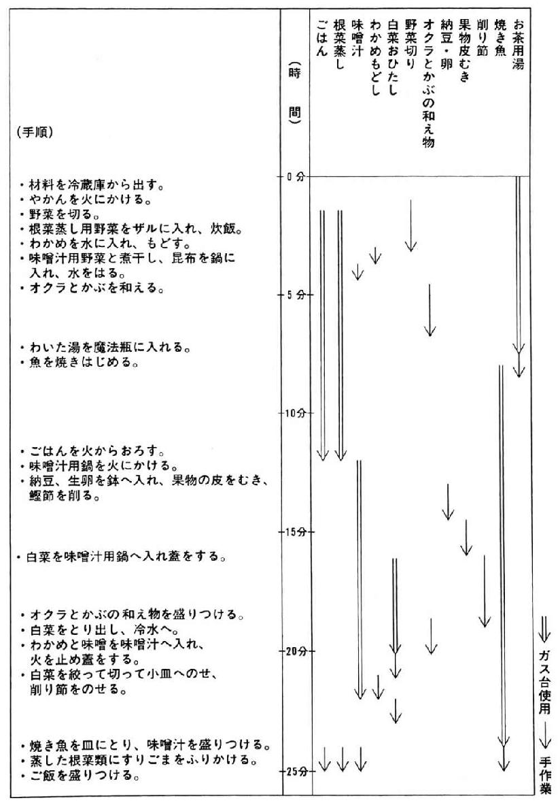

| 元気食 実践マニュアル１５５ (文春文庫PLUS) | |
| 魚柄 仁之助 | |
| 文藝春秋 (2001) | |
〈底 本〉文春文庫PLUS 平成十三年一月十日刊
(C) Jinnosuke Uotsuka 2007
〈お断り〉
本作品を「文春ウェブ文庫」に収録するにあたり、一部の漢字が簡略体で表記されている場合があります。
また、差別的表現と受け取られかねない表現が使用されている場合もありますが、作品の書かれた当時の事情を考慮し、できる限り原文の通りにしてあります。差別的意図がないことをご理解下さいますようお願い申し上げます。
〈ご注意〉
本作品の全部または一部を著作権者ならびに（株）文藝春秋に無断で複製（コピー）、転載、改ざん、公衆送信（ホームページなどに掲載することを含む）することを禁じます。万一このような行為をすると著作権法違反で処罰されます。
本書の効能書き
・元気な生活をやってゆきたい人に効きめがあります。
・食費を抑えたい人に効きめがあります。
・手間ひまかけたくない人に効きめがあります。
・食生活改善をやんなきゃなあと、真剣に思ってる人に効きめがあります。
本書は食生活改善の実践ポイントを７つの章に分けてみました。(1)ごはん技(2)野菜技(3)魚技(4)乾物技(5)備蓄技(6)減塩・減糖・減油技(7)料理の段取り技、こまかく分けると全部で１５５技になります。
元々は一九九六年に出版した『めしのチカラ』が親本ですが、元気食を実践する為のマニュアル本として、より使いやすく再編集したものです。一九九四年に出版しました『うおつか流 台所リストラ術』『うおつか流 清貧の食卓』をより実践可能なものとして書いてみた本だったんですが、今度の文庫化で、一層実用性が増したと思ってます。
世の中、グルメだ粗食だ、体によいだの買っちゃイケナイだのかまびすしい限りですが、そげなもん、あたしゃうわついた「ブーム」じゃと思っとりますの。身近な食材を自分の五感と体を使ってやりくりして食べる事、これにつきるんやないでしょか。
楽に作って楽しく食べりゃ、フトコロも楽になり、体も楽になる。そげな「楽膳」を続けるうちに、人間、元気もでるってもんでしょ。皆様の元気食の素となりますように......。
魚柄仁之助
目 次
1 コメを炊くツボ／2 押麦飯の作り方／3 もち黍飯の作り方／4 もち粟飯の作り方／5 稗飯の作り方／6 大豆飯の作り方／7 小豆飯の作り方／8 大根葉飯の作り方／9 かぶ飯の作り方／10 ほうれん草飯の作り方／11 春菊飯の作り方／12 小松菜飯の作り方／13 しそ飯の作り方／14 ひじき飯の作り方／15 わかめ飯の作り方／16 海老飯の作り方／17 じゃこ飯の作り方／18 干し椎茸飯の作り方／19 切干し大根飯の作り方／20 クコの実飯の作り方／21 コーン飯の作り方／22 寒天飯の作り方／23 炊飯器の多重活用のやり方／24 ゆで卵付炊飯のやり方／25 おかゆ付炊飯のやり方／26 蒸し野菜付炊飯のやり方／27 弁当付炊飯のやり方
28 旨い野菜料理のツボ／29 味噌汁のコツ／30 寒中味噌汁の作り方／31 暑中味噌汁の作り方／32 春秋味噌汁の作り方／33 トマト味噌汁の作り方／34 冬の野菜鍋の作り方／35 鍋物のつけダレの作り方／36 ベタカロ鍋の作り方／37 蒸し野菜の作り方／38 蒸し野菜のつゆびたしの作り方／39 蒸し野菜のごま和えの作り方／40 蒸し野菜の酢漬けの作り方／41 蒸し野菜の和え物の作り方／42 おひたしのツボ／43 蒸しおひたしの作り方／44 ゆでおひたしの作り方／45 野菜炒めのツボ／46 瓶漬けのツボ／47 スティック漬けのツボ／48 わがまま漬けのツボ／49 青物野菜冷凍のやり方／50 しなびた野菜の使い方
51 しょう油煮の作り方／52 塩味煮の作り方／53 味噌煮の作り方／54 鯛麵の作り方／55 フライパン焼きのやり方／56 蒲焼きのやり方／57 照焼きのやり方／58 ふりかけの作り方／59 茶匙料理のやり方／60 茶匙たたきの作り方／61 すり身ハンバーグの作り方／62 サーモンパテの作り方／63 魚を包丁でおろすツボ／64 包丁上達のツボ／65 刺身を作るツボ／66 すき身のとり方／67 吸い物の作り方／68 内臓の煮方／69 お笑いコラム［鰯一点張りっ！］／70 お笑い小説［白子とＯＬ］
71 乾物のツボ／72 保管のツボ／73 中華風切干しサラダの作り方／74 切干し煮の作り方／75 切干し炒めの作り方／76 干し椎茸の使い回し方／77 干しわかめの使い回し方／78 ひじきの煮物の作り方／79 豆ひじきの作り方／80 ピリカラひじき鶏の作り方／81 昆布の使い回し方／82 鰹節のツボ／83 鰹節の保存のやり方／84 鉋箱の手入れのやり方／85 煮干しのツボ／86 煮干しの酢漬けの作り方／87 干し海老のツボ／88 干し海老のトマトソースの作り方／89 海老入り焼きそばの作り方／90 ホタテの貝柱の使い回し方／91 大豆料理のツボ／92 ゆで大豆の作り方／93 大豆の酢漬けの作り方／94 大豆の和え物の作り方／95 大豆ドレッシングの作り方／96 煮豆の作り方／97 呉汁の作り方／98 粕汁の作り方／99 寄せ豆腐の作り方／100 緑豆もやしの作り方／101 ひたし豆の食べ方／102 凍豆腐のツボ／103 ドライフルーツのツボ／104 プルーンの使い方／105 干しアンズの使い方／106 クコの実の使い方／107 煮汁の寒天寄せの作り方／108 ミルクフルーツ寒天の作り方／109 パン耳乾パンの作り方
110 備蓄のツボ／111 焼き海苔のツボ／112 小女子のツボ／113 すりごまのツボ／114 黄粉のツボ／115 しょう油漬けのツボ／116 ニンニクしょう油の作り方／117 ラッキョウしょう油の作り方／118 生姜じょう油の作り方／119 唐辛子しょう油の作り方／120 焼酎漬けの作り方／121 ラー油の作り方／122 梅干しの作り方／123 乾燥しその作り方／124 塩漬けしその作り方
125 減塩・減糖・減油のツボ／126 カリウム減塩のツボ／127 組み合わせ減塩のツボ／128 減塩味噌汁の作り方／129 食膳減塩のツボ／130 だし味減塩のツボ／131 麵類減塩のツボ／132 減油料理のツボ／133 減油炒め物のツボ／134 すりごま減油のツボ／135 木の実減油のツボ／136 バナナスキムミルクの作り方／137 スキムミルクヨーグルトの作り方／138 油減らしのツボ／139 減糖料理のツボ／140 甘みのひきだし方／141 カレイの煮つけの作り方／142 豚の角煮の作り方
143 段取りのツボ I／144 かたづけ上手のコツ／145 台所道具のそなえ方／146 段取りのツボ II／147 ポテトサラダの作り方／148 コロッケの作り方／149 鶏肉ジャガの作り方／150 ジャガ芋スープの作り方／151 貧乏段取りのツボ／152 電熱器の使い方／153 段取り表の使い方／154 段取りのツボ III／155 冷蔵庫管理のツボ
タイトルをクリックするとその文章が表示されます。
元気食 実践マニュアル155
第一章 ごはん技27
〈１〉コメを炊くツボ
「今日も元気だ、ごはんが旨いっ」
てな標語があったかどうか知りませんが、あったかごはんをしっかり食べる、これが元気の素だと思っとります。
戦後、米国の宣伝にのせられて「コメを食べると頭が悪くなる」だの「パンのほうが健康食」だのいっていた人たちも近ごろは、
「ヒェー、えらいこというてしもうた。かんにんしてくれい」
と思っていることでしょう。
世界中でどんどん増えてきている糖尿病やガン、その他の成人病。欧米型食生活の広がりがそれに拍車をかけているということも明らかになってきております。コメを主食とした日本食の良さがこんなにも注目されている時代は過去になかったのではないでしょうか？
にもかかわらず「コメ離れ」が進行しているのがわたしには「ようわからん」ことなのです。ごはんは面倒、パン簡単？ そんなこたぁ、ありまっせんっ!!
小麦粉からパンを焼きあげることを考えてみい。コメといで水はコメの一・二倍、あとは火にかけるだけのごはんとは、くらべものにならないくらい「面倒」ではないですか。おまけにパンは、バターや塩、ショートニング、砂糖などを入れるし、場合によっては保存料なんかも入れています。
その点コメは、なにも入っていない「無添加」。そんなごはんが肥満や糖尿病の予防に役立つにはわけがあります。パンのような粉食（小麦粉）の場合、食べた直後、血糖値が急に高くなります。高くなったかと思うとあれよあれよという間に血糖値は下がってしまうのです。
ところが粒食であるごはんの場合、血糖値はゆっくりと上がってゆき、一定の高さで横ばい状態がつづきます。そしてゆっくりと下がってゆくのです。血糖値が急激に上下するとインシュリンも急激に使われるから、それこそ糖尿病のもととなります。
朝食にあったかごはんをきっちり食べておけば、午前中は血糖値が保たれるため、脳の働きも活発になるのです。脳ってブドウ糖しかエネルギー源にできないんですもん、血糖値が急に下がったら、そりゃ困りますがな。
そんなこんながありまして、元気な食生活の基礎作りは、「おうちに帰ればごはんがある」。まずはこれですがな。そのごはんとてただものではありません。よその家のごはんをただでいただく......、ボケッ、そりゃただめしじゃが。
ただたんに白米を炊くだけじゃなく、炊くときにちょっとひとひねり工夫をこらすことで、ごはんの栄養価をドドーンと高めようというのがこの章のテーマなんでございます。ほとんど下ごしらえしないのにごはんの栄養価は上がるという、お手軽な「めし、あがれ」作戦、いってみまっす。
健康食というと、即、玄米食と思われがちですが、それはそれ、あくまでもひとつの考え方、方法論であって、「絶対」ではありません。
玄米は白米にくらべて、ビタミンＢや繊維、ミネラル類を多くふくんではおりますが、いかんせんその表皮がかたいため、炊飯に手がかかります。また、繊維が多すぎると腸で栄養分の吸収をさまたげることもあるのです。わたしの場合、根っからの横着者です。
「簡単に美味しく炊ける白米を元にして、あれこれブレンドすればごはんの栄養価もドドーンと上がるんやなかろうか？」
てなこと考え、日夜食べているのがこの「雑穀飯」。これはまったくの手間いらず。だってコメをといで水加減するとき、好みの雑穀をすこし加えるだけでいいんですもん。簡単すぎてご先祖さまにもうしわけない。
そういえば、わたしらのご先祖さまもごはんを炊くときは雑穀をぎょうさん入れて炊いていたようじゃのう。昔はコメがなかなか手に入らなかったので、雑穀で増量していたようだが、それがじつは健康食とも知らんで、
「銀シャリを腹いっぱい、食べたい......」
なんていっていた。ナンマンダー、ナンマンダー......。
あっ、いかんっ。ご先祖さまを呼んでしもた。そうじゃ、雑穀じゃ、雑穀の紹介せにゃならんかったんや。
コメに混ぜて炊く雑穀というと「稗、粟、麦、黍」などがお手軽なところです。
「なんじゃ、こりゃ。鳥のエサやないか？ 人さまの食べ物やないわい」
そりゃないでしょ。鳥のエサっていうけど、
大飯喰うのは 相撲トリ
追ってくるのは 借金トリ
火事が多い 三の酉
かくいうアンタは 給料トリ
ほれ、こうしたことわざにあるように、人さまがトリとおなじものを食べて悪いということはぜーんぜんありまっしぇん。と、気をトリ直して雑穀を買いにでかけたのでありました。
電話帳のハローページで調べると、雑穀商とか、乾物商が出ております。電話をかけてから買いにでかけました。
いまや鳥のエサくらいにしか考えられていない雑穀が、あるわあるわ。もち黍、もち粟、稗、押麦なんぞを買って帰り、それ以来、わたしのごはんは「雑穀入りごはん」と変身してはや一〇年。白米だけで炊くことはほとんどなくなった今日このごろです。
では、おもだった雑穀飯、いってみます。
〈２〉押麦飯の作り方
押麦入りのごはんは白米だけのものより食感が軽い感じになります。おなかにもたれず便通もよくなりますから、便秘気味の方、ダイエット中の方にもおすすめだと思います。
押麦はコメ屋、スーパー、乾物屋、どこでも売っていますし、一キロで二七〇円から三〇〇円とコメよりはるかに安いのです。
押麦の名の通り、押しつけられて平べったくなった麦ですが、そのまんなかに黒いすじが一本。これがはい芽でありまして、ここにビタミンＢが残っているのです。
押麦はコメとちがって水とぎせずそのまま使います。コメをといで水をきったところに、コメの三割から四割の分量の押麦を、ザザーッと加えます。そしてコメと押麦の全体量で水加減をして炊けばいいのです。
コメはといでから一時間以上水にひたしておいて炊きますが、押麦は水につけないほうがいいみたい。押麦の袋には「一時間、水につけて......」なんて書いてありますが、そうすると炊きあげたときごはんがベタつきます。だから、炊く直前に買ってきたままのやつを入れてＯＫ。炊きあがりは押麦だけが上のほうに浮きあがりがちなので、全体をよくかき混ぜないと、押麦ばかりの人とごはんばかりの人ができてしまいます。それがもとで家庭不和......なんてこと、昔ならあったかもしれんのう。ナンマイダ、ナンマイダ。
〈３〉もち黍飯の作り方
知り合いに望月君という人がいますが、この人、ちっともきびきびしていません。きびきびしていたら「もち黍君」と呼んでやろうと思ったのですが、こちとらの意に反して（なにが意に反してだ、勝手に決めこんだだけのくせに）、ネバーッとした粘っこい性格なんです。
じつはその粘りがもち黍の持ちきび、じゃなかった、持ち味なのです。
もち黍も水にひたしたりせずに、炊く直前に加えます。一合のコメに対し、マヨネーズ瓶の蓋に一杯くらいを目安にしています。
あっ、スンマッセン、説明するの忘れちょった。うちでは買ってきたもち黍を、俗にマヨネーズ瓶といわれる広口瓶にいつも入れてあります。
これに入れて台所の棚に置いておけば、いつでもさっと出せるし、なんせ透明の瓶ですから使い忘れることもありません。ホレホレ、よくあるでしょう、買ってきた乾物なんかを袋のまま戸棚に入れておいて、いつの間にか忘れちゃった......なんてこと。いつも見えるところで、しかも出しやすい容器、これぞ元気な食事の下心、いや、下準備。
〈４〉もち粟飯の作り方
もち黍とまったくおなじ炊き方でできるのがもち粟です。見た目にはどっちが黍でどっちが粟か、素人にはよくわからんです。しかし、黍も粟も炊きあがるとごはんに粘りが増すようです。前に出てきた押麦ごはんは粘りがありません。ありませんどころか、パサパサしています。だから押麦を加えるときは、もち黍やもち粟も加えてやると粘りが出て食べやすくなるんです。
〈５〉稗飯の作り方
最後に稗ですが、これはコメといっしょにしばらく水にひたしておかないとやわらかく炊けません。入れる分量は黍などとおなじか、すこし少ないくらいが食べやすいと思います。
いま、わたしが使っているのはもち黍ですが、黍も種類によっては粘りのないものがあります。粘りのない黍や稗、粟、そして麦などがたっぷり入った雑穀飯っていうのは、そりゃもうあんた、ボソボソして食べにくいったらありゃしません、と思うでしょう。
ところがぎっちょん。トロロとお見合いさせるんですがな。トロロ芋、つまり山の芋。山芋の皮をむいてすりおろし、そこにそばのつけ汁をすこし入れてすり鉢で軽くすります。
このトロロを炊きたて、あつあつ、ボソボソ雑穀飯にた～っぷりとかける。焼き海苔をちぎってふりかける。すこしわさびを混ぜて香りづけ、ザバッとかっこむ。ガシガシ嚙む。山芋の粘り、そばつゆの旨み、おおいかぶさる。ボソボソ、気にならない。あまりの旨さに泪が出る。涙、泪の雑穀飯。
「あ～っ、バカだね。こげんぎょうさん、わさび入れてからに......。そりゃ、泪も出るわな」
ごはんの充実、第一歩は雑穀飯。日本の長寿村のお年寄りもこういった雑穀をどっさり食べてきたようですが、その人たちが食べているから長寿食だという単純な考えは、ちとどうかと思います。
長寿には食物以外のいろいろな要因もからまっていますから、雑穀飯イコール長寿食というのはすこし早計な感もありますが、雑穀入りのごはんがもつパワーはいろいろな形で現われています。
ナトリウム排泄力や毒素の解毒力もみられるようですから、高血圧やアレルギーの人に雑穀飯はモテモテなんです。もち黍、もち粟、稗などは押麦にくらべると倍の値段ですが、使う量が少ないのでたいして気になりません。ちなみにわたしが買った値段はというと、エート、たしか......、あっ、そうかあ、「食べもの通信」編集部の人からもらったんだっけ......。
〈６〉大豆飯の作り方
これは大きな豆ごはんと小さな豆ごはんのおはなしです。昔、あるところに大きな豆ごはんと小さな豆ごはんが納屋に住んでいました。これが「納豆」のはじまりで......。
うそです、ある時期、昔ばなしのニセモノ作りにこっていて、ありもしない昔ばなしをデッチあげておりました。これからのはなしは大豆ごはんと小豆ごはんのことです。スミマセン。
大豆や小豆はカルシウム、タンパク質をどっさり抱えこんでいます。そして穀物であるコメと組み合わせることによって、トリプトファン、リジン、メチオニンなどの必須アミノ酸をバランスよくとることができるのです。
大豆がからだにいいのはわかっちゃいるけど、めんどくさくって......と豆料理をしない人も、これなら簡単。ホントにすぐできてしまいます。
まず大豆ですが、小粒大豆を買ってきます（ちなみに小粒はすごく安いのよ）。夜、翌日分のコメをといだらコメの分量の一割くらいの小粒大豆を入れ、水をたっぷりはっておきます。翌朝になると大豆が水をたっぷり吸って大きくふくらんでいます。そこで一度水を捨て、きちんと水加減をして炊きます。
小粒大豆はひと晩水にひたしておけば一五～二〇分で火が通りますから、ちょうどごはんを炊くのとおなじ時間なんです。ごはんが炊きあがったころには大豆もやわらかくなってるという寸法です。
大豆とコメをいっしょに炊くと、大豆の甘い香りがプーンとたちこめ、食べるとほんとうに甘い。
こんなに簡単に必須アミノ酸強化飯が食べられてええのだろうか？ などと思うのも束の間、もっと手軽、というか、インチキな豆ごはんを考えつきました。
第四章に出てきますが、わたしは大豆を一度にドバーッとゆでて冷凍にしています。それを必要な分量だけ解凍しておいて、電気釜で炊きあげたごはんにさっと混ぜ、一五分ほど保温にして蒸らせばインチキ大豆ごはんのできあがり。これでもけっこう豆風味がしますから、まんざら捨てたものではありません。
〈７〉小豆飯の作り方
さて、大豆のあとは小豆ですが、これは大豆のようにひと晩水にひたしてコメといっしょ......というわけにはいきません。
小豆は前もってゆでて、小分けして冷凍にしておきます。その冷凍ゆで小豆を凍ったまま、水加減した炊飯器に入れてスイッチポン。これで炊きあがったときには小豆飯になっています。赤飯のようにはなりませんが、それでもうっすらピンクっぽい小豆ごはん。ついつい、ゴマシオをパラリとふっちゃったりなんかして......。
大切なのは小豆のゆで方。小豆を鍋に入れ、水をたっぷりとはったら即、火にかけます。沸とうしたら火を弱め、ときどきつまんでやわらかくなったらゆであがり。すぐにザルで水気をきって冷まします。充分に冷ましてから、小分けして冷凍ストックします。ちょっと面倒に思えますが、一カ月に一回やっておけば、いつでも充実した豆ごはんができますからたいしたこっちゃありません。
まあ、豆ごはんでもっとも簡単なのは、安い小粒大豆をコメといっしょにひと晩水につけておくという方法だと思います。一度やってみてくださいまし。
でも、大粒大豆はイカンヨ。いくら金持ちじゃいうても大粒はイカン。だって、火が通るのに時間がかかってしまうでしょ。ってことは、ごはんは炊けてるのに大豆は半煮え。
おかげでおなかをこわして、おなかゴロゴロ。ときは今、通勤電車のスシ詰めの中。おりしも途中止まらぬ急行電車。あっ、あ、あ～～。こ、こつぶ大豆にしとけば......。必死でこらえるおなかゴロゴロ、不覚にも流す泪はこれまた大粒、因果はめぐる大粒大豆。
「小粒ちゃあーんっ!!」
〈８〉大根葉飯の作り方
気の毒なんです。可哀そうなんです。だってえ、そうじゃありませんか。ビタミンやカルシウムなんぞをいっぱいこっぱいふくんでいるというのに、「葉っぱ」というだけでバサッと切捨て御免にされている大根の葉。
わたし、大根葉の味方です。だからあなたの、カルシウムください。カロチンください。ビタミンＣください。大根って、ぶっとい白い根っこより葉っぱのほうが栄養多いんだもんっ。
気の毒な大根葉をザッと洗い、みじん切りにしたらボウルにとり、塩をパラリとふって手でよくもみます。気の毒とか可哀そうとかいってるくせに、心を鬼にしてしっかりもみますと、大根葉が耐えきれず緑の泪を流します。そうしたら大根葉をよく絞って下ごしらえは完了です。
これはごはんが炊きあがって、蒸らしに入ったところで炊飯器の蓋をサッと開け、一瞬のうちにポイッと放りこみ、間髪入れず蓋を閉じます。混ぜるのは蒸らしが終わってからで充分です。
さて蒸らすこと一五分。気の毒な大根葉は緑あざやかに、さよう、風薫る五月の木の葉のような緑色に輝いておるのです。塩もみして水分を抜いておきましたからベタつくこともありません。
新鮮な葉っぱの香りと炊きたてごはんの香り、なぜかなぜでも、ふりかけたくなるのがちりめんじゃこ。あつあつごはんとシャキシャキ大根葉にちりめんじゃこのふりかけとくりゃ、しんぼうたまらず、「おっかわりィ！」。
こんなにカルシウムがあってビタミンもあって、おまけに繊維質もたっぷりだというのに......、なんで切捨て御免なんじゃ。えっ、そうは思わんか。なにっ？ 思わん？ なんでや、なんで思わん。ンッ？ いや、まあ確かに......そりゃそうじゃ、切捨てる人が多いからワシはただで大根葉もらえたんじゃもんなあ。ちゅうことは気の毒な大根葉よりもっと気の毒なワシっちゅうことになるんですかいのう。
ええいっ、ついついしみったれたほうへと流されてしまったわいっ。いつもただで大根葉もろうとるわけやないわい。たった一度や。一度もろただけのことを、ついついデフォルメしてしまうんじゃ。その証拠にちゃんと買うた野菜の菜飯も出しちゃるわいっ。束ンなってかかってきゃぁがれっ!!
〈９〉かぶ飯の作り方
〈10〉ほうれん草飯の作り方
〈11〉春菊飯の作り方
〈12〉小松菜飯の作り方
と啖呵を切ったとたん、かぶが束ンなってかかってきてしまいました。
身の危険を感じたわたしは、すかさず菜切り包丁でかぶの葉っぱをバッサリやって、あとは大根葉とまったくおなじ要領です。みじん切りにして塩もみ。炊きあがった瞬間、電光石火で放りこんだら蒸らしが一五分。これまた、あざやかな緑は......。あんまりこういう表現しとると歯の根が浮くし、腹が減って減って原稿がすこしも進みまっせん。
まあ、こういう菜飯はきざんで塩もみ、炊きあがりに放りこんだら蒸らしてホイ、というのが基本的な手順です。
まちがっても炊きはじめから混ぜてはなりませぬ。悲しい結果が待っとります。シャキシャキした歯ざわりなんぞ望むべくもありません。ただのブヨブヨした物体です。雨に洗われたあと、お日さまの光を全身にうける五月の緑といった（アッ、歯が浮いたっ!!）あざやかな色なんぞみじんもなし。田舎町の洋品店のショーケースに一〇年間置きっぱなしになってる造花の葉っぱみたいな色あせてくすんだ黄緑色になっています。ネ、悲しいでしょ。
だから菜飯の場合、「菜」は炊いてはダメなのです。あくまでも蒸らすだけ。ほうれん草や春菊、小松菜、菜の花なんぞで作るときは、一度熱湯でサッとかたゆでにしてから、みじん切りにして、これは蒸らしが終ってから混ぜこみます。
葉っぱをうまく利用して、ごはんをレベルアップ。気の毒な大根葉に救いの手を！ おじいちゃんに孫の手を！ 民謡歌手に合の手を！
〈13〉しそ飯の作り方
わたしの所属する橋口事務所は診療所もやっている不思議なところです。この事務所というか診療所は緑蔭診療所といい神奈川県南足柄市の山の中、つまり箱根の山中にあるのですが、さすがに南足柄です。どこへ行っても金太郎の像や金太郎の看板。男はみんな金太郎の腹がけをして、クルマじゃなくてクマにのっています。包丁はまだ普及してなく、刃物といえばマサカリで......。
どうしてこうなるんやろう。ワシ、しその話をしようと思ったのに、なしてこげなウソばっかりになるんじゃろう？ 南足柄のみなさま、すみません。
そうじゃそうじゃ、その南足柄の診療所へ行く途中の農道をクマにのって走っていると道ばたに、ここにもそこにも、金太郎がいっぱい生えておるので、ついつい金太郎めしを......。
もうやめます。しそです。そこかしこにしそがいっぱい自生しているのです。しそと見て黙って通りすぎるわたしではありません。ちゃんとひと声かけて、カギかけて......じゃなかった、車を止めて葉っぱや穂を摘んできます。このしその葉でもって、いともたやすくしそ飯ができるのです。だいたい五月から夏の終わりころまでしその葉っぱは摘めますが、しその穂となると、七月ころからになります。
作り方？ そんなもん書くほどのこともありまっせん。よく洗ったら葉っぱを重ねて、できるだけ細く切ります。これを炊きあがったあつあつごはんに混ぜこむだけで、ホイ、しそごはんのできあがりっ。しその穂についてる実をしごきとって混ぜるとプチプチしたしそごはん。
しそはαリノレン酸をふくむ油をもっています。だから、熱いごはんに混ぜこむと、その熱で香りが立ちのぼり、なんともいえないいい香りがします。しそを摘んできた日には、それこそ、しその葉たっぷりのしそ飯をトコトン食べます。とくにだなあ、きざんだしその葉やしごきとった実を一〇分ほどしょう油につけてから、ごはんにまぶしてみい。あんたはきっとしそ飯のとりこ「おいしそ症候群」になって、オーイ、しそ。おーい、しそ......。
このしそというのは、香りだけだと思ったら、おおまちがいです。カロチンがギッシーッとつまっているのです。ビタミンＣだって入っています。えらいです。立派です。とはいえ、一度に何十グラムもしそを食べる人はあまりいません。最近では、食品成分表的な値打ちでなく、例のαリノレン酸が注目されています。これがアレルギーを抑える働きをするのです。それに殺菌作用、防腐作用も見逃せませんから、夏場のお弁当にはよくこのしそ飯を使います。
コメにはリノール酸がふくまれていて、一日に必要なリノール酸は三食のごはんでだいたいまかなえるし、副食にもリノール酸はどっさり入ってますから、どちらかというと現代の食生活ではリノール酸は過剰になりがちです。
ところが、αリノレン酸は不足がちになっているのです。じつはこのリノール酸のとりすぎがからだにはよくありません。リノール酸を減らしてαリノレン酸を増やしてゆくのが安全な食生活なのですが、そのαリノレン酸を多くふくむものがしそだったんですがな。ホレ、これでまた、ひとつごはんの点数が上がりましたがな。
もちろんしそ飯のみならず、そばやそうめんの薬味なんぞにバンバン使うのもおすすめ......そっかあ、そっちが普通なのネ。
〈14〉ひじき飯の作り方
食生活の講演をたのまれることが多く、全国あちこちに出没していますが、ワシの話を聞きにくる大半は女性です。したがいまして質問も女性にありがちな内容になります。
「うち、貧血ぎみで朝あきまへんねん。お医者さんにカルシウムや鉄分みたいなミネラルとりなはれ、いわれるんやけど、なんや簡単な方法ありまへんやろうか？」
「鉄やカルシウムがとれて、ヨードや繊維もたっぷりのひじきあたりがいたって簡単なものですが......」
「エッ、あないなもん持っとるだけでおまわりさんにつかまるわ」
「ちがうっ！ そりゃ、はじきっ！」
「ああ、そっかあ、歴史の本やな。ヒエダノアレとオオノヤスマロの書いた......」
「なめとんのかっ、そりゃ古事記じゃ！」
「わかってまんがな、からこうてみただけですがな。怒らんといてえな、ひじき知ってますがな。黒うて、細ーいやつでっしゃろ......」
食生活改善の講演で漫才師を演じてしまう聴衆は、やっぱり関西人です。ギャグを受けとめてしまう自分のアホさを後悔しつつ、ひじきの説明をしたんですが、なんとこの人、ひじきを水でもどして煮るという、サルでもできるほどのことが、
「あ～、聞いとるだけでもしんど～」
という体たらく。口は動けど手は動かず。浪速女の口ぢから？
そんな人にはもうこれしかありません。ひじきを水でもどさなくてもできるひじきごはん。一度に大量のひじきを食べられるわけではありませんが、毎日すこしずつ、ひじきを食べることができるというのは重要なことなんです。
コメをといで水加減をします。ふつうより心もち水を多めにし、そこに「芽ひじき」という細いひじきを乾燥状態のままパラパラと入れて炊飯します。ひじきの分量はコメ一合に対し洋食用の匙（カレーライス用スプーン）にすりきり一杯くらいが目安。
これならまーったく「しんど～」くありません。買ってきた芽ひじきを例のマヨネーズ瓶に入れて台所に置いておくだけで、いつでもカンタンひじきごはん。でも、炊きあがって釜の蓋を開けるときはちょっぴり心の準備が必要です。だって蓋を開けると一面まっ黒なごはんが現われるんですもん。いいたくないけど、ちょっと異様です。でも、ここでビックリしてはいかん。まっ黒けなのは表面だけで、下のほうはふつうのごはんです。こいつをしゃもじで上を下へとかき混ぜるとできあがり。
磯の香りプンプンのひじきごはんが、なぜか納豆とよく合うんです。あつあつのひじきごはんに納豆ぶっかけて、わかめたっぷりの味噌汁で朝飯やった日にゃ、夏の臨海学校を思い出してしまいます。
ちなみにこのひじき、血圧を下げる作用もあるようですので、高血圧の方にもよろしいんじゃないでしょうか。ただし、からだにエエからゆうて、入れすぎたらいかんっ。一合のコメに匙二杯も入れてみぃ、ひじきごはんやなくなるど。それこそ、まっ黒クロのごはん入りひじきになってしまうど。からだにエエだか、なんだか知らんが、この項、いちおう「ひじき飯」なんじゃから。
〈15〉わかめ飯の作り方
これは難しい。非常に難しい手のこんだ飯なんだ。前出のひじき飯のように、
「ポイと入れてスイッチポン。あとは寝て待て......」
というようなわけにはいかんっ。
だってだって、干しわかめを水に一〇分ばかりつけてもどさにゃならん、大変なことだ。しかもその後、まな板を出し、その上にわかめをのせて包丁で小さく切らにゃならん。そして切ったわかめの水気を絞り、炊きあがったごはんに混ぜて五～六分蒸さねばならぬ。くだんの浪速女だったら聞いてるだけで気絶するか、大阪南港に入水しかねないだろう。
しかし、わかめごはんとて裏道はある。わかめごはんの裏道を通ったからといって道交法にふれるわけではないので、これはこれ、と割りきってやってみよう。
干しわかめにも柔らかいわかめから、かたい茎わかめまでさまざまだ。できるだけヘロヘロした、根性のかけらもなさそうなしょぼくれた（なにもそこまでいうことないか）干しわかめを買おう。これを裁ちバサミか植木バサミで小さく切ってマヨネーズ瓶に入れておく。こげなこと、冬だったらこたつに入ってテレビを見ながらでもでき......＊×♂★∀（手を切らぬようご注意ください）。
ごはんが炊きあがったばかりの炊飯器の蓋をサッと開け、このカットわかめをひとつまみポイッと放りこむ。すかさず蓋を閉じて一五分蒸らせば、蒸気でわかめはすっかりもどり、これが裏道わかめごはん。干しわかめでも一五分蒸らせば充分にもどります。と、このくらいで納得しては奈良の大仏。わかめごはんの外道というのがある。これはもう「ずるい、ひきょう」と罵詈雑言覚悟でやるしかない。市販のカットわかめ（ほら、『リケンのふえるわかめちゃん』みたいなやつ）ですませてしまう。ごはんの炊きあがりにカットわかめを放りこみ、一五分蒸らしてできあがり。しかしここらがやっぱりわかめごはんの外道たる悲しさよ。カットわかめって、もどすとすごく大きくなっちゃうの。自分の手で干しわかめを切るときは小さく切るから、もどしたあともそんなに大きくならないけれど、売ってるやつをそのまま使うと、カットわかめはほんとうに大きくなっちゃうの。ベロンベロンに大きなわかめの入ったわかめごはんって食べにくいったらありゃしない。やっぱりこれは外道よね。
ちなみにこのわかめごはん、ひじき同様、鉄やカルシウムをたっぷりふくんでいるし、ビタミンも多い。味噌汁にわかめを入れない日はわかめごはんでミネラルを補おう。海の幸からミネラルをもらおうっ！ 朝飯をガッチリ食べよぉう！ おおうっ！
〈16〉海老飯の作り方
なにやら豪勢な名前になってきました。お殿さまならともかく伊勢海老のデーンと入ったごはんを食べていたら三日で破産、一〇日で借家は立ち退き、その後は当然ホームレス。いくらなんでもそげなことはできまっせん。それに伊勢海老がデーンと入ったごはんなんて、
「どうやって食べるん？」
てな気がいたします。やはり、コメと混ぜて炊くからには小さな海老でなくては都合が悪い。てなわけで、大金持ちのわたしは伊勢の漁港に「二センチくらいの伊勢海老を送ってくれいっ!!」と注文したところ、即日クール便で届いたミニチュアの伊勢海老が五キロでわずか五〇万円。「お～安いのう、こげな安かもんじゃったら毎日とってもええのう！」と、それ以来ミニチュア伊勢海老を......。
夢です。海老のこと考えながら昼寝してたら、恐ろしい夢ば見てしまいました。そんなミニ伊勢海老なぞあるわけない、そんなお金もあるわけない。わたしがごはんに入れとる海老なんて全長わずか一センチくらいの「姫海老」や「桜海老」ですがな。
第四章でも出てきますが、姫海老とか桜海老、オキアミは「えーっ、ウッソォ」というくらいに安いし、カルシウムはたーっぷり。これを使わぬ手はありまっせん。そのままでも食べられる姫海老ですが、すこしかたいので、ごはんといっしょに炊いたほうがやわらかくて食べやすくなります。
一合のコメに対してマヨネーズ瓶の蓋一杯弱の姫海老を、といで水加減したコメといっしょに炊く。ただそれだけのことですから前述のひじき飯とほぼおなじ炊き方です。
これも買ってきた姫海老をマヨネーズ瓶に入れて台所に並べておけば、いつでも手軽に使えます。干した海老はカルシウムなどのミネラル、そしてタンパク質を多くふくんでいますから、コメの弱点をフォローしてくれる強い味方です。
〈17〉じゃこ飯の作り方
この姫海老とおなじような働き者が「ちりめんじゃこ」。生干しでなく、しっかりと干したちりめんじゃこのほうが、日持ちがいいから、長いこととっておけます。そのままだとちょっとかたいのですが、炊きこむとやわらかく食べやすくなります。
もともとやわらかい生干しのシラス干しや小女子などはコメといっしょに炊きこまず、シラスおろしなどのおかずにするほうがいいと思いますが、姫海老やかたいちりめんじゃこは炊きこみがおすすめです。
じゃこ飯は魚の風味に塩味が少々ついたごはん、姫海老飯は小さいながらも海老の香りプンプンただようごはん。それにどちらも動物性タンパク質ですからごはん全体に旨みが広がります。だからこのごはんは、じつはおにぎり用ごはんなのです。
おにぎりを食べるときって、とかくおかずが少なくなりがちです。「だったらおにぎりそのものをパワーアップすりゃええんじゃい」というのがこのおにぎり用海老ごはんにじゃこごはん。伊勢海老なんぞ縁がなくても海老の香りプンプン漂うミネラルいっぱい海老ごはん。シャコ飯なんざなくたって......。
「あっ！ シャコ飯食べたぁいっ。ゆでたシャコのつめを切るでしょ。殻をむくでしょ。そんで、そんで、熱いごはんにのっけるでしょ。わさびじょう油をちらちらとかけてぇ、もみ海苔ふってぇ......。シャコ～、シャコや、シャコがほしいイイイッ」
「もしもし。屋根つき月極め三万五〇〇〇円の車庫なら、この先に......」
〈18〉干し椎茸飯の作り方
秋になるとお金持ちはマツタケ飯を食べるそうです。お金持ちでなければマイタケ飯とかシメジ飯を食べます。しかし、お金のあるなしにかかわらず、健康的な食生活をする人は「椎茸飯」を食べるんだあぁ！ それも干し椎茸を食べるんだあぁ!!
それにはちゃんと、わけがあるんでぃ。
干し椎茸にはビタミンＤがあるんでぃ。
これがカルシウムやリンを吸収しやすくして骨を丈夫にするんやでぃ。おまけに、コレステロールの排泄をよくするわ、血圧を下げるわ、抗ガン作用はあるわ、肝臓にもええし、糖尿とか高血圧とか、動脈硬化にも効くんやどぉ。どぉやあ！ まいったかっ!!
あ～、血圧が上がってしもた。干し椎茸ごはん食べよっと。
干し椎茸飯は、一合のコメに対して干し椎茸を二枚くらい。前の晩に干し椎茸を瓶に入れ、水をたっぷりはってひと晩冷蔵庫に入れておくと朝にはすっかりやわらかくなっています。もどった椎茸をギュッと絞って細く切り、といで水をきったコメに混ぜます。そして椎茸のもどし汁を入れ、足りない分は水を足して水加減をします。あとはただ炊くだけで椎茸飯のできあがり。
炊きあがりはもどし汁のせいでごはんが薄茶色になっていますが、むせるような香りが立ちのぼり、当然、ダシの旨みもバッチシ。
干し椎茸といえば鰹節、昆布同様、和風だしの大御所さま、旨くないわけがあーりません。しかもその旨味の素であるグアニル酸は生椎茸にはありません。お天道さまの日を浴びてこそできる旨みなんです。身近にありながらあまり使われていない干し椎茸ですが、ごはんに炊きこむなら、それこそ簡単なものです。椎茸ごはんをガシガシ嚙んでたっぷり食べたおかげでしょうか、さきほどまでのハイテンションもおさまりました。怒りっぽくて血圧の高いあなた。椎茸飯でも食べてもっと穏やかになってくださいましな。
〈19〉切干し大根飯の作り方
──ある日の山手線車中──
「あたしこのごろ○○○が出ないの」
「えーっ、ヤッダァー。あたしもこないだまで○○○が出なかったんだけどぉ、切干し大根とかぁ、ひじきとかぁ、ごぼお？ とかぁ食べるようにしたらぁ、○○○がすっごくよく出るようになったの」
「ほんとー？ でもぉ、ごぼお？ あれって○○○はよく出るらしいんだけどぉ、オ○ラもよく出るっていうじゃあん。そのへんがいまいちなのよねぇ」
「だあからぁ、ひじきとかぁ、切干し食べて○○○を出やすくするんじゃあん」
○○○の出が悪くて困っている人は多いようです。○○○が出ないままでいると腸の中に腐敗菌がはびこって、これまた困ったものです。
そんなとき、食物繊維の多い切干し大根を食べるとかたまりがちなかたい○○○がホゴホゴした動きやすい○○○になるようです。そのうえ、切干し大根はカルシウム、カリウム、鉄分もたっぷりふくまれていますから、貧血ぎみの方、骨粗しょう症が恐ろしい方、塩分をおとしたい方にもお役に立てます。
さて切干し大根飯を作る場合、使う切干し大根の種類にもよりますが、基本的には夜ねる前に水につけておき、翌朝もどした切干し大根をギュッと絞って、できるだけ小さく切ります。それをといで水をきったコメと混ぜ、切干し大根のもどし汁で水加減して炊きます。もどし汁はいいだしが出ていますから捨てずにかならず使います。炊きあがりは、すこし黄色っぽく、日なたの匂いというか、お日さまの匂いがプンプン。それに、意外と甘いのね。
切干し大根は第四章にくわしく書きましたが、もっとも手軽に食べることのできる乾物のひとつです。そしてこの切干し大根飯も、いたって簡単に、不足がちな栄養を補給できるごはんだと思います。
「このごろさぁ、○○○がすこしずつ出やすくなったみたい。前みたいにかたくなくってぇ、なんかフコフコッて感じ？」
「よかったじゃぁん。あたしなんかぁ、わかめの味噌汁とかぁ、ひじき？ けっこうはまってるんだよネ。だぁからぁ、○○○なんてもうスルスルもんなんだもんっ。あっ、渋谷に着いちゃった、降りなきゃ。イヤーン、通してよォ、通してったらあ！ ウーンコラショッとぉぉ!! あっ、やだぁ、いっちゃった」
〈20〉クコの実飯の作り方
わたしはいま、神奈川県南足柄にある緑蔭診療所におる。山の中のこの診療所、夜中二時をすぎると、星の光以外にあかりはない。杉木立ちを抜ける風の音が聞こえるだけだ。
そんな真っ暗闇のなか、ろうそくの火をたよりに地下室への階段を一歩一歩下りていく。頑丈な樫の木の扉をきしませながら開くとそこは調剤室だ。何百種類もの漢方薬が壁一面にしつらえられた薬だんすにつまっている。
わたしはこの日を待っていたのだ。中国三〇〇〇年だか四〇〇〇年だかの歴史をもつ漢方薬、そしてそれらは日常の食事にも「薬膳」として活かされていると聞く。きっとこの調剤室にはあの夏の草が生えた冬の虫とかいう幻の漢方薬もあるにちがいあるまいて。喰い意地のはった院長を河豚の毒で眠らせとるあいだに探しださにゃ......。
手前のひきだしから開けてみる。ンッ？ なんじゃこりゃ、みかんの皮の干したもんやないか......。こげなもん、ワシだって持っとるがな。つぎは......、なんやこれっ、クコの実やないかいな。なあにが漢方じゃ、あー、あほらしっ、やめやめ。こんなんやったらうちの台所とおなじや、おおかたつぎのひきだし開けても、しその干したんとか、生姜の干したんが出てくるに決まっとる。やあめたっと。
てなわけでおうちに帰ったわたしは、さっそくあの「漢方」のクコの実をコメと混ぜて炊いてみました。
一合のコメにカレー用匙一杯くらいのクコの実を混ぜて炊飯します。炊いているうちにクコの実はやわらかくなり、その赤い色や甘い味がごはんに移るので、できあがりはほんのり上気したような湯上がり美人の薄紅色。なにやら甘酸っぱい香りが立ちこめますが、味もやはり甘酸っぱい。とはいえ、とてもひかえめな甘酸っぱさ。中国四〇〇〇年の歴史の生んだピンクライスは薬膳飯。目の疲れなどにもいいらしく、スープや煮物にもよくクコの実を入れていますが、もっとも手軽にできるのがこのクコの実飯。
さて、くだんの院長ときたら、河豚の毒までもすっかり消化して、今日も今日とて、がしがし食べつづけとります。おかげで河豚から河をとったようになっちゃって困ったもんですが、漢方薬で脂肪をおとすということはでき......るくらいなら、当然本人がやっとるわな。
〈21〉コーン飯の作り方
「困るのよねえ、いくらたくさんとれたからって......。ダンボール箱いっぱいスウィートコーン送ってくるの、やめてくれる？」
くるんです。それもなんの予告もなしに。
「自分ちの畑で作ったコーンです。とれすぎるくらいとれましたのでぜひ食べてみてください」
てな手紙がついてくるんですが、ダンボール一箱といえば二〇本から三〇本分入っとります。札幌の大通り公園で商売するならともかく、東京でひっそり暮らすあたしにゃ、とても食べきれるもんじゃありまっせん。
とはいえスウィートコーンはもぎたてがいちばん美味しく、一日一日とすぎるうちに味はガタ落ちに落ちるもの。もはや、かたときの猶予もありませぬ。大鍋を用意してゆでたり蒸したりします（どちらかというと蒸したほうが甘いんで、わたしは、もっぱら蒸しています）。ゆでる蒸すといっても、沸とうしてから一五～一八分でやわらかくなるから楽なもんです。
さて蒸しあがったスウィートコーンは風にあてて、よく冷ましてからコーンの実を搔きとります。洋食用のナイフやスプーンを使い、とれにくいところは包丁で切りとります。こうしてとったコーンの粒を小分けして冷凍にしておけば、いつでも料理に使えるし、コーンの芯がないから冷凍庫の場所もとりません。
さてさて、この冷凍コーンを使ったコーンライスもなかなかおしゃれなごはんです。コーンを解凍するのはぬるま湯ですぐです。解凍したコーンをごはんの炊きあがりと同時に「エイッ」と放りこんで一五分蒸らせばこの黄色がとてもきれいなコーンライスのできあがり。
冷凍庫から出したばかりの凍ったコーンを炊飯器にゴロンと入れて、コメといっしょに炊いてもなんとかコーンライスにはなりますが、ちょっとコーンがやわらかくなりすぎます。それなら冷凍庫からとり出した冷凍コーンを、落ちないように炊飯器の上にのせてごはんを炊きましょう。炊きあがったころには炊飯器の熱でコーンはほぼ解凍されていますから、水気をギュッと絞ってごはんに混ぜます。
スウィートコーンというものは、ひじきやわかめなどのように特別ミネラルが多いとか、ビタミンが多いとかいうものではありません。でもコーンのもつ甘味と色合いがごはんをドレスアップすることはまちがいありません。子ども用のごはんやお弁当に、また、チャーハンやピラフ用に、「使える」コーンライスなんです。
〈22〉寒天飯の作り方
一九九三年は日本全国冷害のため、コメのできがトコトン悪い年でした。とはいえ、例年の七割強はとれたのだから、足りない分は麦とか黍とか混ぜて炊くなり、一食はうどんかパンにすればいいものを、どこのどなたかよう知らんが外国からドドーンと輸入して、あげくは輸入米がボソボソしているだのまずいだの文句いって顰蹙かって......。
すこしは反省したかと思ったら一年でケロリ忘れて、おコメのありがたさも忘れてからに。ブツブツブツ......。
てなことも遠い過去のようにいわれる今日このごろですが、あたしゃ一九九四年のタイ米騒ぎ、忘れません。国産米とのセット販売などという売り方も売り方ですが、買わされたタイ米の「処分に困った」というのもナサケナイことです。
パサパサしたのが持ち味のタイ米でしょうがな。あんたらジャポニカ（短粒米）以外は炊けんとかいな？ ちったあ頭使うて考えたらええんや。頭は帽子のせるためについとるんやないど！ と怒ったわたしは自分の古道具屋の店さきに「タイ米引き取ります」と看板を出し、余ったタイ米をタダでかき集めました。
タイ米を使ってなにを作るか？ そんなもん火を見るよりあきらかですがな。沖縄名物の泡盛、あれはタイ米で作っとります。つまり酒にすりゃあ、ボソボソもヘッタクレもありゃせんのじゃあ！ ってな調子で作ったのが「タイ米ドブロク」。これを作るところから、みんなで白昼堂々飲むところまで連日ビデオで撮り、あるテレビ局のドキュメンタリー番組で二〇分間放送しちゃいました。タイ米ドブロクって、ほんとうに旨かったとです、ハイ。
それでもまだまだ残ったもらいもののタイ米。それじゃ炊いて食べましょうということになりました。炊くときになってハッと気がついたのが台所にあった寒天です。
寒天はいわずとしれた海藻から作ったプルンプルンとかたまるやつです。こいつとタイ米をドッキングさせれば、もしかしたらパサパサ、ボソボソがすこしは改良されるのではないかと思って、やってみました（ようやるわと自分でも思いましたがな）。
タイ米をといで、ひと晩水につけておきます。翌朝水を捨て、新しい水ですこし多めに水加減。そこにコメ一合に対して棒寒天（二センチ～二・五センチ角）を長さ三センチくらい、それを小さくちぎって入れて炊きます。炊きあがって蓋を開けてみるとふつうに炊いたときよりつやつやしています。ジャポニカのような粘り気はとてもありませんが、そんなにパサつきはしませんでした。
寒天を入れて炊くのはいずれなにかに使える術だと思っていましたが、いわゆるジャポニカ種に入れてもなかなかよいということもわかりました。
いまやコメの流通もかなり自由になったせいか、すごく美味しいものもあれば、えらくまずいものもあります。後者に出合ったとき、寒天を入れて炊くと、つやつやしていくらか食べやすくなるのです。
ただし、あまりたくさん寒天を入れすぎるとごはんが冷めたとき、プルリンッてな感じになることもありますので、寒天の入れすぎにはご用心ください。
それにしても、一見たよりない寒天ですが、カルシウムもかなりふくまれているし、食物繊維もいーっぱい入っています。毎日のごはんにすこしずつ入れるのも簡単でよろしいんじゃありまっせん？
〈23〉炊飯器の多重活用のやり方
ふつうに売っているふつうのおコメに、これまたふつうに売っている食材を「ポイッ」と入れて炊くだけで、なにはともあれ、ごはんの得点が上がってきました。手間ヒマかけずに元気なごはんを作る方法とでもいうものでしょうか。しかし、このくらいで、
「うわぁーいっ、元気印のごはんができたっ。やったぁー」
なんて喜んどってええのだろうか？ そのくらいで大喜びするほどあなたはお人好しなのでしょうか？ あたしゃあ、まぁだまだ喜べんっ。こげなもんで喜んどるようじゃ先が思いやられるというものです。
第一章の前半は「コメになにかを加える」ということのみで進行いたしました。さて、ここからは、「コメを炊く」ことと同時進行する「炊飯器の多重活用法」とでもいうものでございます。
思えば昭和三〇年代よりこちら、炊飯器は目ざましい進歩をとげました。かまどで炊いていたのが、ガスで炊けるようになり、電気で炊けるようになったかと思うとタイマーがついて、炊飯器が勝手に炊いてくれるようになり、炊きあがればじっと保温までしてくださる......。もはや、ほんとうの意味で「自分でごはんを炊いてる」人はごく少数派といえるのではないでしょうか。
しかし、しかしだよ、それほど高い機能をもっておりながら、今も昔も「コメをごはんにする」っちゅう仕事しか炊飯器はしとらんでしょうが？ 一億二〇〇〇万人の日本国民は、そのことになにも疑問をいだかないのだろうか？ ほんとうにごはんさえ炊けりゃ、それでいいのだろうか？ 昨今の電気炊飯器だと約二五分でごはんが炊けるようです。その二五分間、炊飯器に電気やガスを送りこんでその結果が「ごはんだけ」でほんとうに満足なのか？ それとも、そげなこと考えるのは、
「変」
なんだろうか？ 変ですと？ いや、その、あー、「変」でけっこう毛だらけ、変呼ばわりを覚悟でわたしはこの問題に一石を投じたい。
健康的な食事作りをつづけるにあたってはァ、調理時間の短縮ーッ、いわゆる時短も重要なポイントなのだーッ。短時間でバランスのよい旨い食事を作れないとォ、よい食生活も長つづきしなくなーるッ。一日にィ、六時間も七時間も料理にかけられる時間とォ、お金とォ、心のゆとりをもってる人にはァ、関係ないかもしれんがァ、あたしゃそげな御仁、まだお会いしたことがなーい。たいていは面倒くさいがなんとかやろう、ってな調子でやっとると思うー。調理の時短を勝ちとるのはァ、デモや団体交渉などではなーいッ。最大の盲点、最強の橋頭堡が炊・飯・器であることを証明すべくゥ、ここに一石を投じるものであーるッ。
〈24〉ゆで卵付炊飯のやり方
あー疲れた。何十年ぶりかでアジテーションしたもんだからもうのどがカラカラ。しかし、この炊飯っていう作業を見直すことが、じつに重大な意味をもつのです。
現代の日本人は炊飯器を買ったときについてくる取扱説明書の通りにしか使おうとしないでしょう。自分なりの使い方を考えようともしない人が多いんじゃないでしょうか？ そういう人たちにわかってもらう第一歩がこの「コロンブスのゆで卵」。
ふつう、ゆで卵はどうやって作りますか？ 料理の本によれば、
(1)鍋に卵を入れ、水をたっぷりはって火にかける
(2)沸とうしたら弱火にして三～五分で半熟卵、一〇分以上でかたゆで卵となる
(3)とり出した卵はすぐに冷たい水に入れておくとカラがむきやすくなる
だいたいこのように書かれております。だったら、ごはんを炊くとき、コメと水と、いっしょに卵を入れておけば、かたゆで卵くらいはできるんとちがいますか？ 卵が半分以上水から出ていても、そこは熱い蒸気のふきだまりで、しかも炊きおわるまで二五分はかかる。だから卵は確実にかたゆでになるのは決まりキントキですがな。それに卵一個入れたからといって二五分の炊飯時間が三〇分になるなんてまーずありまっせん。おなじ時間、おなじ電力を使うんなら「ごはんだけ」より「ごはんとゆで卵」のほうが絶対に得ですがな。卵が割れるんじゃないか？ とか、味がおかしくなるんじゃないか？ って、やりもしないでイチャモンをつける人もおりますが、何度やっても割れませんし、味も問題ありまっせん。
炊飯中、炊飯器の中が沸とう状態だってこと、いわれてみればだれにでもわかることなんです。ところが悲しいかな、疑うことを知らないまじめな現代人は説明書以外のことは考えもしないようです。そこはそれ、縄文人とかネアンデルタールジンノスケと呼ばれるあたしです。一点の疑いももたず、
「ごはんとゆで卵は同時に作るもんに決まっとるわい。あったりまえやないかい！」
と、ゆで卵と炊飯をくっつけて考えてきたのでした。しかしっ、これは炊飯器活用のまだまだ序の口、序二段、三段目。これは新弟子検査に受かった程度なもんですたい。しょせんゆで卵作りなんて、人さまの目からうろこをポロリと落とさせる「コロンブスの卵」でしかないとです。
これからはじめる恐怖の炊飯器活用術、下手すりゃ「全国炊飯器労働基準監督所」とか「炊飯器待遇改善委員会」あたりから抗議がくるかもしれんくらいの労働強化です。冷酷非情なまでの炊飯術ですから、炊飯器に知られぬよう、お読みくださいまし。
〈25〉おかゆ付炊飯のやり方
歯の悪いお年寄りがいる家庭や離乳食の必要な幼児のいる家庭では、ふつうのごはんとやわらかいごはん、そしておかゆのようなドロドロしたごはんが必要になってきます。これを別々に炊いていてはとんでもなく時間がかかって、たまったもんじゃありません。赤ちゃんの食べる離乳食なんてコメ粒がはっきりしないくらいのドロドロだし、お年寄り用のやわらかごはんも、人によってかたさはまちまちです。
しかし、ちょいと頭をひねれば、そんなもの一度の炊飯で、たった二五分で三種類できるのです。
耐熱ガラスか深めの湯呑みにといだコメを入れて、水加減をしたコメの中に押しこみます。そして(a)離乳食用はたっぷりの水、(b)お年寄り用はコメの一・五倍くらいの水を入れて炊きますと、(a)はドロドロのおかゆ、(b)はやわらかいごはん、そして炊飯器全体では、ふつうのごはんが炊けております。
まあ、これなんぞもいわれてみれば当たり前のことでして、離乳食作りで実際に経験したことのある人も多いと思います。
しかし、こんな当たり前のようなことすら思いつかない人もいるようです。家の年寄りに「若い人のごはんはかたくて困る」とグチをいわれ、どうしようか、と悩んでる人も多いらしく、講演でときどき質問されます。
そんなときにはこの炊き方をお話しするのですが、「耐熱のカップがない」といわれたので「深めの湯呑みなんかを使ってください」といっておきました。それからしばらくしてその質問をしたご婦人から手紙をいただき、
「何回かやるうちにほどよい水加減もわかってきて、おばあちゃんも喜んでます」
てなこと書いてあったので、
「そりゃよかったのう」
とつづけて読んでいると......、
「ある日、おばあちゃんが怒ってやわらかごはんを食べてくれません。どうやら、やわらかごはん用に使った空き缶に問題があったようなので、つぎの日から耐熱の容器を買ってきて使うことにしました」
と書いてありました。
このご婦人、ペットフードの空き缶をきれいに洗って使ってたらしい。もちろんできあがったやわらかごはんは、台所でそーっとお茶碗に移したんでありましょうが、そのままペットフードの空き缶をそこいらに置いといておばあちゃんに発見されたんでしょう。これは、いけません。第一、缶詰の缶は、ハンダづけの錫や鉛がふくまれておりますから、炊飯器には入れないほうがいいと思います。それにしてもせいぜい桃缶とかパイナップル缶とかにしとけば......、ねえ。可哀そうなおばあちゃん、ドジな奥さん。
〈26〉蒸し野菜付炊飯のやり方
いまや核家族化が進み、六人家族なんていうと「大家族」になってきました。となれば、炊飯器も五合炊き以下の小さなものが主流になります。
さてこの炊飯器ですが、いつも炊飯器めいっぱい炊いている方は別として、五合炊きの炊飯器で二合くらいを炊いている場合には、炊飯器内の空間が気になります。だってコメと水を合わせたって底から三～四センチですもん。その上の一〇センチの空間が「もったいない」気がするのは人情ってもんです。ここで思い出すのがあのゆで卵。炊飯中二五分間、蒸気がたちこめるこの空間。ゆで卵が軽くできるんだったら、蒸し物だってできてよかろうもん？
とはいえ、この空間に、いかにして食材を置くか？
なんのことはありません。部屋に棚を吊るすのとおなじです。炊飯器に棚をつけちゃいましょ、ってことでとりつけたのがステンレスのザル。炊飯器の内釜にぴったりとひっかかる大きさのステンレスザルを買ってきます（あまり深くないもの）。だいたい炊飯器の釜の内径は一八センチ、二〇センチ、二二センチと決まっているようで、ザルもその基準にそって作られているようです。このザルのなかに人参やジャガ芋、大根、サツマ芋などの根菜をザク切りにして入れておくと、ごはんが炊けたと同時に「蒸し野菜」もできあがり。野菜を食べなきゃ、とわかっちゃいるけどついついおっくうになるのが根菜類。でーも、この手を使えばなにをかいわんや、瀬戸わんや。ごはんを炊いてる間に「勝手に蒸し根菜」ですがな。
からだにいいからもっと根菜を......なんて思っていても時間ばっかりかかるようじゃ、なんのための健康食やらわかりません。横着者と呼ばれてもいい、「変」といわれてもいい。すこし大きめの炊飯器で「二階だて炊飯」すれば、なんの苦労もなく野菜がどっさり食べられるのであーる（この料理については第二章でくわしくのべています）。
さあ、これで炊飯器は昨日までの何倍も活躍してくれることでありましょう。まずは白米に混ぜものをしてごはんを強化し、そして炊飯と同時に蒸し物で時間短縮、野菜増量！
この章のしめくくりに、わたしが「わけありシングル族」のために開発した「ひと釜弁当、朝食つき」をご紹介いたします。
〈27〉弁当付炊飯のやり方
ひとり暮らしにもいろいろあるが、中年すぎて突然ひとりぽっちになったオジサンを「わけありシングル」と呼ぼう。死別あり、離婚あり、いずれにしてもある日突然、「ごはんを作ってくれる人がいなくなった」という人のことだ。
小谷保（仮名）四〇歳、彼もわけありシングルのひとりだ。およそ台所に立ったこともない彼だが、魚柄食生活研究所第一教程を修了した小谷は、朝食と昼の弁当は自分で作れるようになっていた。
粉雪まじりの冬の日、小谷は夜遅く岡山市郊外の県営団地へ帰ってくる。すこし酔ってはいたが、炊飯器の内釜にコメを一合入れ、よくといだ。そこに押麦、ひじき、もち黍、緑豆、姫海老を、棚に並んだ瓶から出してすこしずつ入れる。緑豆の入ってるインスタントコーヒーの瓶を見つめ、「よし江の好きなコーヒーだった......」とつぶやく小谷であった。
つぎにコップ型の耐熱容器にコメをすこし入れてよく洗い、水を多めにはって内釜の中のコメを押しわけてつっ立てる。雑穀たっぷりのコメに水加減をし、水たっぷりの耐熱容器には昆布をちぎって入れる。この内釜をセットしたら内釜にぴったり合うステンレスのザルをのせ、そこに切った人参、ジャガ芋、南瓜を四切れずつのせる。そして丸のままのサツマ芋一本と卵一個、最後に鶏肉に塩、コショウをまぐしてポイとのせ、炊飯器の蓋を閉じる。あとは明朝七時にセットしておしまいだ（夏場の鶏肉は反則よ、腐っちゃう）。
朝七時、炊きあがりを示す電子音で目を覚ます。炊飯器の蓋を開け、ひとまずザルをとり出す。耐熱容器は昆布入りおかゆとなっているので、とり出してお茶碗へ移し、買いおきのちりめんじゃこ、焼き海苔、梅干しで軽い朝食だ。もっと食べなきゃと思うがよし江を失ったさびしさからか、毎晩駅前の赤ちょうちんに寄ってくるから、どうも朝はいけない。たっぷりのちりめんじゃこをまぶして食べる昆布だしのおかゆが小谷の朝の定番だ。
朝食を終えると弁当作りだ。押麦、ひじき、もち黍、緑豆、姫海老の入ったごはんを弁当箱につめる。なかなかにぎやかなものだ。ザルのほうでは鶏肉が蒸し鶏になっている。蒸し人参には練りごまをまぶし、蒸し南瓜には塩、蒸しジャガ芋はマヨネーズ和え。これをおかず入れにつめ、ゆで卵をむいて半分だけ弁当につめる（半分は明日の弁当に......）。
よし江を失ってからの小谷は、なにごとにも堅実になっていた。そして最後に残った一本の蒸しサツマ芋。これは甘党でもある彼にとって貴重なおやつであった。
不惑をむかえて「わけありシングル」となった小谷保（仮名じゃ）。それでも炊飯器ひとつで食生活たてなおしをはかる彼のけなげな姿に心をうたれるわたしであるが、毎夜、赤ちょうちんで「よし江～、よぉしぃえー！」とわめきながら飲む泪酒はいただけない。
〈フィクションです。実在の小谷君（仮名じゃっちゅうに）は、すてきな奥さんがい......たはず......です。〉
第二章 野菜技23
〈28〉旨い野菜料理のツボ
「野菜スープがガンに効く!!」
ありましたなあ、そげなブームが。ところがあれにはきちーんとしたデータがあったんです。もう二〇年以上も前から、野菜のもつ抗ガン、抑ガン作用は研究されてきとります。
熊本大学から発表された論文には、いろいろな根菜類を中心とした野菜からとり出したエキスがガン細胞を抑えているようだと書かれています。また、アメリカの全米科学アカデミーにはブロッコリー、カリフラワー、キャベツなどからとり出したサルフォラファンが発ガンを抑えたと発表がなされてます。ほうれん草などの緑色野菜にふくまれる葉酸やカロチノイドに、発ガン抑制作用があることも認められています。
もはや、野菜はビタミン、カルシウムなどをとるだけにとどまらず、からだの調節機能のうえでも欠くことのできない食べ物だと認識しなければなりません。今日のように食生活が欧米化し、肉や油脂が増え、穀物、豆類が減ってくると、ますます野菜のもつ生体調節機能が重要視されることはまちがいありません。
あれっ？ なんでワシ、こげん難しかこといいよるとやろ？ さあ、飯はこれで万全じゃあ！ つぎは野菜じゃあ。ドーンと行くどォォー！
と、なるはずだったのに......。どうしちゃったのかしらん？ でもほんとうなんよね。だれがどうみても近ごろの野菜のとり方って「変」ですがな。猫もしゃくしも野菜サラダばーっかり。あれでヘルシーだの、野菜をたっぷりとってるだの思っていたらえらいことです。老化を防ぐ（これ、正しくない。老化は防げないのだ。遅らせるというのが正しい）にも、ガンのリスクを減らすにも、骨を丈夫にするためにも、とにかく、もっと重い、色の濃い野菜が必要なのです。
旨い野菜料理をパパパッと作ってガシガシ食べることが、綺麗な元気への近道だと思います。この章ではもうしわけ程度に食べるというか、アリバイ的にちょこっと食べるといった野菜のとり方でなく、野菜のもつ機能を最大限にとり入れる方法を、例によって例のごとく、手間ヒマかけず金かけず、で展開してゆこうと思います。
〈29〉味噌汁のコツ
野菜の料理といえば、ゆでる、煮る、炒める、焼く、生のまま、揚げる、漬ける（味噌や酒粕）、蒸すなどが基本パターンでありましょう。これらの調理法のなかで現代人にとってもっとも欠けている、もっとも必要と思われる「根菜類」を簡単にとることができるのが、ゆでると煮る、そして蒸すであります。
人参やジャガ芋、南瓜、蓮根などをいともたやすく調理する方法として、まずはゆでる、煮るといった「汁物」からいってみたいと思います。汁物といっても、味噌汁もあれば、けんちん汁もあります。そしてここでは本来の汁物にとどまらず「野菜のたっぷり入った汁」すべてをとらえてみようと思います。たっぷりと野菜をとろうと思ったら「お鍋に野菜と水」こんな手軽なものはありまっせん。「野菜で綺麗」のまず最初は、朝の味噌汁からいってみます。
押麦や黍、ひじきのたっぷり入ったあったかごはんに納豆、生卵、焼き海苔に梅干し。そして昆布、煮干しのだしに、野菜とわかめのぎっしり入ったお味噌汁にはきざみ葱。白菜のおひたしにちりめんじゃこをたっぷりかけて。これがいつもの朝食です。
忙しいからといって朝食を食べないと一日が充実しません。パワーが出てこないものだから、やるべきこともようやれんで結局翌日にもちこし、翌日がもっと忙しくなって、またまた朝食がおろそかに......、その結果......、ますますやる気を失って......、
「ええいっ、うっとうしいわいっ!!」
そんなダラダラ不完全燃焼の鎖を断ち切るためにも充実の朝食が必要なんだし、そのための野菜たっぷり味噌汁なんですがな。押忍！ 味噌汁、はじめまっス。
旅館や食堂の味噌汁というのはよくいえば上品ですが、いい方をかえるとものたりない、というより栄養不足って感じです。豆腐とわかめとか、なが葱と油揚げなんてのもそれはそれで旨いよ。でもネ、現代の食生活の実情に照らし合わせてみると、ぜーんぜーんものたりまっせーん。朝食は穀物、豆類の充実と野菜の充実。これが元気で綺麗なからだ作りの基本とちがいますか？ そこで登場する野菜が多種類の根菜類。
人参、ジャガ芋、サツマ芋、里芋、蓮根、ごぼう、大根、玉葱、かぶ。
こういう根菜類はビタミンやミネラルが多いばかりでなく、保存性もすぐれています。葉物野菜のように二～三日でいたんでしまうこともありませんから、買物の手間が少なくてすむという利点もあります。味噌汁を作るときにはまずこういう根菜を多種類、すこしずつ入れることです。
そこに追っかけ入れるのがインゲン、エンドウなどの豆類、そして白菜、小松菜、葱などです。もちろん、毎日毎日、ありったけの根菜を入れていたら、それじゃ「野菜ゴッタ煮の日々」になりますから、三種類くらいにして、あとは豆や菜っ葉を入れます。そこはそれ、バリエーションちゅうもんが大切ですたい。ではわたしの食日記から味噌汁のバリエーションをひっぱり出してみます。
〈30〉寒中味噌汁の作り方
三月二日（曇）寒い
昆布と煮干しに、南瓜と人参の薄切り、大根の千六本、薄切り生姜二枚。沸とうしたら弱火にしてザク切り白菜を入れ、味噌をとき、蓋をして火を止め三分。椀に盛り、きざみ葱とすりごま。
寒いときの味噌汁です。南瓜や人参は薄切りにすればすぐに火が通るし、白菜もあっという間にやわらかくなります。ピリッとした生姜やすりごまの油、それに葱が入っとりますからからだもポーカポカあったまるっちゅうわけですたい。
〈31〉暑中味噌汁の作り方
八月二一日（晴）くそ暑い
昆布、煮干し、薄く切った人参、玉葱、インゲン、ジャガ芋。沸とうしたら弱火にしてザク切りキャベツとわかめを入れ、味噌をといて火を止め蓋をして三分。きざんだ茗荷をのせる。
これはムチャ暑い日の味噌汁。ジャガ芋や人参などは、やはり薄く、または細く切って早く火が通るようにしています。だって、くそ暑いんですもん、ガスの火を使う時間だって短くしたいじゃありまっせんか。玉葱やキャベツって「変」と思うかもしれませんが、これがほどよい甘さを出してくれるのでなかなかのものです。そしてこの茗荷。これが最後にのっかるだけで暑いときでもがぜん食欲が全開となるのです。
〈32〉春秋味噌汁の作り方
九月九日（晴）暑いでもなし涼しいでもなし
昆布、鰹節、薄切りサツマ芋、里芋、椎茸、ザク切り葱。沸とうしたら弱火、絹さや、すりごま、味噌を入れて火を止め、蓋をしてから三分。椀に盛って四万十川の青海苔をたっぷり浮かせる。
里芋やサツマ芋はくずれやすいので中火から弱火ですが、どちらもすぐに火が通ります。絹さややエンドウ豆は、旨みの素であるグルタミン酸が「これでもかっ」というくらいふくまれてますから、途中からポイッと入れると味噌汁全体にその旨みがプワーッと広がってくれるんです。ただし熱を加えすぎるといけまっせん。火が通ったら即刻、味噌をといて仕上げます。四万十川の青海苔もほんの一時期しか出まわりませんが、一〇センチのサイコロ型にまとめられたもので六〇〇円でしたから、冷凍保存してときどき使っとるんです。
いずれの味噌汁も、だしの昆布、煮干し、鰹節は途中でひきあげません。具はすべて薄切りですから、沸とう後、弱火二～三分で火が通ります。そのくらいでしたらアクなんぞ出ないから、だしをひきあげる必要はありません。
冬、夏、春秋の味噌汁をちらりとのぞいてみましたが、このほかにも季節の野菜を利用すればバリエーションはかなり広がります。しじみの味噌汁とかあさりの味噌汁もとてもからだにいい味噌汁ですが、毎日毎日とはいきません。日常的な味噌汁は保存性のいい根菜類を中心に、多種類の野菜をたっぷり入れた「具だくさん味噌汁」というのが、「野菜で綺麗に元気」の手っとり早い方法だと思います。
〈33〉トマト味噌汁の作り方
暑気払いって言葉があるくらいだから、夏にあつあつ豚汁を食べるのも悪くはないでしょうが、たまには冷たい汁物もよかろうもん。宮崎県には冷や汁という郷土料理がありまして、これはあぶってからちぎった魚の干物や薄く切ったきゅうりなどを味噌汁に入れ、それをとことん冷やして食べるものでした（いろいろな作り方があるらしいけど、わたしが食べたものはこうでした）。まあ、それは「宮崎の冷や汁」としておいといて、味噌を使わないトマト冷や汁なんてのは、いかがでしょうか？ 脳味噌がとけ出しそうな夏の日に、つべたいトマト汁がきくんだなあ、これが!!
鍋に水と昆布を入れ、火にかけます。人参、ブロッコリーの茎、茄子を細く切って入れて蓋をし、沸とうしたらやはり細くきざんだセロリとキャベツを入れ、ふたたび沸とうしたところで火を止めます。
さ、そこでだ、きれいに洗った真っ赤なトマトを右の手に、かたやおろし金をむんずとつかんだ左の手。左右のお手手を鍋の真上にてかち合わせましたならば、愛をこめてトマトをすりおろしまする。大根なんぞとちがってやわらかい完熟トマトのこと、ものの二〇秒でみごとにすりおろせてしまいます。
ドロドロのおろしトマトの入ったこの野菜スープ、若干塩味をつけたら充分に冷ましてくださいまし。冷めましたならこの野菜スープを、できればガラスの小鉢かお椀につぎわけ、きざんだしその葉をちらしていただきます。人参、茄子、ブロッコリーは細切りですから火は充分に通っています。そして決め手は火を止めてからおろしたトマト。
あまり知られちゃおりませんが、このトマトというのはグルタミン酸のかたまりみたいなもんなのです。グルタミン酸といえば、旨みの素だってことくらい日本人の二〇分の一くらいは知っているでしょう。そのグルタミン酸も加熱しすぎるとなくなってしまうので、トマトソースの煮こみってちょっと損な気もします。
火を止めてからおろして入れるくらいですと、生臭みもほどよく消え、トマトの甘みや旨みばかりが際立ってくるのです。冷やさず、あたたかいままでも旨いし、野菜もいろいろとあるもので楽しめます。とにかく味の決め手は、「おろしトマトで加熱せず」でした。
〈34〉冬の野菜鍋の作り方
木枯らしピューぴゅう、粉雪コンこん、路面凍結、吹雪につらら、諏訪じゃ御神渡り、北では流氷、こんな寒い冬の夜、野菜、食べてますかあ？
こりゃもうだれだって駅前の赤ちょうちんに入って、おでんで一杯やりたくなりますわな。もしくは、コンビニでおでんを買ってこたつに入って......、というのが人情でございましょう。そげな寒か日に、寒か家に帰って晩ごはん作り。たとえ専業主婦だってつらいものがあると思います。そんな冬の食卓を助けてくれるのが「鍋物」だと思います。
鍋物といったって、毎日すき焼きだのシャブシャブだのするわけではありません。とにかくコンロと土鍋（鉄鍋でも）に野菜があればそれで充分じゃないでしょうか？ 今夜のおかずがコロッケだろうがステーキだろうが刺身だろうが、かまうことはありません。そのメインディッシュとは関係なく、テーブルの真ん中にコンロを置きます。カセットコンロでも電熱器でも炭火でもかまいません。その上に昆布と水と酒を入れた土鍋をのせ、弱火にしておきます。あとはその日ある野菜を切って置いておけば準備は終わり。
その日のおかずが肉や魚中心でしたら、ささがきごぼう、薄切り人参、ジャガ芋、細切り大根、春菊、小松菜、ほうれん草、もやしなど、これらの野菜だけで充分です。野菜は一度にドドッと入れず、食べられる分量だけすこしずつ入れ、火が通ったらすぐにひきあげて、タレをつけて食べます。ゆずとしょう油のタレ、さっぱりしてエエなあ。すりごまと味噌とみりんをといたタレ、こってりしてまったりやなあ。だし汁にしょう油とみりんで合わせたそばつゆみたいなタレ、魚料理のときなんぞ、たまらんなあ。
昆布と酒の入った鍋でゆでたてをすぐに食べる野菜ですから、これらのタレだけで充分美味しく食べられます。しかも作りながら食べるので作りすぎの心配もないし、なによりいいのはあつあつを食べられることと、部屋の中まであつあつになるってことです。昆布と酒が入っているとはいえ、まあ野菜の〝素〟ゆでみたいなものですから、ほかのどんな料理にもよく合います。
〈35〉鍋物のつけダレの作り方
つけダレだって、いたって簡単。
・さっぱり味なら──昆布しょう油（第四章）にすだちやレモン（みかんやグレープフルーツでも美味しい）をしぼり、酢をすこし加える。
・和風だし味なら──鍋に水少々、昆布、削り節を入れ、沸とうしたらしょう油とみりんを加えて弱火。すこしなめてみて、ザルソバのつゆっぽくなったらできあがり。紅茶こしでこして昆布と削り節をとりのぞく（とり出した昆布は、きざんでごはんにのせて食べる）。
・まったり味噌なら──味噌に練りごまを加えみりんでのばし、好みで酢をすこしたらす。
そのほかに、無節操な味が好きなら、マヨネーズにケチャップ、トウバンジャンにコチュジャンを加え、ラー油とウスターソースでのばしたところにオイスターソース......、すみません。これウソです。やんないほうがいいと思います。
いや、まあ、その、なんですよ。つけダレなんて、簡単さってなもんで、コンロと鍋をテーブルに出す習慣をつければ、冬場の野菜補給は万全ですっちゅうことですバイ。最悪のときでも、この鍋に肉や魚をぶっこんじゃえば寄せ鍋になるやないですか。とにかく、いかに簡単に美味しく野菜をとるかっちゅうことを考えたらこの鍋になったですよ。ええっ!! 野菜を切るのが面倒くさい？ だったらそのままテーブルに持ってくりゃいいじゃん。包丁も持ってきて必要な分だけ切って入れればあ？
〈36〉ベタカロ鍋の作り方
「ベータカロチンは、いらんかえー」
「ベータカーロなーべー」
冬になるとわたしの住む東京の白金では、夜なきそばならぬ「ベタカロ鍋」の屋台が出ます。そしてこの白金名物ベタカロ鍋が低カロリーなのにこってり味、ベータカロチンたっぷりということで、白金界わいのお嬢さま、元お嬢さまたちのあいだで大人気。今日も今日とて西洋館の窓越しに手渡されるベタカロ鍋、そのときふれあう指と指。ああ深窓の麗人とベタカロ屋台の親父とのォォ～、かくもォ悲しきィ～ものがたりィ～ペペン、ペンッ。
そんなわけ（どんなわけじゃ？）で探しあてました、くだんのベタカロ鍋屋。親父が企業秘密といいはるのを、
「個人事業主がなんで企業秘密なんじゃ」
の理路整然としたひと言で打ち砕き、うわさのベタカロ鍋の一部始終を見てまいりました。
まずは、小さなお鍋に水を二センチほど入れ、そこにお酒を一センチ、つごう三センチほどになりましたなら、これまた語呂よく三センチ四方の昆布が一枚入ります。さてとおつぎは、薄く切った南瓜が三枚、人参三枚、ザクザク切った玉葱ひとつかみ、その上に三センチ角のサイコロのように切ったチーズを一個のせ、蓋をして中火にかけております。さて、お鍋がわいてきましたなら、ザックリ切った葱にキャベツをひとつかみ、細く切った椎茸を少々入れまして、ふたたび蓋をするものの、今度は弱火で三分間。お嬢さまや、三分待っておくんなせえ。
「あれま、親父殿。間もなくじいやが参りまする、早よう、早よう」
てなこといってるあいだにできあがったベタカロ鍋、外に開かれたフランス窓越しに、盆にのせて部屋の中へ。小さな土鍋の蓋をとると、パァーッと広がるチーズの香り。薄切り南瓜はすっかり煮くずれ、とけたチーズといっしょに黄色がかったスープとなり、玉葱、人参、椎茸、キャベツに葱をまったり包んでおります。チーズから出たわずかな塩気と野菜の深い甘さに包まれたベタカロ鍋。
ひと匙すくって口元へ、いまだ紅の色を知らぬ淡き唇とがらせて、フーフー吹きつつ、またひと匙と召しあがる、お嬢さまの白き頰、あれよ、にわかに朱に染まり、懐紙で唇かくしつつ、返す盆にはカラの鍋、そのとき触れあう指と指、ああ白金の夜はふけてえー、ベタカローなぁべぇのとりもつ縁、ならぬ恋とはぁ知りながらぁー、惚れぇたぁ男のぉ悲しぃさぁよぉー、今日も屋台のベタカロ屋ー、三光坂からぁ日吉坂ぁー。想うー相手はぁー、おーじょおおーぅさぁまぁー！
と、このくらいにベタカロ鍋は劇的なものでございました。お肉も油も入れませんが、ほんのちょっとのチーズと昆布、これですっごくこってりするので、とってもヘルシーな野菜料理といえましょう。
名誉のために明言しておきますが、このベタカロ鍋屋の親父、けっしてわたしのことではありません。でも、ベタカロ鍋屋の親父になって深窓の麗人にベタカロ鍋をお盆にのせて渡してみたい気もしないではありません。
〈37〉蒸し野菜の作り方
いやあ、もうなにが簡単ったって、こげな簡単な料理見たことないっ。簡単というか、横着というか、「元祖ナガラ族料理」とでもいうのでしょうか。
前章で紹介しました二階だて炊飯器、あれで蒸すのです。朝、ごはんを炊くときに、ジャガ芋、人参、南瓜に大根、いわゆる「重量級野菜」をザックンザックンとおおざっぱに切ってステンレスザルにドドッと入れます。それを炊飯器にセットして、あとはふつうにスイッチポン。これでごはんの炊きあがりと同時に、いろいろな種類の蒸し野菜がたっぷりできあがってるって寸法でございます。
この蒸し野菜、そのまま、なにもつけずに食べてもすごく旨い。ゆでたときよりぜーったいに味が濃いんです。といっても、毎日蒸しただけのものを食べつづけるというのもあまりに芸がありませんから、ここらで蒸し野菜の味つけパターンを紹介いたします。
〈38〉蒸し野菜のつゆびたしの作り方
昆布、鰹節のだしに、みりん、しょう油で合わせたかけそばのおつゆ。つゆは熱くても冷たくてもかまいません。蒸したての野菜を丼や密閉容器などにゴロロンととりましたら、そこにこのそばつゆをひたひたまでそそぎます。
これはすぐに食べるのではなく、冷ましてからのほうが味がよくしみて旨くなります。ですから、朝ごはんを炊きながら作った蒸し野菜をそばつゆびたしにして、荒熱がとれたら冷蔵庫に入れておきます。そして夕食のときに出せば野菜には味が充分にしみわたっているってもんです。
野菜の甘さにだしの旨みが加わっていますのでついつい食べすぎてしまうほどです。夏でしたらここにそう麵を入れて食べると、てっとり早い夕食に変身してしまいます。しその葉っぱと茗荷と葱を小さくきざんで、わさびなんぞちょいととかして......。
〈39〉蒸し野菜のごま和えの作り方
これは楽ちん、蒸しあがった野菜にすりごまをドバッとまぶし、塩をほんのひとつまみふるだけ。すりごまのかわりにごまペースト（練りごま）でもできますが、すっていないごまは旨みも香りも出ませんからいけまっせん。ごまに関しては第五章、第六章を参考にしてください。
煎ってからすったごまは香りもよく、ごまの油も出てきますから、これが野菜とドッキングして美味しくなるのです。人参などにふくまれるビタミンは油脂にとけるので、料理するときにはサラダ油をたっぷり使って......という人もいますが、そんなに油を使ってどこが健康的なんだかさっぱりわかりません。すりごまをスプーン三杯くらいかけたほうがよっぽどからだにいいと思います。だって洋食用の匙三杯のすりごまから仮に油をしぼるとすると、それこそ数滴しかしぼれないのです。そしてそのくらいの油があれば充分こと足りるはずです。おまけにすりごまにはミネラルもたっぷりありますが、しぼった油にはミネラルはありません。みーんなしぼりカスに残ってしまうそうです。余分なカロリーをとらず、逆にミネラルをとる意味でも「蒸し野菜にはすりごま」がよろしいんじゃないでしょうか。
〈40〉蒸し野菜の酢漬けの作り方
蒸しあがった野菜を器にとり、塩をすこしまぶして酢を全体にふっておきます。これはそばつゆびたしみたいにひたひたにする必要はありません。酢をふったらよく混ぜるだけで、
「あっ！」
という間に酢は野菜に吸いこまれてゆきます。このときはできるだけ「立派な」酢をお使いください。天然醸造の酢で作ると「砂糖入れたんとちがう？」ってなくらいに甘くなります。ただし、酢をふりかけたものは長く置くと色もかわり、味も落ちますので、これはさっさと食べましょ（いわれなくても、たいていあっという間になくなるんだよね）。
〈41〉蒸し野菜の和え物の作り方
一度に蒸した何種類かの野菜を別々のもので和えてしまえば、さもたくさん料理を作ったかのように見える......、という横着者下心ありあり料理です。
たとえば人参はマスタードとマヨネーズで和える。ジャガ芋はつぶした梅肉や梅干しの横っちょに入っている赤じそのみじん切りで和える。南瓜はすりごまと塩。蓮根はわさびしょう油和え。こうすると、それぞれがまったく別もののように味わえます。盛りつけの小鉢や小皿を上手に使えば、ちょっと見には飯炊きの副産物にちょこっと手を加えた、とはなかなか見抜けるものではございません。
いかがでございましょうか、食べなきゃいけない、でも面倒と敬遠されがちな根菜や南瓜なんかも、この手を使えば毎日たっぷりとれます。面倒、面倒と、剣道じゃないんですから、元気の素になる重量級野菜、めんどうせずに食べにゃこて（面、胴、小手？）
〈42〉おひたしのツボ
Ｑ「生だとあんなにかさばってたほうれん草が、おひたしにすると、どうしてあんなに〝ちょこーっと〟になってしまうんですかあ？」
Ａ「それはねえ。野菜をたーくさん食べてもらおうと思って、ちょこーっとのふりをしてるんですよォ」
Ｑ「強くなるにはポパイみたいにほうれん草を食べればいいんですかあ？」
Ａ「ポパイはダメですよォ。だって二～三回しか嚙み嚙みしませんねえ。ほうれん草はもっとよーく嚙んで食べなきゃいけませんねえ」
そんな話があったかどうかは知りませんが、ほうれん草にかぎらず野菜のおひたしは旨いものです。小松菜、春菊、かぶの葉、インゲン、ブロッコリー、熱湯をさっとくぐらせて冷水で荒熱をとるという単純な料理ですが、これも簡単で、栄養価も高く、旨い調理法だと思います。
でもね、あたしゃ思うんですが、ゆでるより蒸したほうが旨いと思いませんか？ ゆでるのとたいして時間もちがわないし、ゆでたときにくらべて、まず色があざやかでしょ。それに香りが高いし、野菜そのものの味や甘味も強く感じるんですがな。だからうちでは二、三の例外を除いて、たいてい蒸しているんです。
そこでいきなり段取り一段「おひたしにおける段取り術」。
〈43〉蒸しおひたしの作り方
もちろん蒸し器で蒸してもいいのですが、ただ野菜を蒸すだけなんて、そりゃあまりにもお人好し。これも二階だて炊飯を思いおこしてくれぃ。ここでは手持ちの鍋にぴったりひっかかるステンレスのザルを用意する。鍋の下ではジャガ芋をゆでたり、煮物を作ったりしながら、上のザルの中に野菜を入れて蒸してしまう。蓋をしてあるので、鍋の中は蒸気がたちこめ、あっという間に野菜は蒸しあがってしまいます。それをザルごと冷水に入れて冷ませば、おひたしのできあがり。
ゆでる場合より、シャキシャキと歯ざわりがいいし、味が濃い。つまりおひたしは、煮物やゆで物を利用して作るってのが台所段取り技なのだ。これがかの有名な鍋の二段活用という技。いやなに、おひたし作りにはもうひとつえげつない手があるぞ。
〈44〉ゆでおひたしの作り方
味噌汁を作るとき、ジャガ芋や人参などの根菜は水から入れて火にかけますわな。それで沸とうしたら弱火で三分ほど煮ますわな。そこやっ！ その三分をもらいまひょ。
沸とうと同時に白菜を二枚ほど、切らずに鍋に放りこみます。二～三分もたてば白菜はもうやわらかくなっています。これをさい箸でひきあげて水にさらせば、もうおひたしですがな。おまけに白菜の甘みが味噌汁にとけ出しているから、味噌汁、ますますええ味になりますがな。味噌汁から熱をもらって、かわりにだしをあげる。これ、台所トレード法っていいます。
さあ、これでもうおひたしは「コトのついで」にできることが判明いたしました。水気をキュッと絞ったおひたしに小女子や削り節をてんこ盛りにしてガバッとくらいつけば、食べるあなたはシマウマ、わたしはロバ。あなたはウサギ、わたしはカイコ。なんで、わたしだけマヌケなんやろ？
最後にもう一度、注意。ほうれん草は蒸さずにゆでておひたしにしたほうが安心です。だってシュウ酸をいっぱいふくんでいますから、ゆでてシュウ酸を抜かなきゃ。下手するとシュウ酸結石のもとになることもあるんです。シュウ酸は水にとけますから、ゆでちゃえば大丈夫。だからあ、ポパイだってほうれん草の水煮缶詰を食べてたでしょ。シュウ酸結石がつまっちゃうと痛いのよー。あのポパイだって泪流すくらいなのよん。
〈45〉野菜炒めのツボ
野菜を手早くたっぷりとる方法のひとつに野菜炒めがあります。そしてこの炒めるって料理のよさは汁物とちがって移動性にたけていることです。移動性にたけている？
スミマセン、身のほども知らずにえらそうないい方をしましたが、平たくいうと弁当のおかずに向いているってことです。野菜炒めだったらどこの食堂に行ってもたいていありますが、健康を考えるなら、油と肉と塩、そして科学調味料を減らしたいものです。油減らしについては、第六章をごらんください。ここでは手早く作り、化学調味料なしで充分な旨みをひき出すことを中心にのべてみたいと思います。
手早く作るには、味噌汁のところでも書きましたが、「材料を薄く細く切る」というのが原則です。当然のことながら早く火が通ります。当然のことがつづきますが、火の通りにくいものから先に炒める。当ったり前の話です。やわらかいもやしや椎茸を先に炒めはじめて、途中から人参や玉葱を入れたりしたら、完成時におきましてはもやしの姿なんぞ、あ・わ・れの三文字につきるくらいみじめなものです。と、いうことは......、なにも材料をすべて切りそろえてから、やおら中華鍋を火にかけるなんてまどろっこしいことをする必要は、ないんです。
材料を冷蔵庫から出す。と、同時に中華鍋を中火にかける。急いで人参と玉葱、インゲンを細く切って中華鍋に入れる。酒をすこしたらして蓋をする（これでまたたく間に酒蒸しになる）。そうしておいて今度は火の通りの早い、椎茸、ピーマンや茄子、葱、キャベツなんぞをきざみ、中華鍋の蓋をとって放りこむ。
さて、ここで旨みの素の登場です。小間切れ肉を入れるなら、一度塩をふって一〇秒ばかりもんでからほぐして入れます。これやがなっ!! これを忘れたら旨み半減、来々軒。肉は塩もみ一〇秒下ごしらえ。そして乾物の姫海老、削りスルメ、切り昆布または漉昆布、すりごまなどを加えて今度は強火でかきまわしますと、あと追いした野菜から出た水は乾物に吸いとられたり蒸発したりで、けっして水っぽくはなりません。最後に塩やコショウ、しょう油やソースと、好みの味つけをしてできあがりです。
いろいろな種類の野菜がたっぷりとれて、油を使わず、天然の旨みで、短時間に作る野菜炒めというふうに考えると、このようになりました。
ここでは油をまったく使っておりません。油がすべて悪いんじゃありませんが、現代の日本人はかなり油のとりすぎです。それも植物油のとりすぎなんです。だからあえて油を一滴も使わないやり方を書きましたが、どのくらい使うかは油減らしの項を読んで自分で決めてほしいと思います。
そもそも元気になるため、綺麗であるための野菜炒めに、多量の肉や油が入っていたら、かえってよくないこともあると思いますので、このような野菜炒めにいたしました。でもね、これ、食べてみるとわかるんだけど、すりごまのコクってすごいんですがな。それに干し海老やスルメ、昆布のだしが出るし、すこしの小間切れ肉だって塩もみしてるから旨みがちがうのです。おなじ野菜炒めでも、手間や材料をかえれば、もっともっとヘルシー料理になってゆくと思います。
〈46〉瓶漬けのツボ
あたしゃ春夏秋冬、文藝春秋、朝昼晩、食欲がないってことがほとんどありません。宿酔の朝なんぞふだんの倍ほど食べるんですから、夏バテで食欲がないっていうことが、そもそもよくわからんのです。しかし、よくわからんわたしですら、トコトン暑い日には、
「さーっぱりしたもん食べたかねー」
と思うんですから、夏に弱い人にいたっては、
「話に聞くところによるってえと、なんでも天竺ってえ国にゃ『サッパリ』って食べ物があるそうでして、アブラゼミが日射病でコロリおっこちるくれえの暑い日に、この『サッパリ』をたーっぷりの氷水で、しーっかり洗ってしめちまうんだそうですな。そのつべてえのをひきあげざま、辛子酢じょう油にザバッとつけてズズッとすすりこむ。こいつがどうも当代一のサッパリ料理だとかいう話で、あー、あっしも死ぬまでに一度くれえはその『サッパリ』ってえのをズズッとやってみてえや......」
くらいはいうのでしょう。
一度作れば三日は安泰、それが野菜の瓶漬けです。本書によく登場するマヨネーズ瓶か、パッキンつきの密閉瓶を用意してくださいまし。
「なに？ 瓶がない？」アンタねえ、燃えないゴミとか資源ゴミの日にコーヒーの空き瓶なんぞが......ねー。
〈47〉スティック漬けのツボ
なにはともあれ瓶をよーく洗ってください。その瓶の底に三センチ角くらいの昆布をしきます。セロリ、大根、人参、きゅうりなどを割り箸一本分くらいの太さに切ります。長さは三センチくらい。これを全部いっしょにこの瓶に押しこみます。すき間のないくらいに押しこみます。瓶が割れんばかりに押しこみます。もし瓶が割れたら、あなたはプロレスラーになれます？
さて、瓶の口から一センチ下くらいまで材料が入りましたらそこに塩を入れます。五〇〇ミリリットルのマヨネーズ瓶ですと、茶匙に一杯弱くらいです。そして瓶を横からながめながら、七分目くらいまで水をそそぎ、あとの三分は酢を入れます。これで瓶の口いっぱいまでになりました。そこで瓶の蓋をきっちりとして、唐突ですが、バーテンダーになっていただき、この瓶をシェイカーと思ってシェイクしてもらいましょう。
シャカシャカ、シャカシャカ、これを一〇回もやったならもう大丈夫。冷蔵庫に入れて、二四時間後から食べはじめてください。コリコリした歯ざわりと昆布の旨みを、キリリとひきしめる酢の酸味。スティックにこだわらず、ザク切りのキャベツやレタス、トマトなんぞを入れても美味しくなります。
〈48〉わがまま漬けのツボ
「えっ!! 二四時間も待てないって？ 作っていますぐ食べたいっ？ なんちゅうわがまま、なすがまま。かぶがパパなら、ボク、オクラ」
そうです。そんなときにはこれ、茄子とかぶとオクラで作る「茄子がママなら、かぶがパパ、ボクがオクラのわがまま漬け」しかありません。
きれいに洗ったボウルか鍋を用意します。茄子は縦四つに割り、薄く切ってボウルへ。かぶも縦四つ割りにして薄く切り、かぶの葉は、できるだけこまかなみじん切りにしてボウルへ。ここへ塩をひとつかみパラパラッとふってから、両の手を使ってギシギシもみます。といっても水分の多い茄子やかぶのこと、あああっという間に水が、ギュッ、ギュッ、ギュッと出てまいります。全体がやわらかくなるまで、ものの一分くらいでしょうか、そうなったらボウルをかたむけ、水を捨てます。このとき、塩もみした茄子やかぶをちょっと味見して、しょっぱいようでしたらすこし水を入れてふたたび、ギュッ、ギュッともんで塩を出してください。最後によく絞ってボールにもどします。
さてここで、ボク、オクラの登場となります。よく洗ったオクラのヘタをとったら、可能なかぎり薄く輪切りにして、ボウルに入れます。もし漉昆布か削り昆布、またはトロロ昆布があったらすこし入れてください。
さてこれで役者はそろいました。あとはさい箸かしゃもじでよーく混ぜるだけです。なにせ最後に入れたのは粘りの素とも呼ばれるオクラに昆布。またたく間に全体がドロドロと化してきます。糸を引きます。泡立ちはじめまっすう。と、ここまできたらできあがり。あとは好みで酢をすこしたらしたり、削り節を加えたりして食べてください。
文字で読むと大変そうに見えるかもしれませんが、先日テレビの収録でこれを作ったときには一〇分とかかりませんでした。これなら、その場で即、食べられますし、瓶に入れて冷蔵庫で三～四日は大丈夫。あつあつごはんにのっけてもよし、冷や奴にのっけてもよしの、まさに夏向き瓶漬けなんです。
オクラやかぶにはビタミン、ミネラルがたっぷりふくまれています。とくにかぶの葉っぱは、根のほうより栄養豊富ですから、バンバン食べましょ。ただ、葉っぱのほうは根っことちがっていたむのが早いので、買ってきたらさっさと根を切り離し、葉っぱのほうだけ早めに食べるほうが賢明なんです。炒め物やおひたし、菜飯なんぞに使いまわし、それでもあまりそうなら、さっさとオクラをひっぱり出して瓶漬けにしてしまいましょ。
瓶漬けなんていわゆるピクルスみたいなもんだけど、そんなに長期保存するわけじゃないんだから、加熱する必要もないし、塩分も酢も少なくてすみます。糠床からだんだん遠ざかりつつある日本人の新しい漬物の形とでもいうのでしょうか？（まるで食文化評論家みたい）
〈49〉青物野菜冷凍のやり方
「ニラが安いよぉ!! ニラだよぉ、ニラ。ニラが一〇束一〇〇えーんっ。一〇束一〇〇えーん」
うちの近所の八百屋さん〝サン丸喜屋〟へ大根を買いにいったところ、親父さんの「安いよ攻撃」の直撃にあってしまいました。なんとかかわしながら店内に大根を求めて入ったのですが、敵もさるもの追ってきます。一〇束入りのニラを両の手に一つずつ持ち、これみよがしに、
「ニラが一〇束一〇〇えーんっ!! ニラが......」
をくり返します。大根片手にレジに向かうその前に、立ちはだかるはニラ親父。もういけません。勝ち目なしとあきらめてニラ一〇束一〇〇円を買ってかえりました。そりゃたしかにニラはビタミンも多いし、あたしゃ好きではありますが、一〇束を一度に食べるほど好きではありませんし、しょうぶ湯がわりにニラ湯をしてみようなんてこれっぽっちも思いませんので、あとあとのことを考えて、冷凍することにいたしました。
大鍋にたっぷり湯をわかします。沸とうしているところにニラを一束放りこみ、二～三分のかたゆででひきあげ、水につけて熱をとり、ザルで水切り。これを一〇回くり返して一〇束全部を「かたゆでおひたし」にしてしまいました。ついでに本来の目的だった大根の葉っぱもサッとゆでておひたしに。
さて、これらの水気を軽く絞ったらラップに包んで冷凍です。ニラにかぎらず、ほうれん草や小松菜、春菊などの青物はいたみが早いので、買ったらなるべく早くゆでて冷凍にしてしまいましょう。ふくまれているビタミンも生のままで置いておくと一日ごとにどんどん減ってゆきますから、それだったらさっさとゆでて冷凍にしたほうがましというものでしょう。それに冷凍ストックを作っておけば忙しいときもすぐに使えるので助かります。
その後このニラは、解凍して炒め物にしたり、おひたしにしたりと大活躍でございました。同時にゆでて冷凍にした大根葉のほうは当然のことながら菜飯に変身いたしました。解凍してみじん切り。それをよく絞って炊きたてのごはんに混ぜ、五分ほど蒸らせば、菜飯のできあがり。なにせ一度ゆでていますから蒸らす時間も短くてすみます。
八百屋の親父の直撃弾をくらうことはそうそうあることじゃないんですが、台所におきましてはいつ何時、このような不測の事態が生じるかわかったものではありません。しかし不測の事態を逆手にとって、逆に利用するくらいの元気さがほしいものです。
〈50〉しなびた野菜の使い方
そして、また、別の「不測の事態......」。よくあってはいけないことなんですが、だれにでももの忘れってことがあります。大根がしなびた、あーっ人参もォ、ギャーッ、きゅうりまでしなびて......。
こういうのを「モズのもの忘れ」とでもいうのでしょうか。われわれの健康を守ってくれるありがたい野菜たちをこげな目にあわせてはもうしわけがたちません。まさに島送りものですが、島送りにならぬよう、こいつを逆に生かしましょう。
不覚にもしなびさせたといってしまうから島送りになるわけでして、漬物にすべく、若干水分を抜いたんでーすといえば、「まあ、なんてマメなお方!!」と、おほめの言葉に金一封くらいはいただけるというものです。
そうです。しなびた野菜をそのまま味噌につけちゃえば四～五日でコリコリ美味しい味噌漬けのできあがりです。だあってぇ、考えてもみてくださいな、たくわんなんて、わざわざ干してから漬けておりましょうが。干す手間がはぶけちゃった!! ラッキー!! って感じで漬物にすればいいんです。
あらたまって味噌床なんて作らなくっても、味噌の入った容器が冷蔵庫にありますわなあ。その味噌の中にぐりぐりって押しこんでおけばちょろいもんですがな。水気が抜けた、しなびた野菜だから、味噌がいたむなんて心配はご無用。これがあのしなびた人参や大根だったのか？ と思うくらい美味しく漬かります。小さく切って、お茶うけやお茶漬けに使うととても旨い。味噌でなくても、前に紹介した「野菜の瓶漬け」、あんなふうに漬けても美味しく仕上がります。
ニラが一〇束一〇〇円とか、野菜がしなびたとか、そうそうあるもんじゃございませんが、そげな不測の事態も調子よく利用しちゃえば、逆により充実した食事作りができるものなんです。
それにつけても恐ろしきは〝サン丸喜屋〟の親父よ。このあいだは、ブロッコリー一山一〇〇円、一山一〇〇円ゆうて、やっぱり買わされたし、その前は、茄子が二〇個一〇〇円いうて買わされたのう。そうじゃ、その前は一〇センチくらいの桜鯛一〇匹二〇〇円ちゅうのもあったわい。いったいなにを考えとるんやろ？ あの八百屋？ ようわからん八百屋ですが、なんでも売ってるいい店です。
第三章 魚技20
〈51〉しょう油煮の作り方
われわれ日本人の「元気なごはん」に欠かせないのが魚です。
日本の土壌はあまりミネラルをふくんではおりませんから、当然そこから産まれる野菜などもヨーロッパにくらべると、ミネラル含有量は少ないのです。だから、日本型食生活は海産物からミネラルをいただいてきました。
こんなに魚にお世話になっておりながら、昨今は肉に押されてあまり料理されておりません。肥満がこわかったり成人病が嫌なんだったら、ちょっとは肉を減らして魚を食べればいいのに、とわかっちゃいるけどいまひとつ魚は敬遠気味です。
なにが悲しゅうて魚料理を敬遠するのかよくわかりませんが、鍋ひとつでこんなに簡単にできるんだったら、やってみたっていいんじゃない？ というのが本章でございまして、まずは煮魚です。
切り身だろうが、ブツ切りだろうが、丸ごとだろうが、アラだろうが、煮物の基本は煮汁です。魚のおろし方がどうたらこうたら、ウロコのとり方があーたらこうたらいう前に、スーパーで買ってきた切り身やアラで、バーンと煮魚をやってみましょ。
煮る材料の魚がちょうど入るくらいの、要するに必要最小限の大きさの鍋でやると煮汁も少なくてできます。鍋の半分弱まで水を入れ、昆布を一枚（四～五センチ角）と酒、しょう油を加えて火にかけます。これで煮汁はだいたい鍋の半分になります。甘いのが好みでしたら、酒のかわりにみりんを入れてください。しょう油は多すぎるとあとで泣きをみますが、少ない分には泣かずに味をつけたせますから、最初は薄めに。
さてこの煮汁が沸とうしてきましたら、用意しておいた魚をデデーンと入れます。魚を入れましたら落とし蓋をして火を弱火にします。落とし蓋は木製のものと金属製で大きさ自在のものとがありますのでどちらでも。弱火にしたため、ふたたび沸とうしてくるまで一分くらいかかりますが、沸とうしてきたら、落とし蓋はそのままにしておいて鍋本来の蓋をします。それから三〇秒くらいたったら鍋を火からおろし、鍋全体をバスタオルかタオルケットで包んでしまいます。そのまま一五～二〇分、ただ放っておくと煮魚はできちゃうんです。
信じられないかもしれませんが、信じてやってみてください。二〇分たって開けてみても鍋の中はアツアツです。落とし蓋をとると中の魚は充分に火が通っています。もっとしっかり煮こまないと......と思われがちですが、煮つづけると魚肉はかたくなってしまい、魚の臭みがただよいはじめます。ところが、この調理法ですと魚肉がトローリとろけるようなやわらかさです。そして煮汁の味も充分にしみこんでいるからありがたいのです。この保温調理法につきましては本書ではページの関係上割愛させていただきますが、興味ある方はわたしの『うおつか流台所リストラ術』『うおつか流清貧の食卓』（ともに農山漁村文化協会刊）をごらんください。
さて、この保温調理法さえわかってしまえば、もうこっちのもんです。鍋と魚、この組み合わせでいろいろな料理が開けてきます。
〈52〉塩味煮の作り方
しょう油を使いません。鍋に半分の水と昆布とローレル、それに塩、コショウで味をつけ、酒かワインをすこし入れて沸とうさせます。そこから先は、まったくおなじやり方、やはりタオルケットで包んで保温調理しますと、とってもさっぱり、あっさりの水煮ができます。
熱いのも旨いですが、夏場は冷まして食べるのがまたよろしい。この煮物を汁ごと冷まし、細く切ったきゅうりやセロリ、人参、大根などを加え、全体に酢をかけまわすと水煮サラダのできあがり。ツナ缶で作るサラダやマリネよりずっと美味しくできます。冷蔵庫ですこしねかせてから、味のなじんだつべったーいのを食べましょ。
〈53〉味噌煮の作り方
鍋半分の水に昆布一枚、今度は味噌とみりんで味をつけます。おろし生姜に唐辛子を少々。沸とうしたらこれまたあとはおなじこと。おふくろの味だの居酒屋の味だのいう味噌煮だって、たちどころにできちゃうんだからたまりません。そうじゃそうじゃ、味噌煮にするときはすりごまをすこし入れて煮ると、これがその、寒い夜なんか、いいんだなあ。生姜と唐辛子でピリッとする味噌煮の煮汁がごまの旨みでとろけちゃうんだよなあ。これをごはんにかけるのも旨いんだよなあ。
いかが？ 鍋と落とし蓋、それにバスタオルがあれば煮魚なんて、もうこっちのもんですがな。ひとまず切り身やアラでやってみましたが、自分で包丁を持って、すこしさばけるようになれば、鰯に鯖に鯛、鯒、鰈、なんでもかんでも煮物です。煮物ってコトコト長く煮るものという固定観念が強いようですが、そうすると、(1)身が固く、(2)アクが出て、(3)香りや旨みが薄れてくるので、どうしても味を濃くつけてしまうんです。それよりこの保温調理で手早く作って楽しましょ。
〈54〉鯛麵の作り方
では「お鍋に魚」のラストメニュー。おめでたい席にぜーったいうける豪華版、「鯛麵」をいってみますタイ！
自分ちの鍋にすっぽり入るくらいの鯛を買ってきます。見栄をはって一メートルもの鯛を買っても、鍋に入りきらなきゃダメよ。うろこおとしと内臓処理のしてある鯛でやってみます。
まず、鍋で煮汁を作ります。水、昆布、みりんにしょう油。この煮汁でそう麵を食べることになりますから、ちょっと濃いめくらいにして火にかけます。煮汁の分量は鯛がひたひたになるくらいにしてください。
さて、煮汁が沸とうしてきたら火を弱くして鯛を入れるんですが、あとでとり出しやすいように竹皮にのせてそっと入れます（竹皮は折箱屋さんに行くと一〇〇枚一五〇〇円くらい、スーパーでは五枚一五〇円くらいで売っているものを買っておけばおにぎりなんかにも使えて便利）。ここでは落とし蓋をせず、鍋を右に左にかたむけることで鯛の上側にも煮汁がまんべんなくゆき渡るようにします。
これを三～四分くり返したあと、鍋に蓋をして火からおろし、バスタオルで包んでおくこと一五分。そのあいだにそう麵をゆでて、水にさらしてザルにとっておきます。一五分の保温が終わった鯛を竹皮の両端をもってひきあげて大皿のまんなかにデーンと鎮座させてあげましょ。そしてそのまわりに水気をきったそう麵を「ヘヘーッ」ってな感じに平伏させます。こうしておいてから鯛の煮汁を全体にかけまわしてできあがりです。二〇センチくらいの小さな鯛でも鯛麵にすると四人分になります。
とり皿にそう麵をとり、その上にむしった鯛の身、そして匙ですくった煮汁をたっぷりかけていただきます。鯛といえば魚の王様、そのだしたるや、じつに上品でまろやかです。それに昆布のだしがきいていますから、この煮汁の旨さはもうしあげるまでもありますまいて。かなりゼータクなそう麵の食べ方といえましょう。鍋と魚だけ。包丁もまな板も使わず、こげな旨い魚料理に、本日あなたは、
「ごたいめーんっ」
ンッ？
〈55〉フライパン焼きのやり方
フライパンも鍋の一種じゃなかったっけ？ だあってえ、パンってＰＡＮだから鍋のことじゃろうに......。ブツブツ、ブツクサ......。こういうことをいうから嫌われるんですよ。フライパンはフライパン。このフライパンに蓋をのせれば、魚料理の世界はいともたやすく広がってゆくものなんです。
魚を焼くときは炭火がいいとかよくいいますが、そげなことに耳をかたむけるからやる気を失ってしまうんです。たいして煙も出さず、時間もかけず、でもでも美味しく焼けるのが「フライパンの油焼き」。フライパンに薄く油をひいて火にかけ、フライパンが熱くなったら魚をのせ、すぐ弱火にして蓋をします。二～三分してひっくり返し、両面ともこげめがつけばできあがり。鰤の切り身や鮭の切り身なんぞ、すこし塩をふって焼けば、あっという間ですがな。蓋ですよ、この蓋というのが、早焼きのコツですがな。
丸ごと一匹の魚でもフライパンで焼けますが、欠点は丸ごと焼いた場合、皮がはがれてしまうこと。それを補う焼き方が、「フライパン、網焼き」です。フライパンに丸いもち焼き網を入れます。この網はフライパンの底にピタッとくっつく大きさにしてください。これを火にかけ、鰯や秋刀魚をのせて焼きます。このときも蓋をしたほうが早く焼けます。途中で一度ひっくり返し、表裏ともこげめがつけば火は通っています。
よくアルミホイルに魚を包んで焼く人がいますが、「フライパンに蓋」、これさえあれば四人分くらいのホイル焼きなら、アルミホイルなしでもあっという間です。これが、「フライパンの蒸し焼き」。
フライパンに玉葱の薄切りをしきつめ、その上に小麦粉をまぶした塩鮭の切り身を人数分並べます。そこにしめじやピーマン、ブロッコリー、インゲンなどをばらまき、最後にみじん切りのチーズを少々。蓋をして中火にかけ、蓋のすきまから蒸気が出てきたら弱火にして五～七分。油をひかなくても野菜から出る水分があるからこげることはありません。鮭にまぶした小麦粉とチーズが全体にとろみをつけてくれています。できあがりをそれぞれのお皿にとりわければ、なにもアルミホイルにいちいち包む手間もいりませんし、アルミホイルで作るよりかなり早くできます。
〈56〉蒲焼きのやり方
まだまだつづくフライパンわざ。土用の丑の蒲焼きなんざ、これっかねぇやっていうのが、「フライパン土用返し」。
蒲焼きとか照焼きとか、うなぎ屋のやってるのをマネしようなんて、ふてえ根性もつから「こりゃ、ダメだあー」とあきらめてしまうんですがな。うなぎをさばくだの、炭火で焼くの、秘伝のタレだの、そーんなもーん、ワシらアマチュア関係ないもんねー、とばかりに、買ってきた鰯の頭を「エイッ!!」とちぎりとります。鰯の首根っこをもって、「ムチ打ち症」みたいに首を上にねじると楽にとれます。つぎに指で内臓を出し、全体をよく洗います。それから右手親指を鰯の腹に入れ、中骨の位置をさぐります。親指の先に中骨がふれましたならばしめたもの。親指の腹で中骨の上をこするように、尾っぽのほうへゆっくりしごきますと鰯の半身はめくれて、そこにあらわれたのは中骨です。今度は尾っぽに近いところで中骨をポキッと折って中骨を持ちあげると、あら不思議、中骨だけがきれいさっぱりとれて、残るは鰯の開きだけ。
さてこの開きに小麦粉をパタパタとおしろいみたいにつけましたならば、薄く油をひいて火にかけたフライパンにジュッとのせます。そのまま中火で一分焼いたら、ひっくり返してまた一分。表面の小麦粉の白い色がほぼなくなりましたら、みりんとしょう油の出番です。みりんとしょう油は一対一。鰯二匹に対し、両方合わせてお玉二分の一くらいで充分です。火を弱火にしてからこいつを鰯にかけまわし、フライパンをゆすってかけ汁を全体にのばします。鰯をひっくり返して、かけ汁がこげそうになるまで煮つまったらできあがり。
〈57〉照焼きのやり方
照焼きだって似たようなやり方でいけます。鰤の切り身をフライパンにのせ、蓋をして弱火にかけます。表裏にうっすらこげめがついたら酒をお玉に三分の一、フライパンに入れて蓋。一〇秒くらいたったら蓋をとってやっぱりみりんとしょう油を一対一。お玉半分くらい入れ、しっかり煮きってしまえばできあがり。
蒲焼きはタレをつけて焼くとか、照焼きはあらかじめタレにつけこんでおいてから焼くという本来のやり方、保守本流をまねしようとするから、「めんどくさそー」と思うわけで、
「タレなんて甘いのとしょっぱいのが混ざっただけやんか」
となめてかかりゃええんです。フライパンでやれば、しょう油もみりんも「あっ」という間に煮つまってトローリトローンとなります。これを蒲焼きと呼んでも照焼きと呼んでも生命に別状があるわけでも、だれかが困るわけでもありまっせん。
〈58〉ふりかけの作り方
スーパーで買ってきたうなぎの蒲焼きを温めるより、一匹五〇円とか一〇〇円の鰯をエイッて開いてフライパンでジュジュジューッと焼くほうが旨いし安いんです。平賀源内には悪いけど、土用の丑の日なんて......フンッだ!! フンッだ、フンッフンッといってたら、フライパンで魚粉が作れるってこと思いだしちゃった。これが、「フライパンそぼろ作り」、フンッだ。
鱈や鮭のアラが安いときに買ってきて作ります。このあとに登場しますが、骨つきのアラでもスプーンを使えばその身は、わけもなくとれます。とれたらそれらをできるだけ小さくちぎるようにしてフライパンに入れ、中火にかけます。木べラかフライ返しでこげつかぬようかき混ぜてると、しだいに水分が抜け、ポロポロになってゆきます。塩鮭、塩鱈でしたらそのまま煎りつづけ、生鮭、生鱈でしたらここですこし塩をふります。これをトコトン煎りますと文字通り魚粉となり、美味しいふりかけになりますが、途中でみりんをすこし入れて、こげつかぬよう弱火で煎ると、ちょっと甘めのでんぶもどき。これらは、しっかり水気をとばしておけば冷蔵庫で一カ月くらい保存できますから、すりごまなんかと混ぜて瓶に入れておくと、夜食のお茶漬けなんかのときに......、
「あー、たまらんのう。こげなこと書きよったら腹減ってかなわんがな。こないだ作った鮭そぼろにすりごまともみ海苔と、おっ!! わさびじゃがな。これをごはんにのっけて、あっつーいお茶をば......。キャッヒャッ、ヒョッ、ヒョッ、ヒャーッ!!」。
〈59〉茶匙料理のやり方
「なんじゃい、こりゃ？ 匙で魚を食べるんかい？ オウッ、魚はプリンじゃっちゅうのんかいっ？ タカナワプリンスならホテルじゃが、サカナワプリンちゅうのは、ワシャ知らんどォ!! オオウッ!! 教えたらんかい!!」
魚はプリンやなんて、そんなんワシも知りまっしぇん。だれも匙で魚を食べるなんちいいよりまっしぇん。匙で魚を料理するとですがな。いやはや、おそろしい魚料理の本です。なにせここにいたるまでまだ「包丁」が一度も出てきとりまっせん。こんな魚料理の本、あっていいのかしらん。ワシャ知らん。知らぬはほっとけとばかりに匙を投げて、あっ、投げちゃいかん、その匙を使うんでした。返してっ!!
フライパン焼きのところで鰯の手開きをしましたが、ここではそれも必要なし。頭をちぎって内臓を出した魚（鰯、秋刀魚、うまくできるようなら小鰺なども）を水でよく洗ってから、まな板の上にのせます。さて、ここで匙の登場です。
ここで使うのは茶匙と呼ばれる小さいもの、あちらでいうところのティースプーンです。この茶匙でもって魚の身をひっかいてほぐします。最初は、手開きしたときみたいに魚の腹に匙を入れて身をほぐしますと、そこから皮のほうに向かってきれいにとれてゆきます。一匹あたり三〇秒くらいでとれますから、五、六匹くらいすぐにできます。こうしてほぐした身でなにをするかというと、
(1)鮮度のいい魚だった場合
(2)刺身ではいまいちって感じの鮮度だった場合
にわかれます。
〈60〉茶匙たたきの作り方
(1)の場合は匙でほぐした身をすぐにお皿にとり、しその葉やきざみ葱などの薬味をたっぷりまぶしてしょう油とわさびをつければ手軽な匙たたきになります。
包丁でたたいていないから、ほんとうはたたきじゃないし、包丁でたたいたほどきれいでもありませんが、これはこれでけっこう旨い。鰯や秋刀魚を匙でほぐして薬味で和えるでしょ。これを手巻きずしの具にしてごらんなさいな。海苔とすし飯でグルッと巻いてしまうから、ほぐした身だってこともバレませんがな。
あるいは小鉢にとってきざみ葱をふりかけるでしょ。その上にうずらの卵を割り落として、もみ海苔ふって、わさびにしょう油。これなら絶対、匙でそぎとったとは感づかれまっせん。いや、なに、その、べつにあんたをだまそうとか、そんな大それたこと、考えとるわけ......なんです、ハイ。
〈61〉すり身ハンバーグの作り方
(2)の場合はいろいろとやり方はあるものの、基本的には「魚のひき肉」だと思って料理します。ほぐした身をすり鉢に入れてすればすり身になります。ネバネバにすったものをまたまた匙ですくって熱湯にポッタンポッタン落としてゆけば、一分少々で火が通り、すり身団子のできあがり。このゆであがりに生姜じょう油をちょいとつけて食べるのが、なかなかでして......。「あっ、いかん。酒飲んでしまうとこやった」
すり鉢ですらなくっても、ほぐした身をボウルにとって手でしっかりもめば、それなりにハンバーグの種状になりますから、ここに玉葱のみじん切りとおろし生姜を混ぜ、全体の一割くらいの味噌で味つけをして平べったくのばし、フライパンで焼けばお魚ハンバーグですがな。こりゃ、すり身を杉板にペタッとはりつけて、たき火であぶる伝統の漁師料理、あの「さんが焼き」っちゅうのにかぎりなく近いですわな。
〈62〉サーモンパテの作り方
最後にわたしがよくテレビや雑誌で紹介する、じつにうけのいい匙魚料理をいってみます。
お金持ちの方は鮭の切り身を、そうでない方は鮭のアラをご用意ください。これをまな板にのせ、匙でもって身をほぐします。ほぐした身はすり鉢にとってするか、ボウルにとって手でもむかして、なるべくペースト状に近づけます。生鮭でしたらここですこし塩をふっておきます。塩鮭はふったら塩辛くっていけません。
さて、ここでラップの出番です。ラップを焼き海苔くらいの大きさに切ってまな板に置きます。このとき、あなたはラップを焼き海苔と思いこんでいます。そしてペースト状に近い鮭をすし飯と思いこみ、まるで巻きずしを作るときみたいにラップの上に広くのばしてゆきます。これで海苔の上にすし飯がのっかりました。
海苔巻きにするにはまん中に芯が必要です。芯にするのはかたいプロセスチーズ。とろけるチーズはいけません。太さ一センチくらいの細長いポール状に切ったプロセスチーズをすし飯（鮭ペースト）の上に横たえます。これが匙料理の世界でいう「芯がポールの原理」です。焼き海苔の上にすし飯と芯、こうなりゃ、あとはくるっと巻くだけです。芯のチーズが鮭ペーストにくるまれ、外側はラップでぴっちり。ラップの両端をきゅっとひねると、巻きずしというよりは、ちょっと太めの魚肉ソーセージ。こいつを蒸すこと約一〇分。蒸す方法は本書にたびたび登場する鍋の二段活用をご利用ください。熱々の蒸気で一〇分も蒸すと鮭ペーストもすっかりかたまっています。ラップをとって切りわけますと、まん中にチーズの入った鮭のチーズカマボコとなっとるですよ。
匙でそぎとった身でもこんなにやわらかく美味しくなるのねって感じの鮭かまぼこですが、これは味つけや混ぜものしだいでいろいろに変化いたします。片栗粉を少し加えるとこわれにくいものになりますし、すりおろした山芋を加えると、ふっくらしたものになります。また、コショウやハーブを混ぜるとかなり「オシャレ」してきて鮭カマボコというよりは、「サーモンパテ」なんちゅう横文字とワインの世界へ突入してしまいます。
からだにいいとはわかっていながらも、面倒くさいと思われがちな魚料理。コツがつかめないと失敗するんじゃないかと思われがちな魚料理。うちの包丁はよく切れないから、と敬遠しがちな魚料理。茶匙に鍋にフライパンでこれだけ楽にできるんじゃあ!! ってところからやってしまえばいいんじゃないでしょうか。
さて、つぎはいよいよ、というか、まあこれが本来のというのでしょうが、包丁を使った魚料理に突入してみたいと思います。
「あっ!! ちょいと待って、匙投げちゃダメよ、使うんだから。お刺身のところでも茶匙は必要なんだから、まだ投げないでっ!!」
〈63〉魚を包丁でおろすツボ
魚料理といえば、だいたいこれからはじまるものなんですよ、ふつうは。でもそんなはじまり方でやってるようじゃ、魚離れ現象と闘えるわけがありませんがな。まずはとにかく手軽に美味しく魚を食べること、そこからはじまって、だんだん「包丁にぎって、魚おろしてみようかなあー」に近づけばいいのだと思います。そうやって「包丁にぎろう」となりましたら、そこには、刺身や吸い物、にぎりずしなど、たんにヘルシーでなく、恰好いいヘルシーが待っておるのです、ではさっそく包丁をにぎることにいたします。
ＮＨＫテレビで『作法の極意』という番組があります。その制作スタッフから電話が入り、「包丁の極意を若いＯＬに教えてほしい」と依頼されました。あの、天下のＮＨＫテレビに上半身裸で出たりするわたしに「作法の極意」とは......？ もしかして「不作法の極道」じゃなかろうか？
と思いつつ若いＯＬさんのところへロケに行きました。ろくに包丁も使えない幸子さんと由紀子さん。ましてや魚をおろすなんぞ考えたこともないそうです。そんなふたりを相手に包丁の使い方から研ぎ方まで半日がかりで教えたのですが、どうも「包丁」というものを変に難しくとらえすぎているように思えました。
魚料理と聞いただけで、出刃包丁や刺身包丁がなきゃできないんじゃ......と考えるからイカンのです。要は魚の頭を切り落とせて、骨と魚の身と皮がきれいにわかれちゃえばいいんでしょうに。その気になれば果物ナイフでも、外科用のメスでもできんことはなーいっ!! とりあえず、手持ちの包丁をよく研いでやってみればいいのだと思います。研ぎ方は刃物屋さんで一度じっくり教われば、なんとかなるものです。あとは回数を重ねてゆけばすぐに慣れてしまいます。
〈64〉包丁上達のツボ
さて、包丁で魚をおろすのですが、ここでは写真や図で解説するようなことはできるだけはぶきます。魚を三枚におろすっていうのは、
(1)ウロコを落とす。
(2)頭と腹わたをとり、腹の内側をよく洗う。
(3)中骨にそって包丁を入れ、片身を切りとる。
(4)中骨をまな板にあてて反対側の片身を切りとる。
(5)おろした身の腹の部分に骨があるから、それを包丁で薄くすきとる
という手順です。
いきなり鯛や鮪でやるのはかなりもの好きというか、見栄っぱりの人。ふつうは鰯や鰺、秋刀魚なんかがてっとり早くてやりやすい魚だと思います。テレビのロケのとき、くだんの幸子さんと由紀子さんにも鰯でやってもらいましたが、彼女たちは包丁を魚に押しつけるばかりで引こうとしません。
「刃物っちゅうのは手前に引いたり、向こうに押しやったりするけん切れるとやないですか。刀で人を斬るんとおなじですたい!!」
「あのう......、わたしたち、刀で人を斬ったことってぇ、ないんですけどぉ......」
そりゃそうです。たまたまあたしは居合なんちゅうのをしとったもんですから、ついつい刀をたとえに出してしまいましたが、ともかく包丁ってものは引くか、向こうへ押すかして切るものです。そこのところをしっかり認識しておけば、魚を三枚におろすなんざ、そう難しいことではありません。
もし、一度もやったことがないんでしたら鰯の一〇匹も買ってきて練習してみてください。うまくいかなくたって大丈夫。身がグチャグチャになったら、前に書いた「すり身」にして、鰯つみれとか、鰯ハンバーグにすればええのです。
こうして鰯から鰺、鯖とやっていくうちに、だんだんと出刃包丁のよさもおぼろげにわかってきますから、そうなってから出刃包丁を買っても手遅れではありません。出刃が使えるようになると、鯛をおろしたり平目の五枚おろしとかがホイホイできて楽しくなるものです。そうなると刺身包丁で薄造りなんぞもしたくなるもんでして、ここまでいくと、もう完全に「魚料理はわたしのもの」の世界に入ってしまいます。
旨い刺身や吸い物を自分で簡単に作れるようになるかどうかは、まず鰯一〇匹に挑むかどうかにかかっています。二五歳で「よっしゃあ!!」と挑んだ人は、七五歳であの世へ行くまでの五〇年間旨い刺身を安く、たらふく食べられますが、うじうじ先送りにして六五歳の定年を機に「よっしゃあ!!」と挑んだ人は、たった一〇年しかありつけません。
こんなもん赤子が考えたってわかることですが、技術は早く身につけるにかぎります。包丁の極意なんて、「よっしゃあ!!」とやる気になることじゃないでしょうか？
はい、やる気になったら、まず鮮度のいい魚を三枚におろして、いよいよ「刺身作り」へまいります。
ヨオッシャアアアッ!!
〈65〉刺身を作るツボ
美味しい刺身になるか、生臭いものになるかは、買ってきた魚の処理方法にかかっています。買ってかえったらなによりも真っ先に魚をおろすことです。買ったままで冷蔵庫に入れておくと、どんどん鮮度は落ちます。午前中に魚を買ってそのまま夕方まで冷蔵庫に入れておき、夕食の準備のときにおろす、なんてことをすると、味も匂いも歯ごたえも最悪です。そんな刺身を食べたら、「だからお魚って臭くって嫌いっ!!」となります。買ったらすぐに頭と内臓をとり、三枚におろす。これが旨い刺身の第一弾です。
とはいっても、午前中におろしてしまうと、夕ごはんまでにいたんでしまうのでは？ と心配なさるでしょうが、じつはこの数時間の空白が大切なんです。近ごろでは、いけすからひきあげたばかりのまだ生きている魚を目の前で刺身にするのが流行っていますが、あれは身がしまっていません。それに魚のタンパク質がアミノ酸にかわっていないため、旨みもいまひとつです。三枚におろしたら、ラップでくるんで冷蔵庫に入れ、三～六時間ねかすと身もしまり旨みもぐぐっと増してきます。
刺身を美味しくする第二弾は、ねかすことなんです。そのねかせ方にもいろいろあります。昼寝、うたた寝、添い寝などがあるように、ただねかすのと、塩をふってねかすのと、昆布でしめてねかすのが代表的なねかし方です。三枚におろした魚に塩を軽くふってからラップでくるんでねかす。塩をふったあと、昆布を一枚くっつけて、ラップでくるんでねかす。こうしますとただねかしておいたものよりはるかに美味しく変身するのです。
こうしてねかしたものを刺身にしますが、包丁で刺身を引く前に、骨を毛抜きで抜いたり皮をむいたりします。魚の皮を下にしてまな板にのせ、指でそっとなでると骨のあるところはすぐにわかりますから、毛抜きでもってプチッと抜きます。皮だって鰯のように爪でつまんでスイーッとむける魚もあれば、包丁で切ってむく魚もあります。こりゃもう「慣れ」の世界ですから、魚屋の親父さんや料理屋さんなどの作業をよーく見て、なにはともあれ「実践」あるのみでしょう。
近ごろじゃ、「図解 魚のさばき方」みたいな本もたくさん出ていますから、そういう本を見るのも参考になると思いますが、あまり「型」にとらわれず、皮と身と骨がうまくわかれちまえばいいのよ、という原点に帰って工夫してみるほうが、自分に向いた技術を身につけられるんじゃないでしょうか？
塩じめ、昆布じめでねかした魚をまな板にのせて包丁で切れば刺身になります。切り方は、魚の右側から切るものと左側からそぎ切りにするものとがありますが、いずれにしても包丁の刃の根もとから、きっ先まで全体を使って切ることです。包丁を押さえつけては身がくずれますから、包丁は上から押さえず手前にスーッと引くだけにします。鰯や平目のような身の薄い魚は左側からそぎ切りにして、鮪など身の厚い魚は右側から切ります。あとは皿に盛りつけてできあがりです。
魚を三枚におろしたり、皮をむいたり刺身に引くことは再三もうしました通り、「慣れ」なんです。
しかし、買ったらすぐにおろすこと、そしてしばらくねかせてしめることは、あまり知られていない「知恵」といえます。つたない技術でもこの「知恵」のあと押しがあれば、そこそこに美味しい刺身になります。
「知恵」をフル回転させれば刺身やすしなんて、外で食べるものから、おうちで食べるものに変身すること、まちがいありません。
〈66〉すき身のとり方
刺身を作れば当然「アラ」が残ります。
中骨、腹骨部分のそぎとった腹身、内臓、皮などですが、これがまた、旨いんだ、というか、魚を丸ごと一本買う理由はここにあったんです。
まず中骨。ここでひさびさに匙の登場です。まな板の上に置いた中骨を匙でゴリゴリひっかくと、かなりの身がとれます。これは三枚おろしの下手な人ほどたくさん、中骨に身がくっついてますから、あまりたくさんとれたからといって威張ってはいけません。恥じてください。こうしてかきとった身は刺身といっしょに盛りつけます。
〈67〉吸い物の作り方
身をとったあとの中骨と腹身は「吸い物」になります。鍋に水と昆布を入れて火にかけます。酒を少々加え、沸とうしたら弱火にしてこの中骨や腹身をポイと放りこみ、蓋をして火を止めて一分間。一分たったら蓋を開け、塩と少量のしょう油で味を整えます。
そこにわかめや葱、麩などを入れてできあがり。お椀によそったら、ゆずやかぼすの皮を薄くむいて、椀の中にちょこんと入れて蓋をします。蓋で香りを閉じこめましたから、食卓で蓋をとったときに、ゆずや魚、葱などの香りがスーッと立ちのぼってきます。
たとえ鰯や秋刀魚のような大衆魚でも、とっても上品なスープがとれるし、吸い物というのは、なんてったって恰好よろしい。昼食にレバニラとギョーザをかっこんで食べた人も、目の前に吸い物が出れば、ちょっとは姿勢を正すってもんです。
お吸い物を作るとき、中骨や腹身を入れたあと、ぐつぐつ煮てアクをとる作り方をしますと魚の臭みが出てきますし、身もかたくなります。わたしの作り方だとだしが出ないような気がするでしょうが、ところがどっこい、臭みがないうえに魚の旨みは充分に出ています。
〈68〉内臓の煮方
鮮度のいい魚は内臓だって旨いのです。雌であればタラコのような「卵」が入ってることがあります。皮ハギなどの「キモ」、小さな「心臓」、雄の「白子」、こういう内臓はよく洗って小さな片手鍋にまとめて入れ、塩をすこしふっておきます。これを弱火にかけ、熱で色がかわりはじめたら、みりんとしょう油をすこしずつ入れて蓋をします。こげつかぬよう鍋をゆらしながら二〇秒くらいしたら火を止め、そのまましばらく余熱の残ったコンロにのせておきますと内臓の煮切りのできあがり。ほんの二分ばかりでできてしまうのですが、これが酒飲みにはうけがいい。このときに鯛の皮なども小さく切っていっしょに入れると旨さは倍増します。
包丁で魚をおろせるとムダがないというか、恰好いい料理ができるというか、とにかく安く美味しく食べられるようになることはまちがいありません。
鍋、フライパン、匙、包丁とやってまいりました「魚への道」。日本型の健康食には欠かせないのが海の幸です。変な固定観念にとらわれず、もっと魚を自由に料理して美味しく食べてゆきたいものです。
ちなみにＮＨＫ『作法の極意』に出てもらった幸子さんに由紀子さん。ちゃんと魚、おろしてますかあ？ なにっ！ あんまりやってない......。てめえ、このぉ！ あのときプレゼントした包丁、返しやがれっ!!
〈69〉お笑いコラム［鰯一点張りっ！］
押忍!! 当店、鰯しかありまっせん。鰯だけっス、テッテー的に鰯っス、今日も明日もあさっても、ぜーんぶ鰯っス。神棚には鰯のあたまっス、それでは、はじめまっす。
一日目......
・買ってきた鰯の頭をとり、腹わたを抜きます。オッ！ 腹に小さな卵が入っとります。卵を小さな鍋にとり、塩とみりんをすこし入れ、弱火で煮切ると、ハイ、これがまずつきだしデス。まずはこれで一杯やってくださいまし。
・頭と腹わたをとってよく洗ったら三枚におろして塩をふります。三時間たったら、さっと酢で洗って皮をむき、細く切れば、
「お待っとおさん！ 鰯の刺身っス」
・三枚におろした鰯の皮をむいて包丁でトントントンとたたき、きざみ葱とおろし生姜をまぶします。
「出ましたっ。鰯のたたきっス」
・刺身用に塩でしめた鰯を一〇分ばかり酢につけてから、皮をむいて半分に大きくそぎ切りしまっス。小さくにぎったすし飯にわさびをちょこっとのっけて、こいつを上にのせるってえとォ、
「鰯のにぎりっス。サビがきいとりまっス！」
・三枚におろした鰯の皮をむきまっス。薄くそぎ切りにして小鉢にとり、昆布、すりごま、しょう油を入れて一五分置きまっス。あつーいごはんにこいつをのせて、あつあつ番茶をかけまわすとォ、
「だんなっ！ 今日のあがりはお茶漬けっス。わさびともみ海苔がうまいっス！」
二日目......
・昨日、三枚におろして塩でしめ、その後に、酢に漬けていた鰯はしっかりしまってます。細切りにしてわかめといっしょに盛りつければ、
「オッス！ 今日は酢の物から入りまっス」
・やはり細切りにした酢じめの鰯と、ゆでたほうれん草に葱、小鉢に盛りつけ、みりんと練り辛子を加えた味噌をトロリとかければ、
「ぬたでっス。ゆずでっス、ジュッとしぼって食べると旨いっス！」
・頭と腹わたをとって洗って置いといた鰯を手開きで開きまっス。小麦粉をまぶしてフライパンにちょいと油をひいて焼きまっス。焼けたら、みりんとしょう油を入れて煮つめます。煮汁がトロリンとなりましたら、
「これっス！ 鰯の蒲焼丼っス。粉サンショウが合いまっス」
三日目......
・鰯の酢じめを細切りにします。しっかりしまっとりまっス。玉葱、人参、きゅうりにセロリ、キャベツにしそ、とにかく薄く切って密閉容器に入れまっス。すりごまたっぷり、七味をちょっぴり、お酢をたっぷり、塩をちょっぴり。蓋をして、バーテンのようにシェイクして冷蔵庫で一日ねかしましたあ！
「ハイカラでっス！ マリネッス」
・手開きにした大鰯をひと晩塩水に漬けましたっ。つぎの日一日干しましたっ。本日じっくり焼きましたっ。
「ウッス！ 一夜干しの干物っス。おろし大根、どうぞっ！」
「あっ、ダンナッ、もうお帰りで......。ちょっと......ちょっとお待ち願いまっス。これお土産っス」
・鰯の骨と腹身を出刃で小さくたたくっス。フライパンでよく煎って、おろしニンニクと味噌とごま油入れて、しっかり煎っとりまっス。保存ききまっス、鰯の骨味噌っス。熱いメシにのせると旨いっス。冷や奴にのせても旨いっス。カルシウムたっぷりっス。またのご来店、お待ちしてまっス。当店、鰯専門っス！ 鰯、ええ魚っス！ 押忍!!
〈70〉お笑い小説［白子とＯＬ］
「困ったわねえ、なににしようかなあ？ どうして彼ったら月末になるとうちへ転がりこむのかしら。こっちだってサイフの中がさびしいのに。でもそれだけあたしのこと頼りにしてるんだぁ。それにもう二週間もあってないし......。なにか美味しいもの、作んなきゃ！
あらっ、なにこれ？ 特売一〇〇円はありがたいけど、なにか魚の白子みたい。ネェ、ちょいと店員さあん！ これなんの白子なの？ エッ、鮭？ フーン鮭の白子ってこーんなに大きいんだぁ。そういえば彼と佐渡に行ったとき、旅館で鱈の白子を食べたっけ。たしかポン酢だったわよねえ。ゆずなんかがきいてて、美味しい美味しいって......。
そう！ 彼、たしかおかわりしたんだァ。旅館の人もびっくりしてたっけ。
アラッ、いやだあ！ あたしって、白子持ってなにニヤニヤしてるんでしょ。ヒャー、恥ずかしい!! 早くレジ通って帰っちゃおうっと」
「まいったなあー、あたしどんなまぬけ顔していたのかしら。スーパーの店員さん、ニヤニヤしてたから、もしかしたら口半開きにして佐渡の想い出にふけってたのかしら。しばらくはあのスーパーに行くのやめとこうっと。
さてとぉ、白子はまずよく洗うのよねー。外にくっついてるこの緑色のネバネバ、これをとらずに料理した日にゃ、苦くって痛い目みちゃうもんねー。白子が破れないようにぃー、やさしく洗って、ア・ゲ・ルッ。フフッ！
きれいになったわねっ、白子ちゃんっ！ 白子をステンレスのザルに入れてえ......塩をパラッとふってえ......、お鍋に水をすこしとお酒は......このくらいかなっ......。もっと入れちゃおうかなっ？ まっ、このくらいでいいかっ。
あらまっ、このお酒、料理酒のわりにはいい香りじゃない。（クピッ）......ンまあ、なかなかいけるわ。ヘヘヘッ、飲んじゃえ。ングッングッ、プハーッ、ウメエや！ 生き返っちゃった!!
あたしってなにやってんでしょ。これじゃまるでおやじギャルじゃん。おー、あぶないあぶない。さっさと白子を酒蒸ししちゃおっと。この鍋の上のほうにステンレスザルをのっけてェ......、蓋をして火にかけるっと......。
あらそうだわ、ポン酢作んなきゃ。だしをとるのめんどくさいからあ、丼にしょう油と酢と昆布を入れて......、削り節もそのまま入れちゃおっと。あらっ、ちょっと酢がきついわね、さっき食べかけたみかんしぼってみようかしら......。イーワー、いけるわ、ちょっと甘くなった感じ、ヘヘヘッ、食べかけのみかん入れたなんて、彼、気づくかしら。
キャハッ!! そろそろ白子も蒸しあがったみたい。ヒャーあつうー。蒸したら一段とふくれたみたいネ。包丁でー、ふたつに切ってー、ああっ大丈夫！ みごとに火が通ってるわ、さてとぉ、小さく切ってポン酢にポンッ、ポンポンポンの、もひとつポンッ......。けっこうたくさんあるわねえ、こんなにたくさん一度に食べたらコレステロールが心配だわ、......半分だけにしちゃいましょ。あとの半分はどうしようかなあ？ このままだと、すぐいたみそうだしィ......。
そうだっ！ ペーストにすればいいんだっ。エーット、マスタードでしょ、コショウに塩。ボウルに入れて、白子も入れてえ......、フォークでつぶしちゃえ。あれれっ？ なかなかペーストにならないのネ。もっときめこまかくしないとぉ......、これじゃあ、くずれ白子のマスタード和えだわ。
アッ、これこれ。さっき蒸すのに使ったステンレスザルがあったじゃないの。なんで気がつかなかったのかしら。おばかなア・タ・シッ。ザルに白子を入れて、上から木ベラでェ......、エイッ、エイッ。つぶれる、つぶれる、おもしろいくらいだわ。エイッエイッ！ エエエイッ!!
やったあ！ みーんなつぶれてザルの下。まるで裏ごししたみたいじゃん。これをスプーンでまとめて......、そうそう、しゃれたジャムの空き瓶に入れちゃおう。けっこういっぱいペーストができちゃった。スプーンについたペースト、なめちゃえ......。
ンまあ！ なにこれっ？ フォアグラみたいじゃん。食べたことないけど......、きっとフォアグラってこんなのよネ。
ポン酢のほうはどうかしら......。もう、かなり味がしみこんだみたいだわ......。じゃあ、スプーンでとり出して、小鉢に盛っちゃお。ウン！ 恰好イイッ!! これにポン酢をかけるんだけどぉ、削り節や昆布がじゃまネ。そんなときは、コレコレ、紅茶こしの網を通せば......、してやったり小鉢に入るは透きとおったポン酢。あらあら、そろそろ彼がくるころだわっ。
お酒出して、白子の小鉢と......、お箸におちょこ......。
彼、なんていうかなぁ!? フフッ、（この白子、君が作ったの？）なんて聞くわよねー。（こんな料理が毎日食べられたらなあ）とかなんとかいうのよねー、男の人って......。でもホイホイ喜んでちゃダメネ。
〝わたしって仕事を捨てられない女なのよ〟
なんていってみようかなっ。
〝僕も家事はけっこう好きな人なんだぜ〟
なんて強がるのよねー。あーあぶない、あぶない。それにコロッとひっかかると、みじめな〝かごの鳥〟になっちゃうのよねー。でもさあ、やっぱ、嬉しいだろうなあ。君の作った料理がいちばんホッとするんだ、なーんていわれたら......。
キャー、困っちゃうな、恥ずかしいじゃない。そんなにじっと見つめないでよおー......。
あらまっ、また、わたしって、ひとりの世界に入りこんでたわっ。あらっ、いやだあ、ヨダレなんかたらして......。ああん、もう、早くお化粧直さなきゃ......。あっ!! なにっ!! ウッソォー、イヤだあ、もう彼きちゃったじゃない。ヨダレ、ヨダレ......。アアン、バカッ!! アイシャドー口にぬってどおすんのよう、バカッバカッ」
第四章 乾物技39
〈71〉乾物のツボ
いつも健康なからだで元気に生きてゆこうとするなら、栄養バランスのよい食事をつづけるということは必須条件です。
とくにいまの時代は空気や水の汚染、食べ物に混じった化学物質など、〝からだによくない〟条件が多くなってきています。
そんな時代だからこそ、ミネラルや繊維なども多くふくまれていて、値段も安く、添加物などなくても保存性のいい「乾物」が重要となってきます。わたしが以前、ひとりひと月九〇〇〇円で一日三食作る時間が六五分というのをテーマに本を書きましたが、その九〇〇〇円の食費、三食六五分の調理時間を成立させてくれたのがこの「乾物」パワーだったのです。
本書にも、手に入りやすい代表的な乾物の価格などを表にして巻末にのせましたので、じっくりとながめてみれば、乾物のすばらしさに胸うたれ、涙する方も出てくることでしょう。そうなると、いままで乾物を使ってこなかったことが残念で無念で、慙愧に耐えきれず、血涙をほとばしらせ、涙の海に入水自殺を......。
あー、いかんいかん、乾物のこととなるとついつい気を入れすぎてしもうて。
いや、それほど乾物は冷遇されているというのが実情なのです。だって大豆をゆでたことがないという主婦や、干し椎茸を使ったことがないという人もたくさんいるんですもん。乾物フリークのわたしとしては、悔し涙の大河を渡りきって豆鉄砲を乱射したい気にもなりますわ。
この章では、スーパーや乾物屋で簡単に安く買える乾物をいくつか紹介してみようと思います。乾物料理を身につけるというのは、火縄銃しかないところに、機関銃が加わったようなものでして、台所の底ぢからというか、食生活の底ぢからが、「ウオオリャア!!」と突きあがってきます。健康的な食生活に改善しようと思っているなら、乾物を使うことが、そのキッカケになるかもしれませんので、蛮勇ふるい、万障くりあわせて乾物パーティにご出席くださいませ。
〈72〉保管のツボ
その名の通り、乾いているから乾物なんであって、しけった乾物なんていうのはみっともないというか、だらしないというか、ほんとうに情けなくって乾物大王のわたしは血涙を流してしまいそうです。そのためにも乾物は湿気にあたらぬよう保管しなけりゃなりません。
といっても、袋に入って売られている乾物ですから、すこし出したあと、袋の口を輪ゴムできっちりとめ、戸棚の中にしまったりする......と「いかん」のですよ。なにが「いかん」のかといいますると、
(1)ぎちぎちに輪ゴムをかけておくと、人間の心理として使うのがおっくうになる。
(2)戸棚の中、つまり目立たないところに入れてしまうと、人間ってのはかならず忘れてしまう。
だから「いかん!!」のです。ではどのような保管法が望ましいのか？
目につきやすく、とり出すのが簡単で、気密性が高くて湿らない。
この条件を満たすのが本書に再三登場する「マヨネーズ瓶」だったんですがな。五〇〇ミリリットルのマヨネーズ瓶は透明ガラスで直径六センチの広口、そしてパッキンのついた金属製の蓋がついておりますので、干し椎茸のような大きめの乾物も楽々入ります。買ってきた乾物をこの瓶につめて台所の棚に並べておけば、いつも目につきますから「忘れる」暇もございません。ごはんのスイッチを入れる直前に、ハッとひじきの瓶が目にとまったら、サッと手にとり蓋をクリッとひねり、ひじきをお釜にパラパラと入れてからスイッチポン。
もし、ひじきを袋に入れて輪ゴムをかけて戸棚の中に入れていたら、とてもとてもこうたやすくは使えますまいて。マヨネーズ瓶に入りきらずに余った乾物は、輪ゴムをきっちりかけて、「乾物ストックボックス」にまとめて入れておきます。これは、きっちり蓋のできるプラスチックの小型衣裳ケースや、ブリキの一斗缶などがおすすめでしょう。
そして瓶の乾物が終わったら「乾物ストックボックス」から出して補充するという具合にしますと、いつでもカラリ乾燥した乾物が手軽に使えるというものです。マヨネーズ瓶は雑貨屋さんで安く売っています。東京では一個一五〇～三〇〇円のあいだですが、わたしの場合、大半はもらったものです。なんとかの粉末とかスープの素とかが入っていたらしいのです。あたしゃそういうたぐいのものは買いませんから、友だちに「マヨネーズ瓶があったらちょーだいネ」といっておくとみなさまとっておいてくれます。こうして手に入れた乾物瓶、うちの台所には常時三〇～四〇個ずらーっと並んでおります。
「これだけあれば、少々のことがあっても生きのびられるわい、ガハハハハ!!」
とひとり喜んでいるのですが、ひとつ気になるのが地震のとき、これだけの瓶が落ちて割れたらえらいことです。そうならないために、いま、瓶が落ちない工夫、棚が倒れない工夫をしとるところです。
では、乾物の世界へ突入......する前に、お友だちに電話して、
「空き瓶、あったら捨てずにとっといてネ。ンッ？ だってさあ、資源ってかぎりあんだからさぁ、リサイクルよ、リサイクルッ。今度もらいにいくからね。よろしくぅー」
〈73〉中華風切干しサラダの作り方
日なたくさいというか、いかにもお日さまの匂いでいっぱいって感じの切干し大根はその製造方法がいろいろあるので、ものによってもどす時間も、風味、かたさもまちまちです。
お湯につければ一〇分でかなりやわらかくなるような切干し大根をひとつかみ瓶からひっぱり出してボウルに入れ、湯わかし器の湯をジョボボボとひたひたにして置いておきます。セロリ、きゅうり、人参は細切り、玉葱、ピーマンは薄切り、キャベツは千切りにして、全部いっしょに軽く少量の塩でもみます。やわらかくなった切干し大根をひきあげて軽く絞り、ザクザク切って、野菜の塩もみといっしょに混ぜあわせます。
さてここでかけ汁です。しょう油と酢が一対一、みりん少々、唐辛子少々、すりごまたっぷり、最後に練り辛子を加えてよくかき混ぜたものを、ザザーとかけまわして野菜を和えます。これを大皿に盛りつけ、小さく切ったトマト、きざんだしその葉をのせて「中華風サラダ」のできあがり。切干し大根のコリコリした歯ざわりが中華サラダのクラゲに似た感じなんです。
〈74〉切干し煮の作り方
もどしてもなかなかしぶといかたいものは煮物にします。鍋にもどした切干し大根とそのもどし汁をすこし、それに酒、昆布、煮干しを入れ、蓋をして弱火で四～五分煮れば楽勝楽勝!! だいたいのものはこれでやわらかくなりますから、そこにしょう油をすこし加えて仕上げます。切干し大根の煮物って、なぜだか冷めたほうが美味しいと思うのはわたし（わたしは冷や飯喰いの次男坊）だけであろうか？
冬の夜遅く、冷蔵庫から出した切干し大根煮。それに唐辛子をパッパッとふり、ラー油をすこしたらしてよく和える。こいつを持って居間のこたつにもぐりこみ、熱燗をクピッとやる。こりゃもう絶対、冷たい切干し大根煮でなきゃダメなのよ。ラー油の香りと唐辛子のピリッ、......もう一本、つけちゃおっと。
〈75〉切干し炒めの作り方
暑い夏。例のごとく切干し大根をもどす。俗にナンバンとよばれる青唐辛子を一本とししとう五本を細く切る。薄切り豚肉五〇グラムくらいをやはり細切りにして、これはひとつまみの塩をまぶしてよくもむ。
もんだあとで片栗粉を全体にふりかけてよくなじませておく。中華鍋に天ぷら油（一度天ぷらに使ってフィルターでこしておいた油）をタラーッとたらし、きざんだニンニクを炒める。水からひきあげてよく絞った切干し大根をザクザクザクと切って、ほぐしながら中華鍋へ、すかさず追うのはナンバン、ししとう、豚の肉。換気扇をまわしながら中華鍋も上を下への大忙し。全体に火が通ったところで酒をお玉に二分の一、しょう油で味を整えたらできあがり。
細切り豚肉は片栗粉のおかげでプルルンって感じです。その豚のだしとナンバンの辛さに酒と切干し大根の甘さがしょう油でまとめられておるのです。それにつけても、げに恐ろしきはナンバンの辛さよ。
炒めた青唐辛子の辛さといったら、ハンパじゃネエよ。しかも見た目にゃそっくりのししとうが五本も入ってりゃよぉ。六分の一の確率で「激辛」喰っちまうぜ!! おっと、いい忘れたがよォ、こいつが白金名物のよォ、「ロシアンルーレット切干し」ってんだぜ。どおでいっ、おめーさんも、熱くなってみねえか？ エッ。
〈76〉干し椎茸の使い回し方
椎茸って地味な存在です。大手をふってメインディッシュになることはまずありません。しかし、なにかといっしょに煮たり炒めたりすると非常に美味しくなるという底ぢからをもっています。それも生椎茸より干し椎茸のほうが旨み成分は多くなるんです。また、カルシウムの吸収に役立つビタミンＤも干し椎茸には、いーっぱいふくまれとります。最近では椎茸のもつ生体調節機能が高く評価されるようになってきました。
(1)血中コレステロール排出作用
(2)抗ガン作用
(3)ガンの転移抑制作用
こういった作用が認められています。そして食物繊維も多く値段も安いとくれば、使わない理由がありません。一日一枚、干し椎茸を使うだけでも料理の味や質が、グーンと上がりますから、嫌でも使う（べつに嫌じゃないけど）方法をやってみましょ。
小さな瓶を「椎茸もどし専用容器」としてしまいます。わたしは可愛く、「椎茸の小部屋」と呼んどります。干し椎茸一枚と水をたっぷり入れて冷蔵庫へ入れておきます。ひと晩で椎茸はやわらかくもどっており、もどし汁は茶色の濃いだし汁になっております。冷蔵庫を開けて、これが目につけば、嫌でも椎茸を使ってしまいますがな。
・椎茸を小さく切ってコメといっしょに炊く。もどし汁も加えれば香りのよい椎茸飯。
・味噌汁にもどし汁ごと入れると、だしのきいた椎茸味噌汁。
・スパゲティのソースに椎茸を使う。玉葱、ひき肉、ニンニク、トマト、そして椎茸を炒めてソースにする。
・里芋の煮物など、煮物全般にもどした椎茸を使う。
・ギョーザやシュウマイを作るとき、みじん切りにしてひき肉とこねると、旨みたっぷりの具になる。
・揚げだし豆腐などにトロリとかけるくずあんを作るのに使う。もどし汁にみりんとしょう油を加え、片栗粉をとかして弱火にかけ、お玉でこげつかないようかきまわしていると、とろみのついたくずあんがすぐできる。などなど、エトセトラ、エトセトラ。
中心的存在にはなれませんが、「ひと味ちがった」料理の素になることはたしかです。料理をはじめるときになって、
「あっ、そうだっ。椎茸をもどそう」
と思っても、それは手遅れ、あとのまつり。反対に、
「あっ！ こんなところにもどし椎茸が!!」
と、先にしかけたほうが勝ち。もちろん、しかけたのは昨日の自分なんですが、朝になったらだいたい忘れているものです。昨日の自分のしかけに驚かされた今日のわたしって、たんなる「忘れん坊」。でもその分、冷蔵庫を開けて、椎茸もどし容器を発見したときの喜びも大きいというものでございます。
もどし汁はいたみますので、二日以内に使うことをおすすめします。ちなみに干し椎茸のビタミンＤは、日光にあてるとにわかに増えるとのこと。もどす前に一日お日さまにあてておけば、ますます骨も丈夫になるというものです。骨粗しょう症対策にもぜひ干し椎茸を（なんてことを以前なにかに書いたら、椎茸を栽培している人からダンボール箱ぎっしりの椎茸をいただいてしまいました。すかさず、ベランダに並べて作った自家製干し椎茸。おかげでここ一年、干し椎茸は買っていません。茨城のおっかさん、ありがとさんっ）。
〈77〉干しわかめの使い回し方
干しわかめはおおざっぱにジョッキン、ジョッキンと切って、これは一〇〇〇ミリリットルの大型マヨネーズ瓶に入れておいています。台所に立つとまずこの干しわかめをすこしとり出してボウルに入れ、水をジャーッとはってから、ほかの料理にとりかかります。では、某年某日の朝昼晩、仁ちゃんの台所密着取材、公開！
朝──雑穀やひじき入りのごはん。納豆に生卵。焼き海苔に梅干し。煮干しの酢びたし。かぶとオクラの浅漬け。味噌汁（人参、南瓜、ジャガ芋、玉葱、インゲン、わかめ）。すもも。緑茶。
この日の朝食では味噌汁に入れました。水につけた干しわかめは一〇～一五分でもどります。味噌汁にわかめを入れるのは火を止める寸前ですから、そのころには完璧にヘロヘロもどっております。これをひきあげてザクザク切り、熱い味噌汁にポイッと入れると、わかめがパアーッとあざやかな緑色にかわります。この香りたつわかめの味噌汁で一日がはじまるんですがな。
昼──朝とおなじ雑穀飯。野菜炒め（人参、すりごま、ピーマン、自家製もやし、ニンニク、キャベツ、豚肉、葱、焼き麩、わかめ）。スキムミルクヨーグルト。
野菜炒めのときにもザク切りわかめがよく合います。最初は人参やニンニクとすりごま、そしてピーマン、キャベツ、豚肉を加え、最後に葱、もやし、水にもどさずそのままの細切り焼き麩、わかめと追ってゆきます。このときはややかためにもどしておくと、炒めたときにシコシコした歯ざわりが残って旨いのです。肉厚のわかめだと、きくらげっぽくてなかなか炒め物に合うんです。
晩──冷酒。鰺の刺身、鰺の吸い物、鰺のにぎりずし。ゆで大豆のだししょう油漬け。鰺の酢の物（鰺、きゅうり、たたきわかめ、茗荷）。
酢でしめた鰺を細く切ったものと塩もみきゅうりの切ったもの、薄切りの茗荷、そしてもどしたわかめは包丁で小さくたたいて全体にまぶしました。そこに二杯酢をかけた酢の物です。
これらを見ていただければわかると思いますが、干しわかめってもどしさえすれば、あとはほとんど熱を加えなくてもすみます。もどしただけのわかめを丼に入れ、そこに熱いかけそばのつゆをたっぷりはり、きざみ葱に唐辛子で、「ザバザバ」と食べたこともあります。鳴門で安いわかめを買ってきたときにやってみたんですが、これ、けっこう旨い。ただでさえ髪フサフサのわたしは、この先どうなっちゃうのでしょう？ これは「わかめそばのそば抜き」とわたしが呼んでいますが、まあ、わかめはほんとうに手のかからん乾物なんでありました。
〈78〉ひじきの煮物の作り方
ひじきって乾物も、地味だよなあ。
「ひじき？ うんっ、知ってる知ってるぅ。でも使ってみたことってぇ......ないわ」
この程度の認識がひじきのようです。海に近い市場に行くと生のひじきに出合えますが、ふつうは干したひじきをもどして使います。太いひじきだともどすのに三〇分くらいかかるのもありますが、細いひじき（芽ひじき）は一〇分とかかりません。ぬるま湯でもどせば、水のときの二分の一から三分の一の時間でもどせます。
このひじき料理で簡単なのが煮物です。小さな鍋に干しひじきをひとつかみ入れ、ぬるま湯をヒタヒタにして一五分置いておけば、ひじきはもどっています。ひじきが水を吸うので、もどし汁もほんのちょっぴり。そのまま鍋を中火にかけ、ちりめんじゃことみりんとしょう油を加え、沸とうしたら蓋をして弱火一分。あとは火を止め、自然に冷ませば、じゃことひじきの簡単煮物。
こまかく切った人参を入れて煮ると色合いもよくなります。そこにきざんだ油揚げなんぞ加えて煮ようものなら、まるで下町のおそうざい屋風に仕上がります。こ、こ、これもなっ、切干し煮とおなじで、冷めたのが旨いんじゃ。人参、じゃこ、油揚げの入ったひじきの煮物。その冷めたのをこっそりつまみながら飲む夜の酒。
なんか、ワシの「シアワセ」ってすっごーく安上がりなような気がしないでもない......。
〈79〉豆ひじきの作り方
ヘルシー食品の帝王みたいな顔をしている「豆ひじき」だってじつは超簡単。このあとに出てくる大豆のところに「大豆冷凍ストック」というのがあります。これです。これを使ってあっという間に豆ひじきを作りましょ。
鍋にひじきとぬるま湯を入れたら、冷凍大豆ひとかたまり（げんこつくらい）をゴロンッと鍋に入れます。一五分たったら蓋をしたまま中火にかけると、凍ってた大豆も大あわてでとけ出します。大豆げんこつが崩壊してきたら木ベラでバラバラにほぐし、みりんやしょう油で味をつけ、煮汁を煮切ればできあがり。このときも最初っから煮干しやじゃこ、鰹節なんぞを入れておくと、もっと旨みがきいた豆ひじきとなりまする。
〈80〉ピリカラひじき鶏の作り方
また、ひじきは炒め物にしてもいいんです。もどしたひじきをひきあげて「ギュッ」と絞ります。細切りにして塩もみした鶏肉といっしょに少量のごま油で炒めます。なかば火が通ったところで唐辛子焼酎（第五章）をジュッとふりかけて蓋をすれば、蒸し焼き状態となるため、またたく間に肉に火が通ります。蓋をとってしょう油をすこしからめれば「ピリカラひじき鶏」のできあがり。お弁当によく入れるんだよね、あたしゃ。
ひじきは鉄分、カルシウムなどをぎょうさんふくんでおります。それに食物繊維も多いので貧血ぎみだの便秘ぎみだのいってる人にとっては機能性の高い乾物です。中のよく見えるマヨネーズ瓶に真っ黒のひじきをぎっしりとつめて、便所の棚に置いといて......も便秘にはききません。台所の目立つところに置いて、「目にとまったが運のつき」とばかり、瓶をさっと手にとり、一目散に便所へ......、ちがいますっ!! 小鍋にとってもどしますっ。あーヤダヤタ。どうして話があっちへ行っちゃうんだろう。なんとかしてくだせえよぉ、おじきー！ ちがうって、ひ・じ・きだっちゅうの。
〈81〉昆布の使い回し方
昆布はえらいよ、気合が入っとる。一本筋がビシーッと通っとるよ、ウン。海の中におるときは泰然としてだなあ、ユーラゆうらしちょるし、これがひとたび陸に上がって乾物屋までくると、背筋をビシーッとのばして「気をつけいっ」をしておる。いいねえ、あのかたさがいい。ヘナヘナしとらんところがじつにいい。
わたしが七九歳くらいになったら、きっとこのような「精神論」で昆布をほめるでしょうが、いまはまだまだ不安と不満の不惑。別の面から昆布にアプローチいたします。昆布を食べているとガンにかかりにくいとか、体内にできた腫瘍を小さくするとかいわれていましたが、それがどうやら昆布にふくまれるＵ─フコイダンの働きだとわかったようです。
Ｕ─フコイダンにはガン細胞を自殺させる働きが認められました。ガン細胞を相手にＵ─フコイダンがささやきかけます。
「なあ、ガンちゃん。あんたなあ、そないなことして人生楽しいんか？ エッ？ 人の弱味につけこんで、きれいな細胞喰いちらかしてからに......。故郷の母さん、つらかろうなあ、あー、泪も出よらへんいうとるでえ」
するとガン細胞は単純ですから世をはかなみ、バッタバッタと......。
うそじゃないって!! こないだミクロの決死隊といっしょに見てきたんだもんっ。
このほかにも昆布のもつ生体調節機能は山のようにあります。マグネシウムなどのミネラルもたくさんふくんでいるのに、カロリーときたら、ゼロ。そしていわずと知れた「日本三大だしの素」のひとつです。うちでは一キロの昆布を買ってくると一年以上もちますが、それでもほぼ毎食、なんらかの形で昆布をとっています。
昆布をほとんど使わない人を対象に「なぜ使わないのか？」を聞き取り調査しましたところ、みなさん、あーだこーだと理屈こねとりましたが、つきつめてみると答えはひとつ、「面倒くさい」。そりゃそうだ、買ってきたまま袋に入れとるから面倒くさいんですがな。
みなさんどうも認識不足です。己というものを知らなさすぎです。わたしは自分がどうしようもない横着者であると認識しておりますから、袋に入ったままの昆布なんて一〇〇年置いといても絶対に手を出さんくらい、よーく知っとります。
そんなぐうたらな自分に昆布を使わせるにはどうすればいいか？
小さく切った昆布が、目につくマヨネーズ瓶に入って目の前にある状態にしておけば、いくらわたしだって「あっ！ これ便利!!」と使っちゃいます。だから買ってきた昆布は、がんじょうな裁縫ばさみや植木ばさみでジョキジョキ切ってマヨネーズ瓶に入れておくんです。えっ？ 切るのがたいへん？ もちろん横着なわたしがホイホイ喜んで切るわけがない。そんなもん酒を飲みながらにきまってますがな。昆布一枚切ったら、酒一杯飲むって決めてやるんです。ガハハハ、こりゃええわい。昆布切りゃ一杯!!
己を知るということは、美味しいことなんです。切る大きさも五ミリ幅から二センチ幅まで、使い道に応じて切りわけとります。
さて、カット昆布をマヨネーズ瓶に入れておけばもう向かうところ昆布だらけ。味噌汁、煮物は当たり前、どんな料理にも「だし」として使い回せます。味噌汁のときは前の晩に鍋に水と昆布を入れておくと、朝にはもう充分にだしが出ています。
もちろん、その日の朝、昆布を入れてもだしは出ますが、前の晩からつけておいたほうがより旨みが出ます。この旨みはいかにも和風料理って感じですが、洋食に使って悪いという決まりはありません。
シチューなどの煮こみものにも昆布の旨みはよく合います。この旨みを手っとり早くもらっちゃうのが、昆布しょう油と昆布酢です。しょう油さしの中に切った昆布を入れておくと、しょう油の旨みがましてきますから、たとえば塩分をひかえめにしている人など、しょう油を薄めて使う場合に有効な技です。塩分が薄まっても昆布の旨みでカバーできるのです。また、昆布を入れた酢も、昆布の旨みがついた酢ですから、酢の物やドレッシングに最適といえましょう。
さて、昆布のなかでもあまり目立たないのが漉昆布です。目立ちはしませんが役立ちます。乾物屋に行けば二五センチ×三五センチくらいの文字通り漉いた昆布が一〇枚八五〇円くらいです。だし昆布のようなぶ厚い昆布でなく、薄い昆布を細く切って漉いてますから、手でバリバリバリッとひきちぎれます。これをひきちぎって、やはりマヨネーズ瓶に入れておくととっても便利。
・野菜炒めにちぎって放りこむ。もどす必要はありません。小さくひきちぎって入れれば、野菜の水分ですぐにもどります。そして野菜炒め全体に昆布の旨みをちりばめてくれます。
・即席漬物に入れる。第二章で書きました「瓶漬け」に入れると美味しさがちがってきます。また、大根やかぶの塩もみの即席漬けをするとき、漉昆布も入れていっしょにもみこむと、これまた、勝手に旨みがつきます。
しっかりしただし味だったら厚いふつうの昆布を使い、炒め物などにパッパッと入れるのには漉昆布を使うという具合に、昆布の使いわけをお楽しみくださいませ。
小さく切って瓶に入れておいた昆布を鍋にバラバラと入れるでしょ。水をすこしに酒とみりん、そこに冷凍ストックのゆで大豆をゴロリと入れて蓋をして、弱火にかけて一五分。あとはしょう油をたして煮つめちゃう。簡単だよなあ、昆布大豆なんて、どこがおふくろの味なんじゃろうなあ。それともおふくろの味ってじつは簡単料理のことやったんかのう？ あっ！ 母ちゃんだあ。ゴメンナサイ、スンマッシェン。
〈82〉鰹節のツボ
鉋箱......？ もちろんこんな乾物はありませんが、鉋箱は乾物とは切っても切れない仲なのです。鰹節を削るのに使う、あの鉋をひっくり返して箱におさめたのが鉋箱です。旨くて栄養があって安い鰹節を極めようと、実験だの調査だのしてみた結果、鰹節は、枯れ節を自分で削るのがベストだとわかりました。
・価格。グラム当たりに換算すると枯れ節は鰹ミニパックの半値以下。
・旨み。鰹節製造段階で〝カビづけ〟をしないと旨み成分はできない。ミニパックはそれをしていないものが多いが、乾物屋で買う枯れ節はカビづけを二、三度している。
・酸化。どんな立派な枯れ節でも、削って数時間たつと酸化して香りも味も落ちる。削りたてならまったく生臭くない。
以上の理由をもちまして、うちの鰹節は「枯れ節をそのつど削る」に決定いたしましたあ！
と声高らかに宣言し、講演や実習の場でもおすすめするんですが、どうもいまひとつ「自分で削る」人が増えません。理由は簡単、鉋箱、枯れ節の使い方、手入れができてないから途中で挫折してしまうんです。では、挫折しない方法というのを展開してみます。
〈83〉鰹節の保存のやり方
枯れ節というくらいですから、そりゃ、もうカラカラに乾いておりますわ。だから、とくに乾燥した時期なんぞそのまま削ったら、削り節というよりは削り粉になっちまうですよ。そうならないためには若干の水分も必要です。
買ってきた鰹節の表面をタワシを使って水洗いします。その水気をふきとらず、小さなハンカチくらいの木綿布で鰹節を包み、ビニール袋に入れて冷蔵庫へ。つぎに使うときにまだ粉っぽくなるようでしたら、もう一度ぬらして冷蔵庫へ入れておきます。これでたいていの場合、粉にならずきれいに削れます。削ったあとはすぐに布で包み、ビニール袋に入れて冷蔵庫です。この保管方法をすれば、鰹節が途中で割れたりもせず、最後までシャカシャカ削れます。カビの心配をする人もいるでしょうが、ほぼ毎日使っていると、カビの生えるひまがありません。
〈84〉鉋箱の手入れのやり方
まず第一に、鉋の歯を研ぐこと、これは本で説明するのは難しい。刃物屋さんか大工さんに研ぎ方のコツを聞いてください。わたしは自分で研ぎますが、前回研いでからもう半年以上たつのに、切れ味は立派なもんです。研ぐ自信のない方は素直にお縄をちょうだい......、いや、素直に大工さんか刃物屋さんにたのんだほうがいいと思います。
さて、その刃を長持ちさせることができるかどうかが、刃の出し方ひとつにかかってきます。鰹節がうまく削れないと人はどんどん刃を出したがるものなんです。その気持ちはわかりますが、あなたは墓穴を掘っている。刃を出しすぎると、鰹節に刃がガキッと食いこんでしまって削れません。よせばいいのにそこで歯を喰いしばって「キエエエエエイッ!!」と押しつづけた結果、鉋の歯はポロリと欠け、墓穴は三倍くらい深くなってしまいます。
うまく削れないのは鰹節の乾きすぎなんであって、鉋のせいじゃありませんがな、気の毒に。鉋の刃は横から見て細い糸一本分くらい出ていれば充分でして、それ以上は出すぎの墓穴でございます。
鰹節と鉋箱、この手入れさえきちんとできていれば、削りたて鰹節はもうあなたのもの。手軽にシャカシャカ旨い削り節を使えます。ちなみにこの鉋箱、鰹節のためだけにあるんじゃないんです。こいつでスルメを削ると、糸のようなやわらかい削りスルメがたっぷり作れます。スルメ一枚（ゲソ以外）を削ると、五〇〇ミリリットルマヨネーズ瓶一杯以上の削りスルメができるんです。こいつも瓶に入れておけば使い道はいろいろ。
・焼きそばや野菜炒めに入れると、味と風味はまちがいなくイカ焼きそば、イカ入り野菜炒めになる。
・煮物に入れると、よくだしが出て旨い。
・魚のすり身団子やひき肉団子に入れると、ゆでても揚げても旨みがよく出る。
・かき揚げに入れる。
かたいスルメも糸のように削ってますので、歯の悪い人にもスルメの味を楽しんでもらえるってもんです。
よく研いで糸一本分刃を出した鉋箱があれば、旨くて安い本物の鰹節も削りスルメも、その気になりゃ〝削り昆布〟だってあなたのものです。旨いだしで美味しく食べなきゃ、元気になれまっせん。
〈85〉煮干しのツボ
味噌汁や煮物を作るとき、だしをとるのに煮干しをよく使いますが、煮干しのだしを嫌う人ってかなりいるようです。昆布や鰹節のだしはいいんだけど煮干しはちょいとダメなのよという人のいい分は、あの生臭さだそうです。
いわれてみりゃ、たしかにそうだわ、生臭くなる煮干しもあるわな。
だけどそれは煮干しの選び方に問題があると思うんです。乾物屋さんによっては店先に煮干しを出しているところもありますが、あれじゃ煮干しが酸化して臭くなるのは当ったり前でしょう。
わたしがいつも買う店では店先には置かず、奥のほうに置いています。そのなかから安くていいものを探すんですが、わたしらにでもわかりやすい見わけ方が、煮干しの腹を見る方法です。腹の黄色いもの、茶色いものは脂やけといって酸化してますから美味しくありません。なるべく腹が変色したり、やぶれたりしていないきれいなものを選びます。
それから、これは煮干し屋の親父さんに聞いたんですが、まっすぐな煮干しより曲がりくねった煮干しのほうがよいそうです。生きている魚を熱湯に入れて作った煮干しは曲がりくねってるんですって。まっすぐな煮干しは、死んだ魚を熱湯に入れて作ったものだという話でした。そうして、大きな煮干しよりは中くらいか、やや小ぶりな煮干しのほうが上品なだしが出るようです。ということは、「小ぶりで曲がりくねったうえ、腹がきれい」な煮干しを選ぶのがいいということになります。
この煮干しですが、どんなにいい煮干しでもそのうち酸化して臭くなりますから、マヨネーズ瓶に移した残りはかならず冷凍にします。マヨネーズ瓶に入れたものもできれば冷凍、せいぜい冷蔵くらいにはしてください。常温で出しっぱなしにすると夏場はすぐにいたみはじめます。
〈86〉煮干しの酢漬けの作り方
うちでは毎朝の味噌汁にかならず昆布と煮干しが入りますが、それとは別に煮干しの酢漬けを食べることがあります。これは夜寝る前に煮干しを一〇本ばかりタッパーにとり、酢を全体にふっておいたものです。ひと晩で煮干しに酢がまわり、やわらかい煮干しの酢漬けになっています。それにこの酢漬けがとっても甘いのです。この煮干しの酢漬けと、もどしわかめをいっしょにした酢の物、夏の朝食の食欲増進剤です。
質のいい煮干しを上手に保存すれば、味噌汁や煮物も臭くなりません。料理の途中でとり出さなくても全然気にならない煮干しもあります。ラーメン屋さんで、スープを作るときに煮干しを入れる店も多いですから、和食にかぎらずもっと煮干しを活用したほうがいいんじゃないかと思います。カルシウム、タンパク質は当ったり前、ビタミンやナイアシンなどもたっぷりの煮干しです。老後に備えて、骨に預金しましょ。
〈87〉干し海老のツボ
講演会などで地方へ行くとかならず地元の市場を見てあるきます。とくに魚介類はそのあたりでしかとれないようなものが多いので興味津々です。
いろいろな魚市場を見て思ったんですが、日本近海には海老がたくさん住んでいるようです。それも五センチ以下の小さいのときたら、行く先々でちょっとずつかわった形をしてるように思えました。
いつも行く乾物屋さんには、瀬戸内海でとれる小海老を煮て干したものが安く出ていました。乾物になると二センチくらいしかありません。この干し海老のほかにもっと小さいけれどソフトでやわらかい姫海老や桜海老、かたいオキアミなどをいつも買ってストックしています。やわらかい姫海老はちりめんじゃこ同様、食卓にそのまま出して食べますが、ほかの海老は料理してから食べています。
〈88〉干し海老のトマトソースの作り方
完熟トマトを使った干し海老料理です。ボウルに干し海老をひとつかみ入れ、湯呑み半分くらいのお酒を全体にふりかけておきます。フライパンに薄切り玉葱をしきつめ、その上にこれまた薄切りジャガ芋。そしてゆで大豆をばらまいたら蓋をして中火にかけます。四～五分たったら蓋をとり、酒あび干し海老を、酒ごとフライパンへ。塩、コショウして全体をかき混ぜたら蓋をのせ、弱火にします。弱火のうえに蓋をしていますからこげる心配はありません。
二～三分たったら蓋をとり、フライパンの上でトマトをおろします。おろしてドロドロのトマトをよく混ぜあわせ、沸きたってきたら火からおろします。かたい干し海老も酒をふったあとフライパンで蒸されてやわらかくなってます。そしてその海老のだしとトマトの旨みで淡白なジャガ芋、玉葱も美味しく仕上がっております。このときに使う干し海老が、三センチ以上の大物？ であったら、酒と水のブレンドに二～三時間つけたほうがやわらかくなります。それは買った干し海老の種類によって異なりますから、自分で試してください。
〈89〉海老入り焼きそばの作り方
えらっそうに、海老入りですって......。たんにオキアミのくせに......。まあそういわず、シーフードたっぷり、ミネラル満点のヘルシー焼きそば、やってみましょ。
野菜はキャベツやインゲン、ピーマンなどを細く切って用意します。中華鍋に、オキアミ、削りスルメ、漉昆布（ちぎったもの）、鰹節を入れて、酒をお玉二分の一、その上に切った野菜をのせて蓋をしてから中火にかけること一分ちょっと。蓋をとると野菜は蒸気でしんなりしておりますので、そこに焼きそば用のゆで麵をほぐして入れ、フライ返しでこげつかぬよう、ひっくり返したりかき混ぜたり。そのうち水気が抜けてきましたら、茶匙一杯のごま油をまぶしてから味つけです。
うちでは塩、コショウに唐辛子っていうのがふつうですが、好みで中濃ソースやしょう油でやってくださいまし。野菜のほかは乾物ばかりですが、いずれもだしのよく出る乾物です。しかも最初にお酒を入れたうえに野菜をのせて蒸し焼きにしてますから、それらの旨みはひとまず酒と野菜から出た水にとけ出ています。そこにゆで麵を入れてひっかきまわせば、旨みはゆで麵にのり移るってことなんです。
いくらカルシウムが多いからといって、干し海老をポリポリかじったり、煮干しをおやつにするなんて、あんまりかっこよくありません。それに煮干しポリポリやってると、どんなにいい煮干しであろうと、口が生臭くっていけません。恋人がキスしてくれなくなります。ここが恋人から変人へのわかれ道。その点、瓶に入れた数々の乾物を台所に置いておけば、あらゆる料理にすこしずつ使い回せ、トータルとしてミネラルの摂取量も増えてきます。
伊勢海老だけが海老じゃない！ 一年に一度の伊勢海老より、毎日食べる干し海老のほうがどれだけからだにいいことか？ どれだけ安上がりか？ どうだっ、まいったかあ！ 伊勢海老めがっ!!
伊勢海老かあ......。伊勢海老ねえ、そういや、最後に食べたんは一九九四年の夏じゃったのう。伊勢志摩から宮田さんが自分で釣ってもってきてくれよったのう。どうしとるんかのう、宮田さーん、元気でなくてもいいですけん、伊勢海老ちょうだあああいっ!!
〈90〉ホタテの貝柱の使い回し方
中華料理の世界では、秘密の「白い粉」が注目されている。いや、中華にかぎらず、和食や洋食の世界でも、そう、料理人たちは、白い粉を求めて西から東へ......。この「白い粉」をスープに使うことで一度きた客は、二度、三度と、とりつかれたごとくその店にくるという......まことにもっておそろしげな粉であることよ。
そうなんです。最近ではラーメンにヘロインを......スミマセン。ＬＳＤを、いやちがった、ほら、あれですよ。あれ、ほら、ほら、ホタテですがな！ ホタテスープの粉末ですがな。ホタテの貝柱からとったスープを粉末にしたものが売られていて、それを使う料理人がふえてきたらしいんです。
それほど、ホタテって旨みがどっさりつまっとるんですなあ。駅の売店「キオスク」にもホタテの貝柱は売ってますが、五個くらい入って一〇〇〇円もしとります。たぶん大阪へ出張した帰りのサラリーマンが、取引先との打ち合わせがうまくいった嬉しさで缶ビールやチューハイを飲むときにでもおつまみにするんでしょうが、あれはあのまま食べるより、だしをとるのに使ったほうがましです。
鍋に水を入れ、ホタテの貝柱をペンチで砕いて入れます。ムチャかたいですが、ペンチやプライヤーでベキッとやれば小さく砕けます。できればひと晩水につけておいたほうがだしがよく出ますが、急ぐときならすぐ火にかけても大丈夫。昆布や鰹節とはちょっとちがう独特な旨みですが、生臭さなどはありませんから、だしとしていろいろな料理に使い回せます。
・ラーメンやうどんのスープ。ラーメンはもとより、うどんなどにもとてもよく合う。
・おでん。煮干し、昆布、鰹節といっしょに入れるとすごい。たんに大根とこんにゃくを入れただけのおでんでもムチャクチャ旨くなる。
・スパゲティソース。ひと晩水につけてもどしたホタテとそのスープを、炒めた玉葱やニンニクといっしょに煮つめると相性がよろしい。とくにニンニクとホタテは、なにやら怪しげなくらいに相性がいい。
こんなのはほんの一例でしかありません。もどしたもどし汁ごと、といだコメといっしょに炊くと、じつに手軽なホタテ飯。このおにぎりが旨いんだあ。焼き海苔をくるっと巻いちゃってえ。
と、節操がなくなりそうなのでちょっとご注意もうしあげます。ホタテの貝柱は塩分をかなりふくんどります。そりゃ、塩ゆでして干しとるんじゃから当然ですが。しかるに、そのままポンポコ食べとると、はっきりいって「塩分過剰」です。
だから、出張帰りのあなた。ひかり二七二号新大阪発一八時四三分の二号車にのったあなたっ。ホタテの干物をかじってビール飲むのは、やめなっさい！ 高血圧症のあなたが、そこで倒れたらどうしますかっ？ いくら出張の帰りとはいえ、高血圧にホタテとビールとくればあんた、労災がつくかどうかわからんやないですかっ！ 残された奥さん、どうするとですかっ！ あげなべっぴんさん残して死んでもええんで......すよぉ。......そうだよなあ、奥さんきれいやもんなあー、喪服姿がまたいいんだよなあー。
てなことになりませぬようホタテはポリポリ食べず、まずスープにして料理に使いましょう。乾物屋さんへ行くと、大きな袋に入ったホタテを安く売っています。近ごろでは、東北や北海道でホタテの養殖が盛んにおこなわれているため、干物も安く買えるようになってきました。おまけに「こわれホタテ」ともなりますと、これがまた安くって安くって。だって、どうせペンチでバッキンッと砕いて使うんでしょ。だったら「こわれ」ホタテで充分、どころか、「バッキンッ」の手間もはぶけるというものです。こいつを買ってきてマヨネーズ瓶に入れとけば、いつでもコクのあるホタテスープはあなたのもの。料理の隠し味は白い粉......、じゃなく、こわれホタテです。
〈91〉大豆料理のツボ
肥満や糖尿病などに悩む人たちの食餌療法では、穀物と豆類が重要視されています。おなじタンパク質であっても、肉の場合、どうしても脂質が多くなりがちですが、穀物と豆類の組み合わせの場合だと、人に必要な必須アミノ酸がバランスよくとれるのだそうです。豆類のなかでも大豆は、タンパク質、ミネラルなども、もうしぶんない栄養食品です。
なのになのに、ああ、それなのに大豆をゆでたこと、ありまっせーんという人のなんと多いことでございましょう。国産大豆消費拡大、増産推進委員会のわたしとしては、嘆かわしいのひと言につきまする。手軽な調理でいろんな大豆料理をあれこれ食べて、「元気」を増進させてゆきたいものでございます。
そもそも大豆をゆでるのなんて、どーこが面倒なんでしょ？ えっ！ もどすのが面倒？ 水にひたしてひと晩もかかるから......？？？
「あんた、ひと晩じゅう大豆をにらみつづけるとでもいうんかい？ それともなにか、鶏みたいに大豆を抱きかかえて、温めでもするんかい？ あんたはただ鍋に大豆と水を入れるだけやないかい。そんなもん三〇秒とかかりゃあせんじゃろうがっ!! それのどこが面倒なんじゃいっ!!」
スミマセン。
あまりに理不尽な「面倒」だったのでつい冷静さを失ってしまいましたが、じつにそうなんでして、鍋に大豆とその三倍量の水を入れ、ひと晩おけば大豆はすっかりもどっておるんです。
〈92〉ゆで大豆の作り方
さて、もどった大豆はそのまま火にかけます。大豆が水を吸いこんで、あまりにも水が少なくなっていたら、大豆がかくれるくらい水をたしてください。沸とうしたら中火から弱火で一五分から二〇分。時間や火加減は、豆の大きさや水に浸した時間によってちがいが出ますので、一〇分すぎたころからときどきかじってかたさを確かめ、中まで火が通ったら、ややかためで火を止めます。これをザルにとって水気をきれば、ゆで大豆のできあがり。
簡単なもんでございましょ。この下ごしらえまでできたら、あとは自由自在に使い回せますから、一カ月に一、二回、大豆をドドドーッとまとめてゆでて、冷ましてから「ゲンコツ大」にわけてラップで包み、冷凍にしておきます。これでもう大豆で元気の素はできましたから、つぎはその使い回しにいってみまっす。
ゆであがってザルにとったら小鉢に移し、すぐにしょう油をすこしかけて、一〇分ほど置いておきます。煮豆とはちがったあっさりしたしょう油味が、ごはんのおかずにも、日本酒のつまみにもピッタンコ。
夏場だったら絶対に塩味。ザルにとった大豆に塩をパラララとふって、うちわであおいで冷まします。枝豆ばかりがビールの友じゃないワイ。枝豆の成長したのが大豆やないの。塩大豆がビールに合わんわけがあるまいて。そしてとどめが粉チーズ。塩大豆にさらにふりかける粉チーズ。こうなりゃ一気に和食の世界から飛び出しちゃったって感じで、ウイスキーなんかもええんでして......。
〈93〉大豆の酢漬けの作り方
ゆだたてをきれいな瓶に入れ、一片の切り昆布を入れたら酢をドボボボとそそぐ。冷蔵庫で四～五日保存できる酢大豆です。この酢大豆の酢でもってマリネなんぞ作っちゃうと、かなりオシャレで旨いの。
〈94〉大豆の和え物の作り方
すり鉢、ひき肉器、フードプロセッサー、いずれもなければまな板に包丁でもってゆで大豆をとにかく小さくつぶします。ほんとうはすり鉢がベストです。そこへほうれん草や小松菜などのおひたしをザクザク切って入れ、塩を少々ふってよく和えます。ほうれん草や小松菜のあざやかな緑色とつぶした大豆の薄黄色が色合いよく混ざり、大豆にふくまれる油のおかげか、おひたし全体がトローリとなめらかな味になります。豆腐で作る白和えと似た香りですが、大豆のほうが味も香りも濃厚といえましょう。
〈95〉大豆ドレッシングの作り方
和え物のときのようにすり鉢でしっかりすったところに、練り辛子、塩、コショウ、酢、サラダ油を加えてよく練ると、大豆マヨネーズといった感じのドレッシングができます。卵のマヨネーズ作りとちがって油が分離することはありません。それに混ぜ合わせる分量や手順もまったくいいかげんでＯＫです。
とりあえず練り辛子、塩、コショウを適当に入れたら、酢をすこしだけ入れ、サラダ油を加えて練ってください。粘りがたりなければ油をたし、酸味がたりなければ酢をたし、あまりにも辛すぎるときは......そりゃ、練り辛子の入れすぎです。あきらめてくださいまし。
ちなみに、練り辛子のかわりに練りわさびを使ってもいいドレッシングができます。和風サラダとか海草サラダなんぞにいかが？ ふだんマヨネーズを使ってる料理のとき、かわりに使えるトローリとしたマヨネーズ風ドレッシングが、この大豆ドレッシングなんです。
サンドイッチに使う場合は、ややかた練りがおすすめよん。
〈96〉煮豆の作り方
これはひじきのところ、昆布のところでも登場していますが、一度下ゆでがしてあるからあとはなにか味をつけるだけです。ゆで大豆を鍋に入れ、しょう油なり、だし汁なり加えて、ほんの数分煮てしまえば、すぐに煮豆が仕上がります。
このように下ゆでして冷凍しておけば面倒と思われがちな大豆も、じつはお手軽食品だったんだ。まずはゆで大豆のストックからはじめるのが、大豆を食生活に利用する上手なやり方だったんだい。
〈97〉呉汁の作り方
つぎに登場するのが、ミキサーを使った大豆料理。ミキサーに大豆を二〇～三〇粒、そして三倍量の水を入れ、ひと晩置きます。朝、もし水が吸収されてあまりに少なくなっていたら豆の一・五倍くらいまでたしてミキサーのスイッチを入れます。一分ちょっとで大豆はドロドロの液体になってしまいます。味噌汁を作るとき、このドロドロもいっしょにして煮たものが、栄養たっぷりの呉汁なのだ。
〈98〉粕汁の作り方
木枯らしピューぴゅー寒い日は、ホカホカ粕汁作りましょ。里芋、人参、お大根、ごぼうにこんにゃく、鮭のアラ。ドロドロ大豆を流しこみ、煮立ってきたら火を弱め、酒粕入れて、味噌といて、ホカホカ粕汁できあがり。
そうなんですっ。粕汁にドロドロ大豆を入れるだけで粕汁がいっそうパワーアップするんですっ。冬はこれにかぎるっス。
〈99〉寄せ豆腐の作り方
せっかくひっぱり出したミキサーですから、ついでにフワフワの寄せ豆腐はいかがでしょう？ 大豆一五〇グラム（一カップ）を三倍強の水にひと晩ひたします。その水もいっしょに二分間ミキサーにかけます。ミキサーが小さいときは二度にわけてかけます。
大きな鍋で四カップくらいの湯をわかし、そこにミキサーでひいたドロドロを流し入れて、よくかき混ぜます（かき混ぜないとこげる）。泡がブックンブックン上がってきたら弱火におとし、かき混ぜながら一〇分弱煮ます。これを丈夫な木綿袋に入れて絞った汁がいわゆる豆乳、袋の中身がおから。
この豆乳を鍋に入れて弱火にかけ、七〇～八〇度になったらにがりをうちます。にがりは粉末のもの五グラムを、三〇ミリリットルくらいのぬるま湯でといて使いました。にがりは二度にわけてうちます。最初、半分たらしたら豆乳をゆっくりと鍋底から上へ木ベラで混ぜ、残り半分を全体にそっと混ぜ、そのまま蓋をして一〇～一五分そのまま放っておきます。
蓋をとると白かった豆乳が透明になってきています。そしてその中に、あちこちにフワフワとかたまりつつあるやわらかい豆腐が浮き沈みしています。これを網じゃくしですくいあげたのがフワフワ寄せ豆腐。できたてのあつあつをスプーンでどうぞ。豆の甘さとニガリの味があるので、しょう油も鰹節もいりません。ちなみにこれを穴あきの流し箱に入れてかためたのが「豆腐」なんですが、フワフワ寄せ豆腐のほうが簡単にできます。
たんなるゆで大豆から寄せ豆腐までいっちゃいましたが、大豆料理はまだまだたくさんあります。つぎに登場する緑豆のように、もやしにすることもできるのです。コレステロールが気になるあなた。大豆にふくまれるレシチンはかたまりがちなコレステロールを優しく乳化し、とかして流してくれるのです。
ドバッとゆでて、あとは冷凍。これでおいら、いつだって大豆天国さ！
〈100〉緑豆もやしの作り方
正直いいまして緑豆ってあんまり美味しくありまっせーん。
コメといっしょにといでひと晩水につけておき、翌日、水加減をし直してから炊けば、緑豆ごはんとなります。青っぽい豆の香りはするものの、緑豆自体はボーソボソしておってあんまり旨いもんじゃありまっせん。だから乾物といってもわざわざ紹介するほどじゃないので、ここらへんで筆を......置きませーん。置きまっせんっ!!
緑豆バカにするよろしくない。味よくない、食感よくない、それでも緑豆えらいっ！ 緑豆もやしになる。一週間でもやしできる。寒くてももやしできる。大豆、寒いともやしできない。緑豆寒くてももやしできる。作り方簡単。値段安い。もやし旨い。だれでもいいところある。悪いところばかり責めるよろしくない。緑豆エライッ!! もやし作る。みんな作る。アンタも作る。では、もやし作り、はじめるっ。
マヨネーズ瓶の蓋に一杯の緑豆を、蓋つき鍋に入れます。水をたっぷりとはって蓋をし、ひと晩置いておき、蓋をしたまま鍋を傾け、水を捨てます。この状態で（蓋をしたまま）温かいところにポイと置いておく。そして翌日、鍋に水を入れ、緑豆と鍋の内側を手でよく洗い、蓋をして鍋をかたむけ、水を捨てます。そしてそのまま温かいところへ。
要するに、一日一回、水で洗ったら水を捨てて蓋をしたまま温かいところへ置いておく。このくり返しで、暑いときなら四～五日、寒くても一週間ちょっとでもやしができてしまうのです。このもやし作りはテレビで何度も実演しましたから見た人もいるかと思いますが、ほんとうに簡単に作れるうえにほんとうに安い。だって緑豆一リットル（約八五〇グラム）が三〇〇円。バンバンもやしを作って食べても、それでひとりだったら三カ月以上もちます。一カ月一〇〇円とかからずに、新鮮とれたて無漂白無添加もやしが食べ放題です。こうして自分で作ったもやしはビニール袋に移して冷蔵庫に入れても、まだまだスクスクと伸びつづけているというこの生命力。どうせもやしを食べるなら、生き生き元気なのを食べたほうがいいに決まっとる。元気なもやしで元気になってくれいっ！
もし空いてる鍋や、蓋つきバットなんぞがあれば、もやし栽培容器を二つにして時間差発芽させて、いつでも新鮮もやし屋さん。小学生の子どもにもやしの水替え当番をやらせて、できたもやしはその日その日のスーパーのもやしとおなじ値段でお母さんが買いあげてやってください。スーパーでもやし一八円なんて日には、労働のきびしさ、資本主義経済の本質にふれ、子どもにとってはいいべんきょうになることでしょう。ずるいお母さんは、もやし安売りの日をねらって子どもから買いあげたりして。子どもはもっと賢く、安売りのなさそうな日に出荷できるよう「生産調整」やったりして......。日本経済の縮図を緑豆に見てしまった。
〈101〉ひたし豆の食べ方
乾物屋へ行けば知らない豆もたくさんありますが、どこでもだれでも安く手に入る豆としておすすめなのがこのひたし豆です。豆の名前に調理法がついてるってのも珍しいものですが、たしかにこのひたし豆は、ひたし豆にするのがいちばん旨いようです。なんのことやらわからん人にはわからんでしょうが、わかる人にはちゃあんとわかっているひたし豆で作るひたし豆の作り方です。あー、頭痛がイタイッ。
ひたし豆には緑色のものと黒いものとがありますがどちらでもかまいません。ひと晩たっぷりの水にひたしておいて、その水を捨てずにゆでます。豆が吸った分だけ水をたし、たっぷりの水でゆでます。沸とうしたら弱火です。蓋をしているとふきこぼれますから蓋はとっておきます。一五分すぎたらひと粒とり出し、かじってかたさをチェック。枝豆のすこしかたゆでってところで火を止め、ザルにとります。
水気をシャン、シャンときったら、マヨネーズ瓶につめこみ、そこにしょう油をひたし豆の半分がひたるくらい入れてしっかり蓋をします。ここでいきなりバーテンダーに変身してマヨネーズ瓶を軽くシェイクします。あとはマヨネーズ瓶を横にねかせておき、ときおりコロコロ転がしてひたし豆にしょう油がまんべんなく行き渡るようにします。ほんとうは、ひたし豆全体がひたひたにひたるくらいしょう油を入れるんですが、そんなに入れるともったいないし、このやり方で充分味もつくので、しょう油は半分までとしました。
これを半日から一日置いたら味がしみて美味しく食べられます。味のほうは枝豆の濃厚なものといったところでしょうか？ まあ、枝豆ってのは大豆の未成熟豆ですから、その親戚の成熟豆であるところのひたし豆のほうが深い味わいをもつのはわからないではありません。
近ごろではなにを考えているのだかよくわかりませんが、冬に枝豆を出す店もあります。冬にビールを飲むなとはいいませんが、枝豆を出せともいっとりゃせんです。冬の枝豆なんぞよりは、ゆでてしょう油にひたすだけのひたし豆のほうが、よっぽど冬らしゅうていいようにも思わんですか？ ひたし豆を使った料理はほかにもいろいろあるんですが、いかんせん名前がひたし豆ですけん、それ以外の料理はひたし豆に対して失礼というものです。巻末の乾物表に出ている通り、安い豆ですから、おかずにおやつにおつまみにご活用くださいまし。
〈102〉凍豆腐のツボ
残念ながら凍豆腐（高野豆腐のこっちゃがな）が効率よくストックできる瓶というものをもっていませんので、こればっかりは透明のチャックつきビニール袋に入れて台所の棚に置いてます。いまどきの凍豆腐はアンモニア処理のものが多いせいか、もどす時間も非常に短くなりました。水につけるなら一〇分弱。ぬるま湯だったら五分とかかりません。
もどしたら、あとは味噌汁に入れるとか、煮物に入れるとか、使い道はいろいろあるんですが、なんで木綿豆腐はバンバン売れるのに凍豆腐を買う人は少ないの？ 栄養価だって高タンパク質に高カルシウム、保存性がいいから夜中だろうが明け方だろうがいつだって食べられます。山の中にも持っていけるし、サハラ砂漠や北極へだって......。でもスーパーで凍豆腐を見ていてひとつなぞがとけました。「そうかあ、そうだったのか。煮汁がネックだったんだあー!!」
そうです。いまどきの凍豆腐には粉末の「煮汁の素」というか「だしの素」みたいなものがついていて、もどしたらそのだしで味つけしなさいと、まあご親切なことです。
しかし、わたしはあえて訴えたいっ!!
凍豆腐を煮るためにわざわざ煮汁を作るなんてのは愚かなことではなかろうか？ そうやって新たに煮汁を作るいっぽうで、煮物やうどんの汁を飲むと塩分のとりすぎになるから残しましょうなんていっていいのだろうか？ 残した煮汁の行く末は、暗い寂しい下水道、流れ流れて海に出て、青い海をまたよごす。わたしはエコロジストでもフェミニストでもテロリストでもないが、そんなの人間のわがまま以外のなにものでもないではないかっ。諸君！ 煮物の汁は捨てずに、凍豆腐煮に使ってしまおう。それをつぎのおかずにすれば、料理の手間もはぶけるというものなのだ。凍豆腐で海をきれいにしよう!! オーッ！
あー、またやってしもうた。七〇年代学生運動の霊がときおりのり移っちゃって......、お騒がせいたしましたが、ほんとうに凍豆腐なんて残り汁があるときに使えば、いちばん効率がいいような気がします。寒天も残り汁処理適合乾物ですが、この凍豆腐も同類といえますから、寒天の項も参考にしてくださいませ。わたしがとくにおすすめなのが、おでんの残り汁。これ、すごく凍豆腐に合いまっす。だから凍豆腐っていうのは、
「今日はなにがなんでも、たとえ親が死んでも凍豆腐を作って食べるんですっ。いいえ、なにいってもダーメ、ゼーッタイにあたしゃ凍豆腐を作るんですっ。食べるんですっ！」
というようなかたい意志のもとに料理するんじゃなく、
「あー、煮汁が余っちゃったから、凍豆腐に吸いこましちゃえ!!」
くらいのスタンスでやるものと決めています。このようにふつうは煮汁の残り対策食材として使うことの多い凍豆腐ですが、もどして細く切ったものを炒め物に使うこともよくあります。
もどした凍豆腐を細く切り、かたく絞っておく。ありあわせの野菜で野菜炒めを作る。ところが野菜から水が出てきてなかなか水気がとばない。炒めすぎるとビタミン損失が生じる。えらいこっちゃ。そこで凍豆腐を放りこむ。絞った凍豆腐、水分一気吸収。野菜炒め水気問題なし、万事めでたし。と、こういう使い方もある凍豆腐です。植物性タンパク質とカルシウムを元気の素にしてくださいませ。
〈103〉ドライフルーツのツボ
伝統の和食と切っても切れないのが乾物屋。それほど乾物屋っていうのは日本の情景にとけこんでおります。そんな世界に、ドライフルーツという言葉は反則のような気もしますが、干し果実なんてのも半ば死語みたいなんでドライフルーツってしちゃいました。
店に行くといろいろなドライフルーツがありますが、砂糖をまぶしたものや油で揚げたものを除くと実際に手を出せるものはかぎられてきます。うちに常備しているのが、クコの実、プルーン、干しアンズ（アプリコット）です。
これらのドライフルーツはカリウムや鉄などのミネラルを多くふくんでいます。だからからだの機能を調整する食品として、薬膳などでは疲労回復や貧血、目の疲れなどによいとされています。貧血ぎみの女性で毎日プルーンを一個食べていると貧血にならないっていう人もいます。
わたしの場合「貧血」というようなデリケートなものはもちあわせておりまっせん。温泉から飛び出て氷水に飛びこんでもヘラヘラしているような人間ですから、貧血予防の必要はありません。だからプルーンもちょっと「変」な使い方をしています。
「プルーンは......甘味料だったんだ」
これです。ひと口食べてみりゃわかりますが、プルーンはすンごーく甘いんです。これはもう砂糖です、チクロです、サッカリンです、いいすぎですぅ。
〈104〉プルーンの使い方
うちでは「砂糖」というものがぜんぜん、これっぽちもありません。だからひじきを甘辛く煮るときには、みりんか、みじん切りのプルーンを入れます。魚のアラ煮だってプルーンで充分です。この甘味料であるプルーンをより使いやすくしたのが、プルーン酒です。小さな鍋にプルーンを五個ばかりきざんで入れ、酒を一合入れてひと晩置きます。翌日これを一度煮たててから、弱火で五分ほど煮てできあがり。そのまま冷まして瓶に入れて冷蔵庫へ。いわばプルーンシロップみたいなもんで、くどくない、やわらかな甘味つけに役立ちます。
〈105〉干しアンズの使い方
干したアンズはやや酸味がありますから、こちらは小さく切ってサラダやマッシュポテトに混ぜています。干しアンズは甘味料としては使いにくいので小さく切って食べるにとどめております。オレンジ色がきれいだから、パンを焼くときに混ぜると美しい、と思うが、わたしはパン、焼かない。ごはんに混ぜる気はしない。しかし、水といっしょにミキサーにかけると、アンズドリンクにもなる。
〈106〉クコの実の使い方
さて、クコです。ごはんの章にもクコの実飯として登場しましたが、一般的にはスープに使うことが多いようです。クコも小粒のくせに甘味が強いので、料理をマイルドにする隠し味に向いています。
・クコをつけこんだ焼酎は、肉料理の下ごしらえに使います。クコの実を瓶の半分くらいまで入れ、そこに二五度の焼酎をドボボボとそそぎこみ、一カ月後から使えます。かなり甘くなっています。使った分、焼酎をたしておいてください。
・クコジュース。クコの実と水をたっぷり入れてひと晩置いておいた鍋を弱火でトロトロ煮ます。クコの実がやわらかくなり、煮くずれしそうになったら火を止めて冷まします。あざやかなピンク色のジュースができますので、疲れたときなんぞに飲んでます。
このようなドライフルーツはカリウムを多くふくむので、体内の塩分を排出するのに役立ちます。そしてプルーンやアンズには肝機能を補う作用があるようでして、その、宿酔なんぞにとってもいいとか、なんとか。へへへ、プルーン食べてる理由ってほんとうはこれだったりして......。まーた、飲んじゃった。
〈107〉煮汁の寒天寄せの作り方
寒天といえば四角い棒になって売ってるものだと思ってる人は時代にとり残された人。いまやパウダー寒天なんてものもある時代です。しかしこの寒天なるもの、使ったことのない日本人のほうがいまや多いんじゃありまっせん？ 「過去一年間で一度でも寒天を使ったことのある人、手をあげて」という調査をして一億二〇〇〇万人の日本人のうち、一〇万人いるかどうか？ イルカ象か？ ウルカにアシカ？
べつにわたしが心配するこっちゃありませんが、寒天をちぎってマヨネーズ瓶に入れておくとこれも便利なもんなんです。
小さくちぎった寒天はもどさず、そのまま残りものの冷めきった煮汁に放りこみます。煮汁は鯛の煮汁とか、すき焼きの残り汁とか......、いや、ちょっと見栄をはっちゃった。その、なんですよ、豚汁の残りでも、野菜の煮物の残り汁でもええんですがな。そげな残り汁、無理して飲めば塩分過剰、下水に流せば水質汚染。
寒天の分量は煮汁の量に合わせてください。寒天の袋に詳しく書いてあります。寒天がふやけていくあいだに人参や葱などの野菜を少量ずつみじん切りにします。みじん切りをすべて煮汁に入れ、弱火にかけると寒天もみごとに煮汁にとけてゆきます。ヘラでかき混ぜながら一分ほど煮たら火からおろし、流し箱に流しこんで冷ませば、野菜入り煮汁寒天です。ちょっとしたオードブルになります。
〈108〉ミルクフルーツ寒天の作り方
鍋に水を入れ、ちぎった寒天を放りこんで一〇分たったら弱火にかけます。温度が上がるにつれて寒天はとけるので、六〇度すぎたらもう火を止めて、スキムミルクをたっぷりとかします。ふつう飲むときよりやや濃いめにします。これを流し箱へ流しこみ、すこし冷めてきたら、まだかたまらないうちにフルーツを放りこみます。キウイ、苺、なし、リンゴ、桃、なんでもかまいませんが、小さく切ってバラバラに入れます。これが冷えてかたまるとミルクフルーツ寒天のできあがり。スキムミルクは甘くありませんが、果物の甘さで充分いけます。どうしてももっと甘くしたい人は、スキムミルクになにか甘いものを混ぜてください。砂糖とかプルーンとか、ハチミツとか......。
寒天なんてろくに栄養もありませんが、食物繊維だけはたっぷりです。悪くいえば「カスのかたまり」ですが、「カス」の重要性が重視される時代です。魚や肉や野菜の煮汁といえばミネラル類もたくさんとけているはずですから、寒天でかためてつぎの食事にもう一品。乾物界の異端児かもしれませんが、まだまだ捨てたもんじゃない寒天でございます。
〈109〉パン耳乾パンの作り方
「そんな乾物、どこに売ってんだよお？」
売ってませーん。売ってるわけありまっせーん。自分で作る乾物でーすっ。いいじゃないの、自分で作ったってえ。買うばかりが乾物じゃないでしょうに。フンッ、堅物な人......。
これは非常食でありまっす。地震などの災害にそなえてわたしがつねにストックしておる自家製乾パンであります。作り方ーっ、はじめーっ!!
・パン屋でパンの耳をもらう（買う？）。
・日当たりのいいところに広げて干す。二～三日でカリカリに乾きます。
・チャック式のビニール袋に入れ、ストローで空気を抜いてピタッと閉じます。以上。
あっ！ あんたバカにしたなっ。市販の乾パンがあるのに、わざわざねーと思ったやろっ？ それがちがうんじゃ、ふつうの乾パンよりパン耳乾パンのほうが食べやすいんじゃ。とくに歯の悪いお年寄りにあの乾パンは酷じゃ。あげなかたいのよう食べきらんわい。
その点、パン耳乾パンは「サクッ」と軽やか食べやすい。それに唾液ですぐにやわらこうなる。作って半年すぎてもぜーんぜんいたんでこん。それにじゃなぁ、このパン耳乾パンはパン耳ヌードルに変身できるんじゃいっ。災害時に配給される豚汁とかカップ麵、あの残り汁にこのパン耳乾パンをポンポン入れてみィ。まるでスープに入れたクルトンみたいやないかい？ どうじゃ、まいったか？
まだまだあるどオッ。平常時にはなあ、このパン耳乾パンを砕いちまえばパン粉になるんじゃ。おろし金でおろせば、きめこまかなパン粉だってできちゃうもんネ。ハンバーグとかコロッケを作るときにも使えるんじゃ。なんちゅうてもなあ、元がほぼタダなんじゃ。どうしたっ!! なにかいうてみっ。ワシなんか、このパン粉を再生してパン粉パンちゅうパンまで作っとんじゃ（詳しくは『うおつか流 台所リストラ術』をご覧ください）。
近ごろじゃ、パン耳乾パン作りが流行ってきてよお、マルジュウのパン耳は甘くていけねえだの、神戸屋はバターがちょっとききすぎだの、グダグダいいやがるパン耳乾パン蘊蓄派の連中がかまびすしくってかなわねえが、じつはそういう俺も「オーバカナルのパン耳ほしい......」なあんて思ったりして。
第五章 備蓄技15
〈110〉備蓄のツボ
からだにいいものを食べていたい。いい体調を維持したい、そう思うのは当たり前のことですが、それを持続するのはそうたやすいことではありません。人間だれしも波があります。ターザンだって熱を出すし、ポパイだってシュウ酸結石でのたうちまわるし、縄文人と呼ばれるわたしだって寝こむことがあります。そんな体調の悪いときに食事のしたくをするのはだれだってつらいものですから、ついつい外で食べるとか、なにかできあいのものですまそうってことになりがちです。わたしもついついおっくうになって外食することがありましたが、そんなとき、食べたあとでかならず、
「あーあ、食べなきゃよかった......」
と思ったもんです。外で食べるものって、どうしても「万人向け」に調理しますから、味は濃いし、化学調味料は入っているしで、空腹は満たされるものの、その後、よけいに体調が悪くなることもしばしばでした。そんな状況から抜け出すことができたのは、常備食というか、保存食の充実のお蔭でした。「家に帰りさえすれば、なにもしなくても○○○が食べられる」という安心感は、まったくもって強い味方です。仕事でヘトヘト、ボロボロになって、
「あー、いますぐ、漬物とあったかーいごはんが食べたい......」
と思ったとき、
「ありゃ？ うちに瓶漬けの漬物と梅干しとラッキョウの塩漬けがあるやないか、ごはんも冷凍にしとるけん、チーン一発でいけるがな」
とくればなんのためらいもなく自宅へ一直線、安心して心ゆくまで食事を楽しめます。つまり、自分の家にきちんとした備えがあれば、食品添加物だの、化学調味料だの、糖分、塩分だのにおびえることなく、からだにいい食事をつづけられますが、備えがないと、ついつい、ずるずると食生活もみだれがちです。
そうならないためにも、台所、食卓の備えを充実させ、「おうちのごはん」をより魅力的なものにしたいものです。この章では、そういった「台所の底ぢから」を押しあげるための備蓄食を中心に展開してゆきます。
ポテトフライにハンバーガーとか、持ち帰りの弁当や冷凍食品についつい走りがちな昨今ですが、台所の備蓄が充実することで、そういうもののお世話にならず、手軽に安心して食べられる食事作りができるようになるんです。
人間は基本的に「横着者」です。できれば、できるだけ「楽」したい。あのエジソンだってそんな横着願望があったからこそ数々の発明ができたんじゃなかろうか？ などと不埒なことを思うわたしは「横着願望」のかたまりです。よくインタビューされますが、
「やっぱり魚柄さんて、お料理が好きなんですね？」
なんて結論めいたインタビュアーに出会うと、この野郎、三枚におろして塩漬けにしてやろうか、と思ってしまいます。わたし、料理が好きなわけじゃありまっせん。もしも自分が毎日作って食べてるものとおなじ内容をだれかがほんとうにやってくれるのなら、さっさと台所をおまかせしたいくらいです。だってわたしの「魚柄食生活研究所」の掛軸になんと書いているか知っとりますか。
「他力本願」
これですがな。こんな立派な横着者が食卓を充実させて元気な食生活をつづけようとすると、当然のことながら、台所にはこのような常連さんたちが集まってくるんです。
〈111〉焼き海苔のツボ
味つけ海苔ではありません。巻きずしに使う焼き海苔です。外国人は海苔を見て黒い紙だのカーボン紙だのといったそうですが、それは海苔の栄養価を知らんのと手巻きずしの旨さを知らんのが原因でございましょう。カロチンなんて人参の三倍もふくまれとるとですよ！ もちろん一〇〇グラム中にふくまれる量でくらべていますから、焼き海苔一枚食べたときのカロチンの量なんていたって少ないものです。それでもつねに海苔が食卓にあれば少量ずつでも摂取できますし、これが便秘にもいいという人もいます。
うちではこの焼き海苔を縦二つ、横四つの八等分に切って、マヨネーズ瓶にぎっしりつめています。そして中に乾燥剤を一個入れておくと、うっとうしい梅雨どきでも、パリパリの焼き海苔が食べ放題なんです。納豆を熱いごはんにかけ、それを焼き海苔でくるっと巻いて......、夏のそうめんやザルそばにはもみ海苔にして、と、マヨネーズ瓶に入れた焼き海苔で横着者の食卓はまず一点、得点が上がったというわけです。
ただし、マヨネーズ瓶に入れるとき、あんまり欲ばって、これでもか、コンチキショー!! とつめこみすぎないこと。あまりギチギチに入れると、場末の食堂や立ち喰いそば屋のギチギチ割り箸立て状態となり、一枚出すつもりが、瓶ごと持ちあがる、という結果になりかねません。ほどほどにつめるよう心がけてくださいまし。
〈112〉小女子のツボ
焼き海苔同様、味つけしてない天日干しのものです。最近、しそ味とかなにか味つけしたものも多いようですが、それよりごくふつうの天日干しを選びます。これを選ぶときも煮干し同様、茶色に脂やけしていないものが見わけの基準です。また、カラカラに干してるものと、すこしやわらかい生乾きのものとがあります。生乾きのものは食べやすいですが、いたみやすいです。どちらも冷蔵保存しますが、日持ちで選べばカラカラ干しのちりめんじゃこでしょう。これらのじゃこは、ごはんにのっけるのは当たり前、納豆に混ぜたり、ほうれん草のおひたしにかければ、じゃこの塩味があるから、しょう油はいりません。カルシウムや動物性タンパク質もどっさりふくまれとりますから、栄養バランスもよくなってきます。
このちりめんじゃことおなじようなものが、第四章でも登場しましたやわらかい生干しの姫海老です。これはいたみやすいのでかならず冷蔵庫に入れておきます。うちではちりめんじゃこと交代で食卓に登場することが多い乾物なんです。
〈113〉すりごまのツボ
すりごまとして売ってるものもありますが、わたしはいつも自分ですっています。べつにたいした理由はありませんが、自分ですったほうが香りがいいし、圧倒的に安いからなんですが（充分、理由になっとるがな）、でもほんとうはゴマスリが好きだから、なのかもしれません。
このすりごまはマヨネーズ瓶より小さい、ジャムの瓶（買うわけないがな。もらったもの）に入れています。マヨネーズ瓶だと大きすぎです。煎ってすったごまは酸化しやすいので、ジャム瓶くらいの小さなものに入れ、早めに使いきるようにしています。
すりごまって食卓に置いておけば、いろいろと使い道があるものでございます。おひたしにかければ「ごま和え」でしょ。つけ麵のたれに入れるでしょ。寒い日の味噌汁に入れるとごまの油で一段と美味しくなります。おにぎりをにぎったらその外側にすりごまをまぶします。ごまの香ばしさと、とろけるような味の高級おにぎりに変身。マリネやサラダにバババッとふりかける。するってえと、ちょいとばかり中華風になりますが、ドレッシングのオイル減らしにもなります。
こうやってバンバン使っても一カ月二〇〇円にもなりません。二〇〇円ですぞ！ いまどき、二〇〇円でこんなにミネラルのつまった横着食品が買えるかっ。わけのわからん栄養補助食品だって二〇〇円じゃ買えまいが。おひたしに、すりごまかけてミネラル、ハイッ！
〈114〉黄粉のツボ
お団子にまぶしたものしか知らない人が多いんじゃないかい？ おじさんが子どものころは、砂糖をすこし混ぜた黄粉が、朝の食卓にはかならずあったものさね。そいつをごはんにたっぷりかけて、そこに納豆と生卵かけて、そしておろし大根に塩辛のせて......、気持ちワルゥー。スミマセン、納豆からあとはウソです。気のまよいです。
黄粉をかけてごはんを混ぜるとごはんがポロポロしてきます。これがなかなか食べにくく、おせじにも器用とはいえない兄（ほんとうに不器用じゃった。絵に描いたように、感心するほど不器用じゃったがのう、どうしとるかのう）なんぞは、ちゃぶ台にボロボロこぼして食べてました。
まあ、身内の恥は置いといてぇ、黄粉はいわずと知れた煎り大豆の粉。いまさら栄養が......、なんていう必要はこれっぽちもありません。価格も安く、保存性もいいので食卓の常連さんになれます。ただ、気をつけにゃならんのが、かならずお茶の用意をしておくことです。相手は粉です。むせちゃうことがあります。むせて咳こみます。黄粉が飛ぶ飛ぶ、ごはんも飛ぶ。そうなる前にお茶を飲みましょう。
この黄粉をむせずに食べる方法が、バター黄粉に、練りごま黄粉。湯せんでちょいとやわらかくしたバターに同量のきなこを混ぜてよく練ります。アッ！ また、ウソだと思ってんでしょ？ コレ、ホント。ホントにほんとう、真っ赤なホント。まるでピーナッツバターみたいな味になりますからお試しくださいませ。瓶づめの練りごまにもバター同様、同量の黄粉を混ぜるとこれもピーナッツっぽくなり、パンに塗ってもホントにウマイ。ホントだってばあ!!
近ごろ冷遇されている黄粉ですが、黄粉は桃太郎のきび団子のためだけにあるのではありまっせん。あつあつのゆでジャガに黄粉練りごまや黄粉バターを塗って食べてごらんなさいまし。猿、きじ、犬が、キャンケンキャイーンといいながらついてきますがな。
もうひとつおすすめが黄粉ミルク。牛乳やスキムミルクに茶匙一杯の黄粉をよくかき混ぜて飲むとなかなか旨い。
以上、おもな常連さんを紹介しましたが、これらは市販の佃煮のように砂糖だ調味料だ添加物だというものは、いっさい入っておりません。一見便利に見える市販の瓶づめですが、あんなに味をつけたり添加物入れてたりしたら、からだのミネラルバランスはかえって悪くなることも考えられます。その点、焼き海苔やちりめんじゃこ、ごま、黄粉などは、なにも手を加えてないので安心して食べられます。これらを食卓の常連さんにしておくことで、こちとらの食生活、お手抜き充実とくりゃ、こいつぁ、楽だああ！ それーっ！ 空き瓶を集めろぉ!! 海苔を切るのじゃあっ!! ごまをするのじゃあ!!
〈115〉しょう油漬けのツボ
からだにいい食事をしなきゃ......、とがんばってみたところで、作った料理がまずかったら、それはほんとうの意味でいい食事とはいえません。栄養バランスがしっかりとれているということは、いい食事の一条件であって全体ではないはずです。
舌の味蕾で味をキャッチし、それが脳に伝わって、「美味しい!!」と感じると、消化液の分泌もさかんになり、消化吸収、そして余分なものの排泄もさかんになります。また、美味しい！ と感じる幸福感をもっているとき、人間の抵抗力や自然治癒力も上がるものだそうです。
元気になろう、綺麗になろう、ダイエットしようと意気ごんで食生活を改善するにしても、楽しく美味しく食べるというのが基本です。がまんにがまんを重ね、カロリー計算のつじつまを合わせたまずいものをただ飲みこむような食生活をして「やせました」なんていうの、あれは「やつれました」といったほうがいいと思います。そんな悲愴感ただよわせて食べているあなたの姿、決して綺麗とは思えません。食事は楽しく美味しく食べる、この基本を手助けしてくれるのが、自家製調味料です。専門的なものになると複雑すぎてなかなか手が出ませんが、だれにでも簡単に作ることができて、料理の味をレベルアップしてくれるのが、このしょう油漬けです。
〈116〉ニンニクしょう油の作り方
きれいに洗った瓶に皮をむいたニンニクをポンポン放りこみます。瓶の口までつまったら、そこにしょう油を瓶の口いっぱいまでそそぎます。
エッ、これだけ？ ええ、これだけ。蓋をして冷暗所に置いておけば、一カ月後から香りと旨みのついたニンニクしょう油が使えます。
・つけじょう油。鰹の刺身や鰯の刺身に使う。
・下ごしらえ。肉の下味つけや、鯖を焼く前にニンニクしょう油で下味をつける。
・ドレッシング。ニンニクしょう油と酢、すりごまを混ぜて豆腐サラダなんぞにかける。
・鍋物。ニンニクしょう油をとり皿にとり、すだちやレモンをたっぷりしぼってつけダレにする。寄せ鍋などによろしい。
ニンニクを漬けておくと、しょう油の味がすこぶるよくなるというか、旨みが増してきます。それに生ニンニクはすごい殺菌力があるので、しょう油がいたみません。うちでは天然醸造のしょう油でニンニクをつけていますが、カビはまったく生えません。それも冷蔵庫でなく常温です。
また、漬けたニンニクも半年以上たつと真っ黒になりますから、それを一個とり出して小さくきざめば、野菜炒めやスパゲティのソース作りの隠し味になります。しょう油は使って減った分、あとで補充しておけば何年でも大丈夫です。真っ黒に漬かったニンニクをときおり料理に使い、減った分、またニンニクを入れておくようにします。
ごく平凡な豚肉フライパン炒めや野菜炒めなども、このニンニクしょう油ひとつで旨さがかわります。「美味しいは元気のはじまり」という故事ことわざもあるくらいですから、簡単に作れるニンニクしょう油を、うちの隠し味にしちゃいましょ。あっ、あんたっ。隠し味やからっちゅうて瓶を隠すこたぁ、あるまいて。
〈117〉ラッキョウしょう油の作り方
〈118〉生姜じょう油の作り方
ニンニクしょう油で隠し味を知ってしまったあなた。そしてニンニクはどうも苦手と二の足を踏むドラキュラ体質のあなた。生姜漬けにラッキョウ漬けはいかがですかあ？
作り方はニンニクしょう油とおなじでーす。しかし味や香りはえらいちがいです（当たり前だが）。なんちゅうても匂いのすごーいのがラッキョウ。だからラッキョウしょう油はかなりマニアックな人、危険承知で刺激が欲しい人、プツンッと切れた人、切れそうな人、友だちや恋人をなくしたい人、愛人と別れたい人などに最適です。
いっぽう、生姜じょう油はとてもおとなしいものです。根生姜をよく洗って薄く切ったものを瓶に入れてしょう油をドボドボと入れておくのですが、このしょう油は少しピリッとするような大人の味。これならデートの前に使っても問題はありません。生姜にはからだをあたためる作用があるので寒いときの湯豆腐なんぞにお使いください。
〈119〉唐辛子しょう油の作り方
「みんなあ！ 燃えてるかいっ!!」
「いえーッ!!」
「あつくぅなろおぜえーっ!!」
「イエーッ!!」
よくライブハウスで見かけるロックバンド対観客の季節のごあいさつ風景です。ロックミュージシャンの世界ではこれが夏のごく当たり前のごあいさつ。これを一般語に訳すと、
「お元気でいらっしゃいますか」
「ヘェ、ヘェ、おかげさまで」
「お暑うございますなあ」
「さいでございますねえ」
と、なるんです。ロックミュージシャンってほんとうは礼儀正しいんですが、髪の毛を染めて鎖をぶらさげ、耳や鼻に穴開けてる手前、照れちゃってるだけなんです。そんなロックミュージシャンに必須なのが、この唐辛子のしょう油漬け。タカノツメをマヨネーズ瓶に三分の一くらい入れ、しょう油をドボボボとそそぎ、置いておくこと一カ月。ロックミュージシャンご用達唐辛子しょう油のできあがりです。
ぜーんぜん辛くはありまっせん。熱いんですぅ。ＨＯＴです。このまま半年も漬けたままにしているとハードロッカーご用達になってしまいます。そげな辛い、ちがった、熱いしょう油作ってもしょうがないと思うかもしれませんが、たくさん使うから熱いんでして、ほんの少し、隠し味に使ってみてください。味がしまってきます。そして生姜同様からだを温める効果がありますから、寒いとき、冷えやすい方にはおすすめです。
暑いときは、唐辛子しょう油で味つけした炒め物を食べると食欲が増してきます。レバニラ炒めや、もやし炒めを作るときにこの唐辛子しょう油をすこしと、ニンニクしょう油で味をつければ、旨さ倍増まちがいなし。
ニンニク、生姜、ラッキョウ、唐辛子などを瓶に入れてしょう油をそそぐ。この準備だけで向こう何年間も美味しい料理が食べられるんですから、大もうけ。美味しく食べてパワーが上がってきたら、髪を染めてロッカーになってください。ただし、熱く燃えるのはいいですが、燃えつきてしまいませんよう、ご自愛ください。
〈120〉焼酎漬けの作り方
初めて沖縄に行ったのが一九七七年ころだと思いますが、街の小さな食堂に入ってゴーヤーチャンプルーを注文し、テーブルの上に目をやると小さなしょう油さしが目につきました。中はしょう油でなく透明の液体と唐辛子。
まわりの人を見てみると、ウチナンチューはチャンプルーにその液体をかけて食べています。わけのわからんヤマトンチューのわたしもまねしてかけてみましたところ、ピリッとしていて、なかなか旨い。それもそのはず、この液体は沖縄名物の泡盛だったんです。唐辛子入りの泡盛を熱いチャンプルーにかけると、その熱で泡盛（三五度）のアルコールや香りがたちこめます。泡盛には目がないわたしです。よせばいいのに、その唐辛子泡盛をば、ドバババとぶっかけてしまいました。若気のいたりとでもいうのでしょうか。
「あついかいっ!!」
「イエーッ!!」
どころではありません。
「ハレホレ、フェラロレルレルルフヘホー!!」
頭の中では汽笛がボーッ、目に泪、鼻がほてりまくり、ノックアウト。
しかし、あれは旨かった。その日をかぎりに「熱いかいーっ!!」のロッカーからブルースミュージシャンに転向したわたしは、さっそく焼酎漬け作りをはじめたのでした。しょう油漬けとおなじようにして作るんですが、こちらはいろいろなものを漬けられます。というか、変ないい方だけど、「ひからびそうなもの」はとりあえず焼酎に漬けちゃえってなもんで漬けまくったというのが本音です。ニンニクがひからびそう、生姜も......クコが、しその葉が......そうやってかたっぱしから焼酎漬けにした瓶を置いていると知らない人はそれを見て、
「いやあ、おどろきました。仁さんて、ほんとうにまめな人ですなあ！」
と勝手に人を「まめ」にしてくれます。ほんとうは緊急対策として漬けただけなのに。とはいったものの、なかなか使い道があります。よく料理のときに酒やみりんを入れますが、あのかわりに使うと、ほかではできない独特の味や風味がして料理が楽しくなります。お客さんに「この下味どうやったんですか？」
なんて聞かれたとき、
「三年ものの生姜焼酎と四年もののクコ焼酎を二対一で使うと、ピリッとしたうえにクコのまろやかさが出るんです」
なんて答えると、まず確実に尊敬と畏怖の目で見られることまちがいありません。ほんとうは焼酎漬けにしたまま三～四年戸棚の奥に置き忘れていたものだとしても......。それをいってしまうと軽蔑のマナザシにかわりますから、くれぐれも漬けておいた瓶につもった「ホコリ」はしっかりふいておきたいものです。
焼酎でなく日本酒でもできますが、長期保存なら二五度から三五度の焼酎のほうがいいようです。青じそをつけておいた焼酎は、風邪をひいたときなどにお湯割りで飲むとのどの具合がよくなります。ラジオ番組の収録の日、のどが痛く、声が出にくかったので、しそ焼酎のお湯割りをちびちびやりながら、一カ月全二〇回分をなんとか録りおえたこともあります（もちろん収録後はかなり酔っぱらってて......）。
近ごろはスーパーに行けばなんとかの素とか、なんとか用調味料とかありますが、ほんとうは身近なもので簡単に作れるし、そのほうが安全性も健康性も高いと思います。焼酎は沖縄の泡盛二五度から三五度、または九州の焼酎（いわゆる乙類）二五度から三五度をお使いください。くせのないほうがよければホワイトリカー（いわゆる甲類）二五度から三五度がおすすめです。
〈121〉ラー油の作り方
油で揚げる料理はあまりしませんが、できあがった料理にラー油をちょいとたらすのは大好きです。ごまの香りに唐辛子のピリッとした辛さ。このラー油も自分で作れば加熱しないでできますから、過酸化脂質を少なくできます（油を加熱すると酸化しやすく、いたみやすくなります）。ふつうラー油を作るときは、唐辛子を入れたごま油を熱して辛味を抽出します。以前、自分で作ったことがありますが、そのときのすごさといったらもう......。熱する中華鍋からたちのぼる唐辛子の辛味成分が、目といわず鼻といわず総攻撃をかけてきます。ツンとくるなどというものではありません。首から上すべてが「イタイ」。目、鼻、耳、そして頭のてっぺんまで「イタイ」。両どなりの住民までが一命を落としかけた、まさに命がけのラー油作りでした。
「いのーちィかけてとォーちかぁーった日からぁー」って唄がありましたが、ラー油に命かけてどうすんの？ やっぱりラー油は安全な作り方のほうがいいようです。
タカノツメを二〇本ばかりミキサーに入れ、こなごなにひきます。中の種もいっしょにひきます。これをマヨネーズ瓶に入れ、そこに新しいごま油をたっぷりそそぎ、蓋をして冷蔵庫に入れておきますと、二カ月でじわじわと辛味が出てきます。ラー油を使ったら、ごま油をすこしたしておけばいいんですが、辛さはだんだん薄れますから、一年に一度くらいは粉にした唐辛子をたしてください。
うちではあまり油で調理をしませんが、ラー油を茶匙半分くらい仕上げに使うと、ひじょうにコクが出てきます。野菜たっぷりの八宝菜なんぞを食べるときに、ラー油と練り辛子とそれにちょっぴり酢をかけちゃうと、いいんだなあ、コレガ。
〈122〉梅干しの作り方
ごはんに梅干し、おにぎりに弁当に、腹痛に梅干し、肩凝りに風邪に宿酔、昔からなにかにつけ梅干しがきくといわれてきました。たしかに梅はからだの機能を調節する作用があるようですから一日一個くらいは食べたいものです。
昔はうちの祖母が漬けていましたが、いまでは自分で漬けています。最初はなにやらコツとかなんとかあって難しいんじゃなかろうか？ と考えていましたが、やってみればなんてことはありません。いとも簡単に美味しい梅干しができたので、その記録をお知らせします。ただしこれはあくまでもわたしのやり方であって、梅干しの漬け方と味噌の仕込み方は、人によって千差万別です。そしてみんな、自分のものがいちばん旨いと思っています。だから、「それはちがう」とか「これが正しい」とか思ったら、その方法でやってください。
六月一九日（前日）
梅二・五キロ購入、すぐに水につける。
夜、一度水をかえる。
六月二〇日（当日）
梅をザルにとり乾かす。梅を漬ける容器を洗う。直径二二センチ、深さ三〇センチのステンレス製寸胴。直径二〇センチのステンレス製落とし蓋。中に水を入れた一升瓶（ラベルははがす）。
これらを何度も洗って水気をふきとり、梅を漬ける直前に四〇度の焼酎を霧吹きで吹きかける。
三七五グラム（梅の総量の約一五パーセント）の粗塩をまぶしながら、梅を寸胴に漬ける。その上にステンレス製落とし蓋を置き、その上に一升瓶二本（約四キロ）をのせる。
ほこりが入らぬよう、ビニール袋をかぶせて冷暗所に置く。
六月二七日（一週間後）
朝、落とし蓋の上まで水が上がってきている。瓶と落とし蓋をとり、梅をザルにとって日干しする。同時に寸胴も日にあて、中の水（白酢）も一日日干し。
前日、赤じそ三束から葉をちぎって、アクを抜くために水につけておいたものをひきあげて水気をきっておく。
夜、日干ししたあとの白酢に赤じその葉を入れてよくもむ。一度赤じそを絞ってとり出し、そこに日干しした梅と赤じそを交互に漬けもどす。ふたたび落とし蓋と一升瓶（今度は一本）をのせてビニール袋をかけておく。
七月二七日（一カ月後）
梅をすべてザルにひきあげ、二四時間、外で干す。赤じそは軽く絞って瓶につめ、真っ赤な梅酢は一升瓶につめて保存する。
七月二八日（その翌日）
干しおわった梅を瓶や密閉容器に入れて冷蔵庫へ。
これがわたしの梅干し日記ですが、いくつか説明しておきます。
・容器。ステンレスかホーローか焼き物がいいようですが、かならずよく洗ってアルコールを吹きつけないと「カビ」が生えやすくなります。
・重し。梅の二倍弱を目安にしました。一升瓶に水を入れれば二キロを超えますから二本としました。瓶のラベルはカビのもと。かならずはがしてよく洗います。
・塩の量は、梅の重量の一五～二〇パーセントがいいようです。あまり減塩すると梅の水が出てきません。この水が出て落とし蓋の上にまでくればカビの心配はなくなりますから、塩分一五～二〇パーセントは必要です。
・本漬けの赤じそは梅一キロに対し、売ってる一束です。
・本漬け後、一カ月たったら土用干しをします。三日三晩（雨の日に干すんじゃねえぞ）干したあと、ふたたび梅酢につけて保存するとやわらかい梅になります。あたしゃ、すこしかたいのが好きなんで一日しか干さず、それに梅酢にも漬けず瓶に移しました。
・赤じそはよく絞ってザルにとり、しっかりと干せばふりかけに使う「ゆかり」になりますが、わたしは漬けたまんまが好きなんでそのまま瓶に入れました。
そんなに難しくはないでしょ？ これなら化学調味料や甘味料をまったく気にせず、梅干しにありつけます。それに副産物に梅酢と赤じそ。これがいろいろ使えるんですがな。
梅酢は酢の物、漬物、ドレッシングなどに、赤じそもきざんでおにぎりに入れたり、和え物に使ったりと用途はいっぱいです。
かぶとか大根にきゅうり、茄子、茗荷なんぞを薄く切って塩もみにします。一度塩をさっと洗ってギュッと絞ったら、きざんだ赤じそといっしょによく和えると、しば漬けふうの即席漬けです。
第二章で登場した瓶漬けを作るとき、この梅酢をすこし入れると色も香りも酸味もついて、あんたもう、おまんまがいけていけて......、もう、たまらんっ。今年は一〇キロ漬けちゃいました。
〈123〉乾燥しその作り方
梅干しのところでも登場しましたしその葉。ビタミンやミネラルをふくみますが、やはりこれも生体機能調節作用のある植物です。梅干しといっしょに漬ける赤じそとは別に塩漬けや乾燥させておくととても便利な保存食となります。
赤じそ、青じそ、どちらでもかまいませんので、その葉っぱをひと晩水に漬けてアクを抜きます。
◎乾燥しそ
水からひきあげたしその葉をザルにとって水気をきります。それを新聞紙などに広げてカラカラになるまで室内で干します（外だといつの間にか風で飛んでいってしまうから）。これを瓶に入れて暗いところで保存します。
・スパゲティにもんでふりかけると旨い。
・ハーブティーにする。
・炊きたてごはんに混ぜてしそ飯。
・風邪をひいたとき、しその葉と生姜を煎じて飲むと汗が出る。
いろいろな使い道がありますが、基本的には、「ハーブ」であると考えればいいと思います。
〈124〉塩漬けしその作り方
しその葉だけでなくしその穂もいっしょに漬けるといっそう旨くなります。やはり水につけてひと晩おき、アクを抜きます。ザルで水をきったらそのまま、晴れた日なら半日、曇りや雨なら丸一日、陰干しにしていくらか水気を抜きます。それをボウルにとり、粗塩をたっぷりまぶしたら瓶づめにします。食べるときはさっと洗ってから使いますので、漬けるときの塩はたっぷりと使ってください。また、アク抜き後の乾燥をまったくしないと、瓶につめてから水がドドドと出ますので、かならず干すようにします。
・塩漬けの穂はつめでしごくと実だけがプチプチとれますから、刺身の薬味にしたり、ちらしずしに入れたりすると旨いです。
・葉はさっと洗って小さく切れば冷や奴などにもよく合います。もちろんしょう油は不要。しその塩分で充分でしょう。
一年に一回、ちょっと手を加えておけば一年間の食事が大きくかわります。「楽に作って、美味しく食べる」、これをつづけるうえで保存食はとても役立つと思います。その気になれば（たいして気合を入れなくても）切干し大根とか干し椎茸だって自分で作れる保存食です。おうちのごはんをより楽しいものへ、そして充実度を高めるためにも、台所の底ぢからを着々とつけてゆきたいものでございます。その底ぢからをぐっとささえる隠し球になるのが、自家製保存食や自家製調味料といえるんじゃないでしょうか？
第六章 減塩・減糖・減油技18
〈125〉減塩・減糖・減油のツボ
人間だれでも齢をとります。個人差はあってもいずれ寿命がきて「じゃあ、お先に」ってことになるのは、どうあっても避けられませんが、そこにいたるまでの時間をはつらつと元気にすごせるか、不調不快な状態ですごすのかは、その人の心がけしだいだと思います。
とくに現代は成人病にかかる年齢が低下してきました。子どものころから肥満だの糖尿病だのといって騒いでる時代です。世の流れ、コマーシャルの流れに身をゆだねていては、いつナンドキ健康を損なうやらわかったもんじゃありません。健康を損なうことなく、できるだけ元気な状態で「お迎え」の日まですごせる食生活というものを考えておりますと、現代日本の食生活には「減三」の必要性を感じます。
ゲンサンというのは、あの若山弦蔵さんの略で......はありません。塩分、糖分、油脂の三つを減らすという意味での「減三」なんです。とかく日本人はとりすぎといわれている塩分。高血圧との関係で、もっと減らすよう指示されて食餌療法をおこなっている人がたくさんいます。
そして塩分以上にがんがんとりつづけているのが糖分です。人が生まれて最初に美味しいと感じる味が「甘み」だそうです。それも母親の母乳に甘みを感じるのですが、味覚というものは、より強い刺激を求めるものでして、お菓子などに慣れてしまうと母乳なんて甘くもなんとも感じなくなっちゃいます。それがエスカレートしてゆくうちに、自分でも驚くばかりの糖分をとっていたことになっちゃうんです。
そして三番めの「減」が油脂です。いまだに動物性の脂はからだによくないが植物性の油はからだにいい、なんてことを信じている人が多いのが現状でしょう。からだにいいといわれてきたリノール酸系の油（植物油はほとんどこれ）のとりすぎが、心疾患をひきおこしやすいということ。加熱した油（天ぷら、フライなど）をとることで過酸化脂質がふえ、それが遺伝子に傷をつけてガンのもとにもなるということ。そして問題になっている肥満をまねくのが、油脂と糖分の組み合わせであるということ。これらのことが明白になってきていますから、もしほんとうにいい体調のままで、元気に生きていきたいのならば、自分に適した塩分、糖分、油脂を自分でコントロールするしかありません。
しかしこれは人のからだのこと、二〇グラムの塩分を口からとっても、一〇グラムが排泄できるからだと、三グラムしか排泄できないからだとでは食べ方にちがいが生じるのも当たり前です。だから十把一からげに、○○は何グラムまでにしましょうというのもおかしなものです。
それよりも、ちょっとした食生活の知恵で簡単に減らせる方法のほうが実用的だと思います。いわれてみれば「なるほど」というような知恵ばかりですが、実践となるとなぜかみなさんあまりしていません。そして不調になってからあわてて病院へ行くようです。病院は治してくれるところじゃなく、治すのを手伝うところであって、治すのは本人の仕事です。こわれる前にまず予防、減塩、減糖、減油脂、「減三の知恵」を上手にご利用くださいませ。
〈126〉カリウム減塩のツボ
減塩、減塩といっても、とる塩分を減らすばかりが能ではありません。とった塩分をからだの外に排出するという方法も考える必要があるんじゃなかろうか？ 塩というのはNaClでございましょう。塩素ClとナトリウムNaがくっついちゃったものが塩化ナトリウム、塩でありまして、高血圧などをひきおこすからひかえめにしましょ、といわれとるのがナトリウムNaです。このナトリウムを体外に「エイッ」と押し出しちゃえばいいんですから、そういう押し出しのきくものをとることです。
ナトリウムとの取組で相性がいいのがカリウムです。ナトリウム対カリウム、押し出してカリウムの勝ち。ぜんぶが全部押し出しというわけではありませんが、カリウムをしっかりとっているのといないのとでは、ナトリウムの排出力はちがってきますので、減塩のひとつの方法として、カリウムをとることはおすすめできます。
カリウムは果物、野菜などにふくまれていますが、とくにドライフルーツにはたっぷりふくまれています。干したアンズやプルーンなどはカリウムのかたまりみたいなものですから、そういうものを料理に上手に使えば、それはそれでひとつの減塩方法になります。減糖の方法としても登場しますドライフルーツですが、同時に減塩にも役立っておるのです。どうじゃ、えらいじゃろ？ ドライフルーツをほめてやってくれいっ。
〈127〉組み合わせ減塩のツボ
もうひとひねり減塩を考えてみます。甘い清涼飲料とスナック菓子、この組み合わせは、まさに誘惑の組み合わせであることを痛感なさった方も多いでしょう。しょっぱいスナック菓子をポリポリやると、甘い清涼飲料がほしくなる。甘い清涼飲料を飲むと、しょっぱいスナック菓子がほしくなる。これにカッチリはまってしまうと、もうダメ、もう止まりません。はてしなくポリポリ、ゴクゴクのくり返しになり、塩分はおろか、糖分、脂肪分のとりすぎになります。
減塩のテクニックとしてはっきりいえるのは、「しょっぱいものがほしくなるような状態にしないこと」です。そのためには、しょっぱいものがほしくなるような「甘ーいもの」はご遠慮いただきたいものです。
塩気がほしくなるものとしてあげられるのがいわゆる「旨味調味料」。ちょっと甘ったるいような「人工的旨み」って、これがまたどういうわけだか塩と相性がよく、塩味がふえると旨みも強く感じるから始末が悪い。こういう塩分を呼び寄せるものを、そもそも近づけなくすれば、塩に対する欲求もすこし減らせます。
塩分ってホタルみたいなものでして、「こっちの水はあーまいゾ!!」といわれるとすぐにやってきます。口の中がすっかり「甘く」なれば、しょっぱいものがほしくなるってのが人情というもんです。口の中を甘くしといて、そのくせ「塩分はいけません」なんていうのはまさに人情なし。食べ物同士の組み合わせも考えないとカリウムだけではとてもとてもナトリウム軍団を一気に押し出すなんてできるもんじゃありません。
〈128〉減塩味噌汁の作り方
「あっ!! 知ってる知ってるっ!! 減塩味噌のことでしょ、使ってるぅー」
このように思っていたら、大甘もおおあま、あますぎです。ありゃ、ここは減糖じゃないのに......。
減塩味噌の塩分はたしかに低いですが、もし多めに使えばおなじことです。また市販の減塩味噌は減塩した分、旨味調味料でこってり味をつけがちです。どうして減塩というと味噌そのものの塩分を減らすことしか思いつかんのやろう？ よーく考えてくださいまし。
(a)は豆腐と葱の味噌汁。(b)はわたしのいつも食べる根菜どっさりの味噌汁です。
(a)、(b)どちらもおなじ味噌を使って味つけをします。味噌汁で味噌をとくのは仕上がり直前ですから、その味噌の味は具にまで行き渡るものではなく、汁にのみつきます。ということは、(a)の汁の量は(b)の汁の量の二倍はありますから、おなじ濃さの味にするには二倍の味噌が必要になるわけです。
味噌汁で減塩を考えるならば、まずここに目をつけるべきじゃないでしょうか？ しかも(b)の味噌汁は人参、南瓜、ジャガ芋、ごぼうなどとくに重要視され、もっととるようにといわれている野菜がどっさり入ったうえに低塩分なんです。
減塩の文字にまどわされ、ついフラフラと減塩味噌を買って、具がちょっぴりの味噌汁でたっぷりの減塩味噌を使うなんて、どこがからだにいいんだか？ なあにが減塩になっとるんだか、ようわからんもんです。おかげでうちの味噌、なかなか減らないんだよなぁ。それでも煮干し、昆布に野菜のだしがたっぷり出てるから、毎朝旨いんだよなあ、この味噌汁が。
〈129〉食膳減塩のツボ
講演で地方へ行きますが、遠いところだと一泊することがあります。四国へ行ったときは三泊しましたが、そのうち一泊はごくふつうの旅館に泊まりました。そこの朝食がつぎのようなものです。
・ごはん、味噌汁（わかめ、とうふ）、冷や奴、塩鮭、ほうれん草のおひたし、海苔の佃煮、漬物、緑茶、生卵。
朝食は食堂でほかの人といっしょに食べるようになってましたので、みなさんの食べているのをちらっと見てたんですが、どなたさまも、まったくなんの疑いもなく冷や奴とおひたしと生卵にしょう油をたっぷりとかけています。
なかには塩鮭にしょう油をかけてる人がいたのにはびっくり仰天いたしました。あれじゃ料理を食べているんじゃなくて、しょう油を飲んでいるようなものです。
あたしゃそんな強気な食べ方はできませんので、まず冷や奴をそのままで食べてみましたところ、かたくてとても大豆っぽい旨みのある豆腐でしたので、なにもつけずに豆腐の甘さを楽しみました。生卵はときほぐしてごはんにかけましたが、小鉢に入っていた海苔の佃煮をしょう油のかわりに卵に混ぜたところ、ちょうどいい味加減です。塩鮭は文字通りの塩鮭で塩がバッチリきいていましたので、ほぐしてほうれん草のおひたしといっしょに食べると、おひたしもしょう油なしで食べられ、塩鮭のしょっぱさもあまり気になりません。
けっきょくのところ、しょう油は一滴も使わず食べられました。ほかのお客さんたちはお茶をガブガブ飲んでいたようですが、あれだけ塩分をとれば、お昼までに缶ジュース二本くらいどこかで買って飲みたくもなるだろうと思いました。
近ごろの料理はひとつひとつにあまりにも味をつけすぎていますから、おひたしや生卵、豆腐といった味のついていないものを食べるときに、ほかのおかずの味を利用するのもひとつの方法だと思います。
それに習慣となってしまっていることもいま一度見直す必要があると思うんです。豆腐だって小さな子どもはしょう油もつけずに匙で、まるでプリンみたいに食べています。質のいい豆腐はしょう油をつけないほうが香りも甘さもより美味しく感じます。それがいつのころからなのか、齢をとるにしたがって「削り節、葱にしょう油をかけて食べるもの」とかわってきてしまっています。だから旅館に泊まっていたほかのお客さんたちもなんのためらいもなくしょう油をドドッとかけたのだと思うんです。
食卓についたら、まずその日のメニューをじっくり見渡して味の組み合わせを考えれば、しょう油やソースなどの塩分ももっともっとおとせるものです。ちなみに北海道でテレビ番組に生出演したあと、局の近くのトンカツ屋でごちそうになりましたが、トンカツの肉に塩、コショウの下味がしっかりついていたため、ソースはまったく使わず、マスタードだけでいただきました。ウエイトレスのおねえさんが、「特製のトンカツソース、おかけしましょうか？」と、今にもソースをかけそうに言ったので、必死になって、
「アッ、イヤイヤッ、その、もったいないですけん、ええですがな。も、もったいないですけん......」
「うちのは特製ですから、ぜひどうぞ！」
（大きなお世話じゃ、これ以上しょっぱくされてたまるか!!）
〈130〉だし味減塩のツボ
これはよく知られていることですが、だし味がしっかりきいていると、塩分をおとしてもあまりものたりなさは感じません。淡白な味のうどんをしょう油だけで食べようとすると、しょう油のしょっぱさにたよって食べることになりますが、鰹や昆布のだしがバッチリきいていると、しょう油の塩味がちょっと強すぎると感じるようになります。
つまり、塩分による刺激を旨みの刺激でカバーし、塩分を減らすことができるというものではないでしょうか？
もし、しょう油を減塩のために水で二倍に薄めたとすると、どう感じるでしょうか？ かなりものたりなさというか、間が抜けたような感じすらします。しかし、水ではなく、白だし（昆布、鰹節のだし）で二倍に薄めたものでしたらものたりなさは感じません。だしの旨みが塩分の不足を補ってくれているんです。これは調味料としてのしょう油だけにではなく、料理全体にいえることです。旨み成分をたくさんふくんだトマトやエンドウ豆などを使うと料理全体に旨みが広がるため、味つけもほんのすこしでことたります。
また、本書でも多くのページをさきました乾物類は、どれをとっても「だしの素」のようなものですから、これらをもどして料理に入れることや、もどし汁を料理に使うことで旨みをひき出すことができます。
減塩、減塩と国をあげての減塩運動花盛りですが、塩分をとりあげるのなら、それにかわる美味しさや楽しさを与えなければいけません。嫌なものを、苦痛を感じながら食べてる人って気の毒だし、美しいものではありません。充分な美味しさがあったうえでの減塩を考えたいものです。
だからさあ、早くはさみもってきて......、ホレホレ、昆布を切って瓶に入れときなさいよォ。なんにでも入れちゃえば美味しくなるんだからぁ......。
〈131〉麵類減塩のツボ
うどん、そば、ラーメンなどを食べにいくと、丼になみなみと汁やスープが入って出てきます。わたしは食べ物を残すというのができない性分なので、あのスープやかけ汁も最後まで飲みきってしまうんですが、これはもう確実に塩分のとりすぎです。しかしうどんのかけ汁にせよ、ラーメンのスープにせよ、あれを作るのってすごく手間がかかっとるんです。ラーメンのスープなんて骨だの肉だの野菜だのと何十種類も入れてとってますから、
「減塩してるんで残しまーす。ゴメンナサーイ」
なんていう度胸もなければ、そんなわがままいうほど恥知らずでもありません。その結果、外へ食べに行かんようになったわたしです。それが外へ食べに行かん理由だというのはウソですが、麵類は自分で簡単に美味しく作ってるから、べつにわざわざ食べに行く必要はありませんし、自分で作る分には充分に減塩できるんです。
かけ汁やスープを作るには、まずいいだしをとることです。そのために数々の乾物や骨などを集めて煮出します。昆布、煮干し、鰹節、椎茸、鶏ガラなどを鍋に入れて煮つめればいいだしがとれますから、そのだしに塩やしょう油、酒、みりんなどを加えて味をつけます。ここまではなんの変哲もないスープの作り方ですが、お店とのちがいはこの先です。
丼にゆでた麵を入れたら、その麵がかろうじてひたる程度にしか、かけ汁はつぎません。お店で食べるときは、かなりたぷたぷと汁が入っています。一度どのくらいの差があるのか、丼に麵を入れ、うちでかけるくらいの量のかけ汁とお店でやるくらいのかけ汁を実際に入れてみて、すぐに汁を出して計ってみましたら、うどんやそば用の丼だと一・五倍くらい、ラーメン丼だと二倍弱と出ました。うちで食べるときのラーメンスープは、お店で食べるときの二分の一しか入っていないってことです。
これなら仮におなじ塩分のスープだったとしても、摂取塩分は二分の一ですむことになります。スープが少ないからといってべつにそう大きな問題が生じるわけでもないので、いつもこの手で麵類を食べているんですが、これはやっぱり家庭だからできること、許されることなんでございましょう。もしラーメン屋さんやそば屋さんで、そんな少ないスープの丼が出てきたらお客さんの目は点になっちまい、あわてた店主が、
「いや、あのう、お客さまのからだのことを思ってですねえ、塩分をひかえぎみにさせていただこうと、こう思ってですねえ、スープを少なめにさせていただ......。
いえいえっ!! めっそうも、......スープをケチるだなんてああた、とんでもはっぷん、これはただお客さまの塩分を気にするがゆえの......、あーいけませんっ。お、おこっちゃいけませんよ！ ほらほら、そんなに怒ると、血圧が上がるじゃありませんか。ネ、ネ、だからネ、高血圧予防にこの半スープ減塩ラーメンがいいっていう......、あーあ、帰っちゃった。大ヒットすると思ったんだけどなあ、半スープラーメン......」
客足は遠のき、やがてラーメン屋は、
「しばらく休ませていただきます」
の札をぶらさげるはめになってしまいます。このラーメン屋の名前が〝減塩軒〟だったりして。
〈132〉減油料理のツボ
テレビの料理番組や料理の本を見てつねづね思っていたのですが、なんで炒め物に、あんなにいっぱい油を使うんでしょうか？ 一九五〇～六〇年ころの婦人雑誌や料理の本に出ているレシピを見ると、そのころのほうがいまより油の使用量が少ないようです。中華料理の大衆化も影響しておるのでしょうが、それにしても「大匙三杯の油で海老を炒めて......」などと書かれると、これはもう〝炒める〟でなく〝揚げる〟世界に入っとるなと思います。
あとでふれますが、油をたっぷり使えば美味しく感じるというのは事実だと思います。変ないい方ですが、料理に自信のない人、味に自信のない人でも、たっぷりの油で揚げたり炒めたりすればそこそこに美味しくなってしまうから、ついつい油ものに走るんじゃないでしょうか？ だから突然、油を使わない料理なんてやりだすと、まったくもって味けない料理ばかりになってしまったという人も多いのです。
病気のために食餌療法してる人やダイエット中の人で油を使わない料理を食べなければならない人もたくさんいますが、特別な場合をのぞいて「油をまったくとらない」必要はありませんし、多少は必要だと思います。それでこの減油料理をテーマにしたのであって、まったくの「油ゼロ料理」なんてしようとは思いません。では、まず炒め物の減油術からやってみましょ。
〈133〉減油炒め物のツボ
まず、熱した中華鍋に油を大匙三杯入れて......、やめんかいっ!! 入れすぎじゃっちゅうのに。野菜や肉を炒めるんだったら、茶匙に一杯もあれば充分です。
野菜炒めのとき、最初に火の通りにくい人参やインゲンなどを炒めますわなあ、そういったものを茶匙一杯の油をひいた中華鍋に〝ジャーッ〟と入れて全体に油をなじませたら、お酒を茶匙二杯程度入れて〝鍋に蓋をして弱火〟にするんです。そのまま約三〇秒もあればこげつくこともなく、かたい野菜にも半ば火が通りますから、そこで蓋をとってキャベツだの葱だのピーマンだのを入れて、強火にして一気に炒めてしまえばできあがりです。油が少ないとこげつくと考えがちですが、こげつくのは、〝火が強いから〟、〝水分がないから〟こげつくんであって、〝油が少ないから〟だけが理由ではありません。
油たっぷりで人参や玉葱などを炒めますと、油自体が一八〇度以上になって野菜を包みこむからこげつかず、早く火が通ります。だけど、お酒をちょっと入れて鍋に蓋をするというやり方も、中は蒸気いっぱいの〝蒸し焼き〟状態になるので、これも火を通す（熱を加える）ということにおいてはいたって早い方法なんです。
蓋をして蒸し焼きですから水っぽいという感じがありましょうが、そのあと、蓋をとってからほかの野菜も加えて強火でバォーッと炒めますので、けっして水っぽくなりません。この減油炒めを試していただくのにちょうどいい料理がありますから、ちょいとお試しください。
キャベツのザク切り、薄切り人参、薄切り豚肉、薄着の料理人（わたしです）をそろえます。中華鍋とその鍋に合った蓋を出してください。
中華鍋にキャベツを入れ、その上に人参をのせ、酒をお玉二分の一入れて蓋をして中火にかけます。蓋のすきまから蒸気が出てきたら弱火にして約一分。
そのあいだに豚肉に塩を少々ふってよくもみます。もんだら片栗粉をまぶして肉をほぐします。
中華鍋の蓋を開け、フライ返しでひとたびかき混ぜましたら、その上に肉を重ならないように並べてふたたび蓋をし、約三〇秒。
蓋をとると豚肉の表面につけた片栗粉は透明になっています。あとは火を強くして、フライ返しでひっかきまわしながら水気をとばし、塩かしょう油で味を整えます。
豚肉を並べた段階で、水分がほとんどとんでしまってることもあります（キャベツが古いとか、火が強かったとか、蓋がひん曲がって鍋とのあいだにすきまができてたとか）。そんなときには豚肉を並べたあと、酒をお玉二分の一くらい鍋に入れてから蓋をします。
ここでは油をまったく使っていませんが、こげることもなくキャベツ、人参、豚肉の炒め物が仕上がっています。片栗粉のプルンとした衣につつまれた豚肉と、酒で蒸し焼きにした人参、キャベツの組み合わせで〝たまらん〟くらいの旨みが出ますから、もはや、油をたっぷり使う必要はありません。というよりは、油を使わんほうが美味しくなるというものでございます。
肥るのはイヤダいやだといいながら、三段腹に二重あごで「フーフー」いいつつ汗ダラダラ流して油たっぷりの炒め物するなんて、あんまりかっこいいもんじゃありません。中華鍋に蓋、この組み合わせをフル活用させればすこしずつ使う油の量を減らしてゆけます。くれぐれも、蓋はひん曲がってないものを。
〈134〉すりごま減油のツボ
前項でものべましたが、油を使えば料理に旨みというか、トロリとした〝コク〟が出ます。ということは、油を使わなかったり油を減らしたりすると〝コク〟が出なくなる恐れがあります。その結果、〝まずい〟料理を作ってしまうという最悪の事態をまねきます。まずいのは許せません。食べて腹をこわすのはもっと許せませんが、それにつぐくらいの〝許せません〟なのです。では油を減らしたがために失ってしまう〝コク〟をどうやって補うのか？
「そりゃ、あんた、そのために化学調味料があるんじゃないですか。ねえ、大将！」
てなこといってた近所の食堂の親父さん、近ごろ見かけないなあ、なんて思いつつわたしなりの〝コクの素〟をパッパッとふりかけてみます。
たとえば前項の野菜炒め。最初に人参やインゲンをさっと炒め、お酒を入れて蓋をしましたが、お酒を入れるとき、細く切った昆布や、切ったスルメ、砕いたホタテの干物なんぞ、だしの出るものもいっしょに入れるのです。これらは蓋をして蒸すあいだにやわらかくなるし、いいだしも出ます。旨みを加えるという意味では、およそもどす必要のないちりめんじゃこや削り節、漉昆布などをそのあとのキャベツや葱といっしょに放りこんでも全体に旨みが広がります。
まずこれでもって旨みは確保しましたが、つぎは油によるコクの確保です。油というもの、もともとは大豆や菜種、ヒマワリ、ごまからしぼったものでしょう。だったらすりごまやヒマワリの種、松の実、クルミなどを直接使っちゃえばいいんじゃありません？
「だったら油使うのとおなじじゃん。減油の意味ないじゃんっ、油じゃんじゃん、とうばんじゃん」
ところがぎっちょん、おなじことではないのです。野菜炒めに〝コク〟をつけるのに使うすりごまなんていいところ茶匙二杯くらいのものです。
実際、そのくらいのすりごまを入れて炒めた野菜炒めって驚くほど〝コク〟が出ますが、茶匙二杯のすりごまから仮にごま油をしぼるとすればいったいどのくらいの油がとれると思いますか？ お箸をごま油の中につっこんでひきあげると、油がボタボタと落ちますわなあ。あの一滴くらいしかしぼれんそうです。茶匙二杯のすりごまでそのくらいの油ですから、反対にごま油茶匙二杯なんていうとどのくらいのすりごまになることでしょう？ すりごまを上手に利用すれば、大幅な減油ができるうえ、充分にコクのある料理が作れるんです。
〈135〉木の実減油のツボ
ごまと同様、油を多くふくんで〝コク〟の出るのが松の実とヒマワリの種。これらはごまよりずっと大粒ですからつぶすのも簡単です。まな板にのせて包丁で小さくきざめます。すりごまのかわりに炒め物に入れてもいいですが、こちらは煮こみ向きな感じがします。たとえば肉を使わない野菜だけの煮物であっても、松の実やヒマワリの種を入れると非常に〝コク〟のある煮物になりますので「ベジタブルカレー」を作るときなどにおすすめです。そして、こういう木の実のたぐいはドレッシング作りにも使えます。
・油なしドレッシング。すり鉢に木の実を入れてすりつぶす（木の実は、ごま、ピーナッツ、くるみ、松の実、ヒマワリの種など）。マスタード、塩、コショウ、酢を加えてよくすりあわす。
いわゆるサラダ油は一滴も入れていませんが、とても〝コク〟のあるドレッシングができます。なのに油の摂取量はいたって少ないのです。ついでといっちゃなんですが、木の実をすりつぶしたすり鉢のなかに、ほうれん草のおひたしを入れてよく混ぜあわせたらほうれん草の木の実和えができます（ごま和えでもいいんだけど）。
うちではこういう木の実類も当然、マヨネーズ瓶やジャム瓶に入れて台所の棚に並べてますので、油使わず炒めとか煮物、ドレッシングなどにもすぐ使えて便利です。
ちなみにごまやくるみなどのいわゆる種実類はミネラルをたくさんふくんでいるのですが、これからしぼった油にはミネラルはほとんどふくまれません。ミネラルはしぼりカスに残ったままだということですから、「台所の管財人」と呼ばれたわたしとしてはごま油を使うよりはすりごまを使ったほうが、ローカロリーでミネラルいっぱいで得じゃなあと思っています。
台所の油とからだのアブラ、いっしょに減らしちゃいましょ。そうすりゃ、換気扇は油つかずでピッカピカ、からだの脂肪もおちてダイエット。
〈136〉バナナスキムミルクの作り方
「ゲーッ、なんって暑さなのォ、やンなっちゃうなぁ。日曜くらいゆっくりしたいのにィ、あーあ、もう一〇時かあー。子どもたちって元気ねえ、もう遊びに行っちゃって......、いけない、いけない、もうじき〝おやつー〟っていいながら帰ってくるんだわ。なにか用意しなきゃ。でも、こう暑いとうちのちびっ子、〝ジュース、ジュース〟ってうるさいのよねー。いくらいってもお砂糖いっぱいのジュースばっかりほしがるんだからあ、下手すりゃ小児糖尿病になっちゃうんじゃないかしら。かくいうわたしも甘い物好きだし、この際、親子そろってダイエットしちゃおうかなっ。
ええーっとォ、ミキサーにお水をコップ三杯入れて、......どこに置いたっけ？ スキムミルク。あっ、ありましたよ、コレコレ。スキムミルクをミキサーにドドドと入れてえー、しっかり蓋してスイッチポン。
おつぎは、これです。はいバナナを一本皮むいてミキサーに入れましてぇー、グゥイーンと混ぜるってえとォー、んまあ！ けっこうトローンってなっちゃった。ンッ？ あまーい、スゲー甘ーい！ これ甘すぎよね。氷、氷っと。氷をガラガラミキサーに入れて、大丈夫かしら？ ミキサーこわれたりしないかなあ？ まっいいか、やっちゃえ!!
〝ガギンガギゴバキベギガゴゴゴ......ガッ......ギッ......ゴォォォォー〟
あーびっくりした、すっごい音だったけど、こわれなかったみたい。おー、おう、氷がみーんなちっちゃくなって、クラッシュ、クラッシュ......。ウン、これなら甘さもバッチシね。あっ、いちひめ、帰ってきたのォ？ にたろうはっ？ いっしょなのォ？ お手手洗ってらっしゃい、うがいも忘れないでねェ。
ハーイ、今日はママ手作りのバナナミルクよ、こぼさないでね。いちひめっ、パパ起こしてらっしゃい。えーっ起きないってえ？ パパー、あなたあー、熊之介ー、起きなさいよォ。いやだぁ、また宿酔しちゃってえ、早く起きてこの冷たいの飲んじゃいなさい、宿酔なんてすぐ治っちゃうわよォ......。ングッ、ングッ、ヒャー、つべたくってオイシー、いちひめ、パパに持ってってやんなさい。ジンかウオッカでもぶっこんであげなさーい」
いやはや、なんとも恐ろしいママですが、優しく賢いママでもあります。今どきの子どもたちは、一日に何本もの清涼飲料を飲みますから、ほんとうに糖尿病になったり肥満をかかえたりするんです。しかし子どもから甘い物をとりあげるのは無理な相談ですから、そこはそれ、質のよいおやつが望まれるんです。
ここで登場したスキムミルクは脱脂粉乳ですから脂肪分はゼロです。しかしカルシウムやタンパク質、ビタミンなどがたっぷりですから、子どもからご老人にいたるまでおすすめの一品です。そこに入れたのが一本のバナナ。その一本で四人分のバナナミルクがとれるんですから一人当たりの糖分なんて知れています。ところが不思議なことにスキムミルクといっしょにミキサーにかけると、トローリとクリーミーになって甘さが強烈になってくるんです。甘さがふえても糖分はすくない。おまけに脂肪はないという、子どもの健康にも、ママのダイエットにも使える飲み物なんです。
宿酔で体調が悪いときなど、バナナミルクを二杯も飲めば一発で復活しますがな。ちなみにここのパパ、熊之介さんは、いちひめちゃんがママのいいつけ通り作った、ジン、ウオッカ入りバナナスキムミルクを一気に飲んじまったせいか、いまだ、コンコンと眠ったままです。飲みすぎに気をつけましょう。
〈137〉スキムミルクヨーグルトの作り方
脂肪が気になる人にとっては牛乳の脂肪とて気になるものです。そんな人におすすめなのがスキムミルク（脱脂粉乳）ですが、これを使って作るヨーグルトが、これまた、おなかにやさしいのです。
人間は子どものころは乳糖を分解できるんですが、大人になってくるとだんだん分解できなくなってきます。だから人によっては牛乳を飲むと下痢を起こしたりするんですが、ヨーグルトに化けさせちゃうとそんな心配もなくなります。それにヨーグルトは乳酸菌たっぷりなのでおなかの調子を整えてくれます。
作り方はいたって簡単ですが、失敗しないために棒温度計と魔法瓶（できれば口の広いもの）を用意してください。材料は水一リットル弱。スキムミルク（好みの量、ふつう飲むときよりやや濃いめ）、活性乳酸菌一グラム（ヨーグルト菌、乾物表参照）。
(1)鍋に水を入れて一度沸とうさせたら、六〇度まで冷ましてスキムミルクをとかす
(2)四〇度まで冷めたらヨーグルト菌を入れてかき混ぜ、魔法瓶に移し、一二時間置いておく。できれば魔法瓶を冷めにくくするために毛布などで包んであげる
これで一リットルのスキムミルクがぜーんぶヨーグルトに化けてしまいます。ポイントは温度、スキムミルクは高温だとかたまってしまうので、六〇度くらいに冷めてからとかすこと（一度沸とうさせたのは、雑菌を殺すためです）。そしてヨーグルト菌は六〇度だと死滅するので、かならず四〇度まで温度が下がってから入れること。ヨーグルト菌が繁殖しやすい適温は三〇～四〇度くらいなので、それ以下にならないよう、魔法瓶をさらに保温したほうがうまくできます。
ヨーグルトの種菌を買うと、「ヨーグルトの作り方」というのが書いてあります。それによりますと、ヨーグルト菌一グラムで四〇〇ミリリットルの水プラス六〇グラムのスキムミルクをヨーグルトに「変身」させられると書いてありますが、実際にやってみると四〇〇ミリリットルどころか、一リットルでもりっぱにヨーグルトになりました。もちろんそれに合わせて、スキムミルクもたっぷり入れます。水だけ増やそうなんてケチな了見もっちゃあ、いけまっせん。
できあがったらすぐにきれいな容器（花柄がついてるというんじゃなくて、きれいに洗った容器）に移して冷蔵庫へ入れてください。
油脂の摂取量を減らすといってもバターやサラダ油の使用量ばかりでなく、目につかないところの油脂を減らす方法もあるんです。スキムミルクで脂肪分ゼロのヨーグルトを作っておけば、今度はそのヨーグルトを使ってドレッシングやカレーも美味しく作れます。エッ！ 知らんとですか？ カレーにヨーグルト、インドの人よくやってます。日本人もよくやってます。とても美味しい。マイルド。インドの人、ウソつかない。
〈138〉油減らしのツボ
ＴＢＳラジオ『大沢悠里のゆうゆうワイド』という番組に何度かゲスト出演しましたが、その生放送中に「あなたのとっておきの節約料理を教えてください」と呼びかけましたところ、男女問わずたくさんの人からお電話をいただきましたが、あとでそのメモをチェックしてほんとうにビックリしたというかあきれたというか......。
ＴＢＳのオペレーターさんが渡してくれた十数枚の電話メモに書かれた自慢の料理は、すべて揚げ物だったんです。ハンペンに肉をつめて揚げるとか、チクワにチーズをつめて揚げるといったものでした。つくづく「油をたくさん使ったものは美味しくなる」ということを実感したものです。
では、なぜ油をたくさん使ったものを人間は「美味しい」と感じるのでしょうか？ 味覚神経や生理学的な理由もありますが、油を生産性でみる方法もあります。大匙一杯のコーン油を作るにはとうもろこし一二～一三本が必要です。とうもろこしの脂肪分だけを一三本からかき集めた油というものは、とうもろこしを濃縮したようなもので、いわば「高密度食品」です。サトウキビを濃縮して作られた砂糖が好まれるのと同様、油も人に旨みを与えているのだと思います。はじめてサトウキビを食べた古代人はその甘さにびっくりしたことと思います。それは自然界にノーマルな形で存在する甘味です。
しかし、その甘味の部分だけをなんとか集めてしまおうと欲ばるのが人間の性でしょう。油とておなじことで、ごまや菜種のトロリとした〝コク〟の部分だけをかき集めたのが、油だと思います。それだけ濃厚な密度の高いものが美味しいのって、当ったり前のように思えないでしょうか？
豚肉や牛肉が旨いのもやはりおなじように濃縮度、密度が高いからじゃないかとも思います。一キロの豚肉をつくるには穀物のエサ（トウモロコシなど）が五～六キロ。また、一キロの牛肉には穀物が一〇～二〇キロ必要となるそうです。それだけ密度が高けりゃ旨いはずだわ。
しかしそうやって、濃縮したものばかりをとりすぎると、からだのほうがついてゆけなくなります。人間とて自然界の作った一生物ですから自然界のバランスのなかで生活してきたんです。それがふつう、ノーマルな状態では存在しないような密度の高い油のとり方をしていては、からだに問題が生じることもあるんじゃないでしょうか？ などと、シビアなことも考えながら今日は天ぷら食べとるんです。
えっ？ あたしだって天ぷら食べますがな。油も使いますがな。でもこの油、天ぷらを揚げたらすぐに油こしでこして、油缶に入れておきます。一度揚げ物に使った油はもう揚げ物には使いません。この油は炒めものに使います。毎日のように野菜を炒めてますから、そのときに茶匙一杯ずつ使ってゆき、油缶の油がぜーんぶなくなったら、やっとこさ新しい油でフライか天ぷらをします。
油脂による肥満や過酸化脂質の害、年々ふえてくるアレルギーとの関係などを考えると、油とのつきあい方って、このくらいのほうがいいように思えます。だから今日天ぷらを食べますが、つぎに揚げ物をするのはまだまだ先のことです。なんですか？ エッ、環境にやさしい廃油セッケン作り？ すみませーん、参加したくても、うち、廃油が出ませーん。全部使いきっちゃうから。環境に、地球に優しくなれなくってスミマセーン。
〈139〉減糖料理のツボ
アイスクリームは一週間に一個にしようとか、コーヒーは砂糖二つまでとかいった減糖は個人の根性の問題ですから、わたしがこうしましょう、ああしましょうというものではありません。糖分をひかえようと思っている人のうち、根性のある人は砂糖一つにできるんだし、根性のない人は、
「ひかえなきゃ、ひかえなきゃ、キャーキャー、砂糖三つも入れちゃったあ、よーしっ、明日からはひかえちゃおうっと」
てな調子で永遠に減糖できないものです。そんな根性なしの人にかぎって、
「糖分をひかえめにする料理を教えてください」
なんていってくるんですが、そんな料理作って食べたところで、その後、アイスクリームなんぞ食べて糖分補給しちゃうんです。根性なしでも減糖したいのだったら塀の向こうに入っちゃうのがいちばんでございましょう。
ここで登場する減糖術は調理のうえでの術です。砂糖などの使用を減らすことのできる調理方法についてのべてみたいと思います。
野菜も魚も肉も、とにかく食べ物はすべて独自の味をもっています。そして調理方法ひとつでその味をひき出せたり殺してしまったりします。料理っていうのは食材のもつ本来の味をひっぱり出すことだと思います。その味をよりきわだたせるのが味つけですから、まずはそのものの持ち味を殺さずにひき出す調理が大切だと思います。さてその調理と減糖を考えてみますと、糖分がからんでくる料理方法は「煮物」が中心になります。お刺身を作るときに、「どうやって糖分をひかえようか？」と考える人、......もしいたらお電話ください。
また、焼き物も糖分の心配はありません。ステーキにグラニュー糖大匙三杯かけるのが好きという人、もしいたらお電話ください。
〈140〉甘みのひきだし方
したがいまして調理における減糖術は煮物にまとを絞ります。
野菜の煮物でどえらく甘いものに出合ったことがあります。田舎のご老人が作ってくれたんですが、あたしゃ思わず「シロップ煮ですか？」と聞くところでした。煮物には人参、ジャガ芋、蓮根、南瓜、ごぼうなどが入っていますが、それらの野菜って本来甘いものなんです。ただし調理方法によってその甘さが失われます。ひと言でいうと「ぐつぐつ煮つづけると甘さは逃げる」ということです。では実験をしてみましょ。
人参を縦二つに切って鍋に入れ、水をたっぷりとはります。蓋をして中火にかけ、沸とうしはじめたら弱火にして三～四分。鍋を火からおろし、タオルケットでくるんで保温します。第三章で出てきた保温調理法を活用します。二〇分たったらタオルケットから鍋を出します。包んであったため、鍋はまだ八〇度近くの熱々です。中の人参をとり出して〝コリッ〟とかじってみてください。もちろん中まで充分に火は通っていて、とても甘い味がします。人参の煮物は臭いという人もよくいますが、ほとんど嫌な匂いは感じません。
人参や南瓜、芋などは一〇〇度でひたすら煮るのではなく、九〇度くらいでノホホンと煮れば、その持ち味を上手にひっぱり出せるようです。ですから沸とうして一〇〇度になったら弱火で三～四分、このあいだに熱が人参の中のほうまで伝わってゆきます。その後は火からおろしたもののタオルケットで包んでますから、一〇〇度から八〇度に下がるまで二〇分くらいかかっています。その二〇分間で人参はゆっくりゆっくり煮えたというわけです。
この実験をそのまま野菜の煮物にあてはめれば野菜のもつ甘みがひき出せるので、砂糖などの甘味料はほとんど必要なくなります。
乱切りにした人参、蓮根、里芋、南瓜と煮干し数本、昆布一〇センチ一枚を鍋に入れる。酒をお玉一杯入れ、水をひたひたまでそそぎ火にかける。味つけにしょう油をすこし入れ、蓋をして沸とうしたら弱火にして三分。火からおろしてタオルケットに包み二〇分。こうしてできた野菜の煮物はそれぞれの持ち味が生きているので、しょう油ですら、ほんのすこしでことたります。料理をするうえで糖分を減らすには、まず素材のなかの甘みや旨みをひっぱり出すこと、それには調理の温度が重要なポイントです。
さてつぎは甘味料です。砂糖ってのはカロリー以外はなあんももっとらんといった、じつに単純明快一本気なやつです。そんな砂糖がからだの中に入ると一気に血糖値がドドーン、インシュリンもドドドーンってな調子になっちゃいますので、肥満や糖尿病を心配する人は砂糖をひかえめにしたほうがいいんです。その砂糖にかわる甘味料がいろいろと売られてますが、あたしゃそんなの買わずに、ドライフルーツを使っています。第四章に出てきたプルーンがもっとも使いやすい甘味料です。魚の煮物を、どうしても甘くしたいときなど、このプルーンの出番となります。
〈141〉カレイの煮つけの作り方
鍋に昆布をしき、プルーン三個を小さく切って入れ、水を四センチくらいまで入れ、火にかける。沸とうしたら弱火にして昆布をとり出し、酒をお玉二分の一入れ、しょう油で煮汁の味を整える（あまり濃くしない）。カレイの切り身を重ならぬように入れ、蓋をし、煮たってきたら一分。火からおろした鍋をタオルケットで包んで一五分。
これで甘い味のカレイの煮物ができます。小さく切ったプルーンはかなり甘い味が出ますから砂糖はまったくいりません。それにプルーンってカリウムなどのミネラルどっさりですから、カロリー一本槍の砂糖を使うよりはるかにましというものです。
〈142〉豚の角煮の作り方
豚の三枚肉を黒砂糖としょう油と酒でコトコトコットン落とし蓋。コトコトコットン弱火で気長に煮ちゃいましょ。この甘辛い角煮のときの黒砂糖は、プルーンで代用できます。ひと晩水につけておいたプルーンを、つけ汁ごと弱火にかけて一〇分も煮つめればプルーンの甘ーい煮汁ができますので、これを使って豚肉を煮れば砂糖いらずです。
このプルーンの煮汁はお菓子作りなどにも使えますが、プルーンからとったものならいくらとってもええというわけではありまっせん。果糖といっても糖分は糖分、親分は銭形平次、子分はハチゴロウ。とりすぎませぬようご注意ください。とりすぎると......銭がとびます。
第七章 料理の段取り技13
〈143〉段取りのツボ I
テレビの料理番組って、どーもウソ臭いと思わんですか？ 材料とか調味料とか、その料理に使う分だけきっちり計って透明のガラス器に入れとるでしょうが。そりゃブラウン管の前で見てる人がわかりやすいようにという配慮なんでしょうが、あまりに現実ばなれしていると思うのです。
こうしたテレビ料理の影響かもしれんけど、材料をきちーっとそろえてから、料理にとりかかる人が多いのにはあきれものです。野菜炒めを作るにしても、野菜をまずぜーんぶきっちーんと切っておいて、それからおごそかに中華鍋を火にかけていらっしゃる。
ちょいと考えればわかることだろうに、どうして火の通りの悪いもんを先に炒めはじめんのやろ？ 人参、玉葱を炒めはじめ、二、三度フライ返しでひっくり返したら、そのまま弱火で放っといて、そのあいだにキャベツをきざめばいいだろうに......。
〈144〉かたづけ上手のコツ
そうやって調理時間を短縮するのが、お料理上手とか、段取り上手ってものじゃないですか？ すくなくともテレビの料理番組では、ほんとうの意味での段取り上手というか、家庭料理における段取り上手にお目にかかったことはありません。材料を全部切りそろえてからとりかかるというのもおかしな話ですが、もっと現実味のないのが「かたづけものはどうなっとるんだ!!」ということです。
「いま、あんたが使いおわったその鍋や！ 画面の外にかくしたそのよごれた鍋はだれが洗うんじゃい？ アナウンサー相手にペラペラ説明しとるあんたの両手、その手はあいとるやないかっ！ 口だけ動かすんやないわいっ!! 手も動かさんかいっ。話しながら鍋を洗ってかたづけりゃえやないかいっ!!」
あのテレビ番組通りに家で作っていたら、料理そのものは二〇分でできるでしょうが、その後のかたづけもの、洗いものがえらいことです。まあ、家に「かたづけもの命」と刺青をしたオッサンがいるとか、アライ熊を三匹飼ってるというのなら話は別ですが、そうでなければ山のようなかたづけものにうんざりすることでしょう。段取りよく料理をするには、
「使った道具はすぐに洗う。その場でかたづける」
これを身につけることです。もちろん洗ったりかたづけたりしているあいだ、料理が中断することはありません。ガス台の上では着々と進行していますが、べつに鍋やフライパンにずっとつきっきりということもありますまい。そのちょっとした空き時間にサッと洗いものをしてしまうのです。この作りながらかたづけるという技は、マニュアル化するのが難しいので、文章化するよりは、映像のほうがよりわかってもらえると思い、いずれ「台所の段取りビデオ」というのを作ってみるつもりです。しかしこれは、やる気になればどなたにでもできますので、自分で考えながら、自分のやり方を探してください。
わたしの場合、朝食と昼のお弁当をいっしょに作りますが、その時間がだいたい三五分間です。その三五分間には冷蔵庫から材料を出すのも、使いおわった鍋を洗うのも、流し台を布巾でふくのもふくまれとります。そうなるまでには長い時間もかかりました。約一年くらい台所道具の配置をかえたり、調理の手順をかえたりしてできるようになったんです。つぎの項では台所道具における段取り術をやってみます。
〈145〉台所道具のそなえ方
知り合いの某作家の家へときおり酒を飲みにいきます。そこはそれ、料理人はところかまわず台所でおつまみを作りはじめる......んですが、ここの家の台所がうちの台所の三倍くらい広い。しかし置いているモノは確実に二〇倍くらいはあります。わたしは「出張宴会人」とか「宅配料理人」と呼ばれるくらいですから、初めての台所でもすぐに使えるんですが、これほどモノがあふれていると使いたくても使えません。
ステンレスの流し台から調理台がＬ字型につながってはいるんですが、その上に浄水器だの、レンジだの、水切りカゴだのがところせましと鎮座ましましておりますから、調理のできない調理台といったありさまです。これではいくら段取り名人でも段取れません。
台所仕事をスムーズにおこなうには、
「よけいなものは台所に持ちこまない」
ことが大切です。台所道具って、ついつい買いたしてしまうことが多いようですが、実際によく使う道具はかぎられておるものです。
わたしの場合、
(1)毎日かならず使うもの
(2)週一回くらい使うもの
(3)月一回くらい使うもの
にわけて、使う頻度の高い道具を手近なところに置きました。フライ返しやお玉、フライパン、中華鍋などは流しの上にぶらさげます。これなら洗ってそのまま真上に吊るせますがな。水がボタボタ落ちたって、どーせ流しだもん、だれにも文句いわれんもん。
鍋は流しの横のサイドテーブルの下にフックをつけてそこに吊り下げます。
よく使う調味料や乾物の瓶は手近な棚に並べ、ときどきしか使わない乾物類はすこし離れた棚へと島流しです。週に一度くらいしか使わないすり鉢は戸棚の手前に置き、月に一度くらいの「ひき肉器」はそのうしろに置いています。こういうふうに道具類を配置すると、台所仕事ってほんとうに楽で早いのです。だって手をのばせばほとんどの道具にとどくから、ほとんど移動する必要がありません。
とにかく道具を簡素化させたうえで、動きに合った場所に置くことが、台所フットワーク向上のポイントです。ほとんど使わない道具類はダンボール箱にでもつめこんで、どこかへかたづけちゃいましょ。そして出している道具では間にあわないときだけ、そのダンボール箱の中から探し出せばことたりるわけです。
便利なはずの道具、便利だろうなあと思って買った道具でも使わんかったら、そりゃただの置き物ですがな。置き物は床の間に置くもんに決まってますがな。
以前、講演でこの話をしましたら、さっそく自分の台所道具の使用頻度を調べて、道具の配置をかえたら調理時間は短くなるし、動きも楽になったというお便りをいただきました。そこまでだったらよかったのに、この若奥さまったら、結婚後三年間、ほとんど使ったことのない台所道具を床の間じゃなく、サイドボードの上にデーンと置いちゃったらしいんです。それは結婚するとき、ダンナがプレゼントしてくれたウン十万円の特種鋼鍋四点セットだったとのこと。その後、音沙汰がないんですがどうなったことやら。もうあの地方へは講演に行かんほうが身のためじゃないかなあ。
〈146〉段取りのツボ II
「今日もコロッケ、明日もコロッケ、これじゃ年がら年中、コロッケ......」
唐突に古い歌を出してしまいましたが、この食生活はいけません。コロッケばっかりつづけて食べるなんて、まあなんという芸のないこと。からだにいいとか悪いとかいう以前に「もっとバラエティに富んだ料理をせんかいっ!!」と怒ってしまいそうです。段取り上手な段取り有段者でしたらコロッケ作りの片手間で何種類かのおそうざいを作ってしまいます。
新ジャガが出たので買ってきました。鍋に二〇個入れて水をどーっとはり、タワシでこすると皮はあれよあれよという間にむけてゆきます。
きれいに洗ったイモを鍋に入れ、水をたっぷりはって火にかけます。しかし、ただ火にかけるようでは段取り有段者にはなれません。三〇円の鶏ガラと卵を二個いっしょに入れました。
沸とうすると、さすがに鳥ガラが入ってますからアクがでます。アクをとったら火を弱くして約一五分。わりと小さめのジャガ芋でしたので充分に火が通っています。さて、ここからが運命のわかれ道。
ゆでたイモ一二個をボウルに入れ、木ベラでつぶしてから(a)と(b)の二つにわけます。
〈147〉ポテトサラダの作り方
(a)ジャガ芋といっしょにゆでたゆで卵をつぶして混ぜます。スライスして塩もみした玉葱、きゅうりをよく絞ります。みじん切りにした干しアンズ、マスタード、塩、それにマヨネーズ少々。これらをぜんぶいっしょに混ぜてよく練れば、ポテトサラダのできあがり。干しアンズのオレンジ色と甘酸っぱさがなかなかおしゃれです。
〈148〉コロッケの作り方
(b)さっと炒めたみじん切り玉葱とひき肉をつぶしたジャガ芋に混ぜて、塩、コショウ。しっかりこねたらコロッケの形に整え、衣をつけて油で揚げます。
〈149〉鶏肉ジャガの作り方
ゆでジャガ芋六個をとり出し半分に切ります。鶏ガラをとり出して茶匙で肉をそぎおとします（意外にたっぷり肉がついている!!）。
小さな鍋にジャガ芋とゆで汁を五センチくらいまで入れ、昆布、みりん、しょう油を加えて火にかけ、沸とうしたらジャガ芋とそぎ落とした鶏肉を入れます。玉葱か葱をザクザク切って加え、落とし蓋をして五分。鍋に蓋をして火からおろし、タオルケットで包んで二〇分。鶏肉ジャガのできあがり。
通常の肉ジャガとはえらくちごうた作り方ですがジャガ芋といっしょに鶏ガラもゆでたので、いいだしが出ています。そのだしに昆布とみりんとしょう油ですから旨さは充分（たとえガラからとった鶏肉入りであろうとも......）。
〈150〉ジャガ芋スープの作り方
残った二個のジャガ芋はゆで汁の中でつぶして、一度沸とうさせます。ミキサーを使うとなめらかになりますが、木ベラでも充分つぶれます。パセリやセロリの葉など、香りのある野菜と塩、コショウで味を整えるとすこしトロ味のあるジャガ芋スープ。
もうひとひねりするなら、火からおろす直前にトマトを一個すりおろしてかき混ぜると旨さは倍増します。
ジャガ芋なんて五個ゆでるのも一〇個ゆでるのもそんなに時間にちがいはありません。ガスだって倍も使うわけじゃないんですから、どうせなら、コロッケだけなどといわず、マッシュポテト、肉ジャガ、スープと作ったほうが得でしょうに。コロッケはすぐ冷凍にしておくと忙しいときに便利でしょ。肉ジャガは明日のおかず、ポテトサラダとスープが今日のおかず。これが段取り三段。「どうせやるならドーンとやれー!!」の術なんです。
エッ!! なんですと？ ついでに白菜もゆでておひたしにした？ なんじゃとお!! その鍋の上にせいろをのっけて蒸し鶏も作った？ ゲゲーッ!! せいろの蓋の上に冷凍ごはんをのっけといたら解凍できたじゃとおー!! え、えらいっ!! あんたはエライッ!! おかあさんっ、あんたは段取り九段や、段取りの達人じゃあー!!
九段の母じゃあー!!
〈151〉貧乏段取りのツボ
貧乏していました。スッカンピンとはこのことじゃ、というくらいの貧乏をしていた二〇歳のころ、調理道具といえば、電熱器、フライパン、鍋一個、包丁。かーんたんに思い出せるほど、なにも持っとらんかったんです。これでお金を持っていればサッサと外食しとったんでしょうが、台所道具同様、お金も持っとらんかったもんですけん数少ない道具でなんぞ作って食べにゃならんかったです。
忘れもしません。あれは一二月、暮れもおしつまった夜でした。わたしのもとにある食材といえば、スパゲティ、乾物少々（干し海老、麩、昆布、片栗粉）、しょう油、塩、味噌、もらったリンゴと玉葱。あーなんということでしょう。お正月にもう手が届こうかという年の暮れに、それも前途洋々たる未来......があるはずの苦学生の手元にあるのがこれっぽっちの食材です。
しかし、嘆いていてもはじまりません。もはや、救援物資がとだえてから一〇年以上の月日がたっておるのです。みずからの力で生きてゆかねばなりません。自力更生、自主独立。立ちあがれっ、仁之助!!
〈152〉電熱器の使い方
鍋にたっぷり水をはったら蓋をして電熱器にのせます。フライパンにも水をすこし入れ、小さく切った昆布とちぎった麩、そして干し海老を入れておきます。根性なしの電熱器はなかなか湯がわきません。ついうちわでパタパタあおいでる自分に気づき、不覚にも落涙をばしてしまいました（七輪じゃねえんだよな）。
沸とうしたところでスパゲティの麵を入れて蓋をします。ふたたびわきあがってきたら鍋をおろして布団でしっかり包んでしまいました。
すかさず電熱器にフライパンをのせます。こちらは水が少ないですからすぐに沸とうしてきて乾物もやわらかくなりました。そこに玉葱とリンゴをみじん切りにして入れます。
塩にほんのすこしのしょう油と味噌を加えよくかき混ぜてから、水ときの片栗粉を流しこむと、全体がドロリンッと粘ってまいりました。
さて布団に包んでから一〇分たったスパゲティ、八分ゆでのものでしたが、火からおろして一〇分も置くと充分にゆであがっております。シャレではありません。そんな余裕あるはずもなくスパゲティをひきあげてお皿に盛り、そこにフライパンのドロリンソースをかけてできあがりです。
窓の外は零下の世界。ストーブのない部屋で、電熱器にあたりながら食べた「乾物ソーススパゲティ」、正直いいますが、掛け値なしに旨かった。昆布、干し海老のだしにリンゴと玉葱の甘み、旨さ、そのエキスを吸いこんだ焼き麩の食感たるや、あの日のわたしにはまるでひき肉のように思えたものです。それに決め手はあの片栗粉。そのおかげでソースにとろみがつき、うまいこと麵にからみついてくれたのでした。
たったひとつの電熱器でも使い方しだいです。短い時間、そう、スパゲティのゆで時間に毛のはえたくらいのあいだにゆでてソースが作れたのですから、貧乏は段取りの母という格言が身にしみてわかりました。
思えばあのころから段取っていたのです。いまでは充分にお金持ちになりましたから、もはや電熱器一個などということはありません。二個もっています。いずれ、カセットコンロも手に入れようとすら思ってるほど、余裕もあります。
しかし、待てよ、そりゃ経済的には大躍進したかもしれんが、考えとることはほとんどおなじとちがうか？ 手の抜き方だの、少ない道具でやる方法だの......、もう不惑なのに。
〈153〉段取り表の使い方
あつあつの味噌汁とごはんをよそって「さあ、食べよか？」ってときになって、
「おひたしも作ろうか？」
という人も世の中にはいます。
また、朝食を食べはじめてしばらくしたころ、なにやら台所のほうから香ばしい匂いが......。
「いま、魚焼いてるんですぅ。もうすぐ焼けますからぁ......」
ワシのごはんはもう終わる寸前。いまさら焼き魚が出てきたところでどうなるもんでもあるまいて......。おまけに魚が焼けてから大根おろしをおろしとる。まあええほうじゃ。裏の畑に大根をほりに行くことからくらべりゃ立派なもんじゃ。たいしたもんだよっ。
そういうのを「要領の悪い人」とか「段取れない族」と呼びます。もって生まれた性もありましょうが、それ以上に、「すこしは要領よくやろう」という姿勢がないんじゃなかろうかと思います。台所仕事の段取りなんて、一度進行表を書いてみれば、だれだって飛躍的に向上するもんです。いくら頭の中で「まずあれをやって、つぎにこれをやって......」と考えても、実際には動きにつながりにくいのですが、表にすること、図式化することでかなり整理され、システマチックな動きが生まれてきます。
毎日の食事作りに、いちいち進行表を書くことはしませんが、一〇〇人規模のパーティ食作りとか、テレビのロケ、お節作りなどのときはかならず進行表を書いて、ムダなく、手落ちなく作るようにしておるのです。試しに次の朝食における進行表を見てください。ある日の朝食作りですが、ごはんを炊く時間を全体の基準にしていて、その時間、二五分のあいだにすべての作業をすませるというものです。
■作業進行表の例■

【１】朝食の献立をすべて書く
【２】献立ごとの作業手順を、おおよその時間帯に書いておく
【３】ガス台を使用する時は太い線、手作業の時には細い線で、その献立にかかる時間を線で表す
まず、冷蔵庫から材料を一度にぜんぶ出したら、根菜蒸しにする南瓜、人参をザクザク切ってステンレスザルに入れ、炊飯釜にセットして火にかけます。と同時に味噌汁用の大根やジャガ芋なども切って鍋に入れます。このとき、だし用の煮干しと昆布も入れて水もはっておきます。お茶用の湯をわかすべく、やかんに水を入れて火にかけます。そして味噌汁用のわかめを水につける。ここまでが第一段階です。
つぎに和え物の材料の、小さく切ったオクラとかぶをさっと薄塩で和えておきます。これは図のように二〇分ころ、水を絞って小鉢に盛りつけます。お湯は七～八分でわきますから、それをポットにとり、空いたガス台で魚を焼きます。ごはんは直炊きなので一二～一三分でもう火からおろし、あとは蒸らすだけですから、こちらのガス台も空きました。
すかさず味噌汁の鍋を火にかけます。つぎに納豆と生卵を小鉢にとり、果物の皮をむき、削り節をシャカシャカ削っていると、味噌汁用鍋が沸とうしてきますので、そこに白菜を二枚、ポンと放りこみ、蓋をして三分。その三分間でオクラ、かぶを絞って小鉢にとります。三分たったら白菜をとり出して冷水につけます。
わかめはすっかりもどってますからひきあげてザクザク切り、味噌汁に入れると同時に味噌ときをし、火を止め蓋をして三分置きます。白菜を冷水からひきあげて絞り、切って小皿にとったら削り節。ぴったり魚も焼けました。お釜を持って食卓へ運び、ステンレスザルの蒸し野菜をお皿にゴロンッととったらすりごまをふりかけます。
このくらいの作業なら途中で洗い物をしながらでも楽なもんですがな。ふつうは同時進行で昼のお弁当作りもやるのですから。
ごらんのように、二つのガスの火をほとんど休ませずにフル稼働させていますが、魚をグリルで焼けば、そのガス台は後半の一五分、空きになるので、そこで野菜炒めを作ることも可能です。
〈154〉段取りのツボ III
なんだかあわただしいようですが、このくらいなら楽勝楽勝、いくつかの原則をきっちりおさえておけば、だれでも段取りよく料理できます。
(1)時間がかかることは早めにとりかかる
・ごはんは蒸らしも入れると二五分くらいかかりますから、なるべく早く炊きはじめる。
・わかめももどすのに一〇～一五分かかるので、早めに水へ。
・煮干しや昆布も、水に入れてすこし置いたほうがだしがよく出るので、早めにつけておく。
・オクラ、かぶを塩で和えるのも水分が出るのに時間がかかるから、早めに和えておく。
(2)温冷に関係ないものは、手のすいた時間で
・納豆、生卵は温度に関係ないから、手のすいたときに混ぜる。
・果物の皮むきも手のすいたときにおこなう。
・おひたしも早めに作ってかまわない。
・削り節など、いつ削ってもおなじこと。
・ポットがあるのだから、湯をわかすのはまず最初（だって最初は野菜を切ってザルに入れないと炊飯がはじまらんでしょ。ということは、切ってるあいだ、ガスの火は「空き」ということ。あーもったいない、お湯をわかすにかぎります）。
(3)熱いものは食べる直前に仕上がるよう段取る
・焼き魚の焼ける時間を考え、食べはじめから逆算して開始時間を決める。
・味噌汁も最初から火にかけると早くできあがりすぎてよくない。
これらの原則をふまえて、自分の食事作りをチェックしてみてください。とても効率よく進行すると思います。進行表を書かなくても、その日に作る料理名を書き出して壁にはるだけでも、かなりちがってきます。書き出した献立を見て、材料を一気にとり出して調理にかかれば、すごく早く作れるようになるものです。
台所仕事って毎日毎日のことですから、基本的には単調な作業で、その人その人のパターンになってゆくものです。要領のいい段取り上手パターンになってゆくか、段取り下手パターンになってゆくかは、「時間の流れの中にどう作業を組みこむか？」にかかっとります。
人間は慣れる動物です。嫌だなあと思ってたことも三日つづければ慣れてきます。どうせ慣れるなら「段取り上手」に慣れることです。システマチックに料理をして、しっかり食べていれば、嫌でも元気になりますがな。
〈155〉冷蔵庫管理のツボ
「ありゃ？ あたしゃなにをとりに台所にきたんだっけ？ ......？ なんやったんやろ？ 思い出せんからいっぺん居間にもどってみよっ......。あらまっ、なんでなにも持たずに居間にもどったんやろ？ たしか、なにかとりに台所に行ったはずなんやけど、まあええわ、ごはん食べながら考えよ......。わちゃあー、箸がないわ!! そうや、箸をとりに行ったんや、アホくさー、箸、はし、はしらーのきいずぅはーおととぉいのォー、五月ぅー五日ぁは、日曜ビィー。えーっとォ、あれ？ ウチ、なにしに台所にきたんやろ？」
これは極端な例でして、若いのにこんなことやってるようじゃ先が思いやられます（でもひとりおるのー、知り合いでムチャクチャ忘れっぽいのが......）。
人間の脳みそなんて、忘れるためにあるんじゃないかと思うほど、よくものを忘れます。雨が上がれば傘を忘れ、愛がなくなると結婚記念日を忘れ、若いツバメができると齢を忘れます。そんなにポンポン忘れてしまうのが人間ですから「冷蔵庫の中」になにが入ってるか？ なんて忘れんほうがおかしいんです。背中に「冷蔵庫命」って刺青している人でないかぎり、冷蔵庫のすみずみまで熟知しているなんてとても思えません。
だから買物に行く前には、かならず一度冷蔵庫をチェックしてからにしないと、ダブッて買うハメになります。
いまの日本人にとって冷蔵庫は欠かせない台所道具、というよりは生活道具となっています。段取りよく料理をするにあたって、冷蔵庫の最大の弱点は「中が見えない」という、その秘密主義にあると思います。乾物ストックのマヨネーズ瓶みたいに、中が見えると使いやすいのですが、冷蔵庫の場合、かたくなに扉を閉ざしたままですから、扉を開けないことには中になにがあるかわからないのです。しかしあんまり長いこと扉を開けてると怒られてしまいます。中の温度がぐんぐん上がってしまうからです。
だから、段取り上手な人は、冷蔵庫に手をかけたら、まず心をおちつかせ、「自分はなにを出そうとしとるのか？」よーく考えてから、コンコンッとノックを......じゃない、扉を開け、必要なものをすばやく出さねばなりません。それと同時に、なにがどれだけあるのかを、確認します。その確認をしっかりメモしてサイフにでも入れてから買物に行くというのが、無駄のない買物のやり方だと思います。
「あっ、しもうたっ!! 梅干し出すのを忘れちょった、梅じゃ、梅、梅、と、梅ケ枝のォーちょうずばちィーたぁたいてお金が出るならばーっとォー ありゃ？ ワシなにをとりにきたんやろ？ おお、まだ酒がこげんぎょうさん残っちょる!! まあ一杯飲んでから考えるか......、ングググ......、フワァー、ウメーッ、たまらんのう。さすが明鏡止水じゃあ!! ンッ!! なんでワシ、酒飲んどるン？ ......メシでも食べながら思い出してみるか」
本日の格言
「酒は段取りの落とし穴」
銘酒にまどわされることなく段取りをなさいますよう、酒瓶のかげからお祈りいたしております。
乾物表の使い方
本文中に登場した乾物類をピックアップしてみると、後述の表のようになりました。表にしてみて、あらためてしみじみ思うのですが、べつに特殊なものじゃないのね。そりゃあんた、中国四〇〇〇年の世界へいくとフカヒレだの、ナマコのなんとか、つばめのどうとか、どえらい高級品があるようですが、日常的な健康食生活の世界で使うものって、この表にあるようなもんですがな。
といっても、表にのせたのは、この本に出てくる乾物に絞っていますから、乾物屋に行けば、それこそ山のような乾物にお目にかかれます。また、乾物屋でなくとも、近所のスーパーマーケットでも探してみてください。意外と見つかるものです。ただしスーパーは、たとえば昆布ひとつとっても、あまり種類をそろえておりません。
その点、乾物屋や昆布専門店は品ぞろえがちがいます。一キロあたり二万円もする昆布から、細くきざんだ昆布や珍しい漉昆布まで、バラエティに富んでいます。それになにより専門店は「安い！」。スーパーだと二五〇グラムくらいで売っていますが、専門店は五〇〇グラムから一キロで売っています。その昆布の品質がおなじくらいだったら専門店のほうがはるかに安い。一キロまとめ買いしたところで、密閉容器に入れとけば、一年や二年、なんということもありません。
だからわたしは、一年に二度くらい、リュックをかついで築地場外市場や上野アメ横に買い出しに行くんです。今回はこの表を片手に、いつも買う店をまわって価格をチェックしてみました。これはたまたまわたしが東京に住んでいるから築地やアメ横へ行くのでして、それぞれの地方にはそれぞれ大きな市場があると思いますから、乾物買い出しのためにリュックを背負って、九州から上京するような思いきったマネはしないでください。そんなことされると終戦後の買い出し列車やかつぎ屋稼業を思い出し、ついつい泪してしまいます（そんな齢じゃないはずなんだが）。
しかし、煮干しや昆布という、いわゆるスタンダードな乾物はスーパーでも買えるものの、黍や粟のたぐいはなかなか買いにくいものです。電話帳の「雑穀商」で探せば見つかりますが、いかんせん雑穀そのものの生産量が極端に少ないため、置いてある店も少ないのでしょう。そのうえ近ごろでは、アトピーなどのアレルギーの人に雑穀食が見直されているせいか、価格も高くなってきました。それでもこうして雑穀の需要が増え、生産量も多くなってゆくことはいいことだと思います。どうしても地元で雑穀が手に入らない方のために、いくつか雑穀を取り扱う店や組織をのせておきましたので、販売方法、送料などは自分で相談してみてください。
■乾物表■
乾物名／購入場所／価格（表示は升売り）／ワンポイントアドバイス
◎ごま／アメ横／１あたり２５０円／油以外のなにものでもない。すりごまで塩と油は大幅に減らせる
◎大豆（小粒）／アメ横／１・８あたり２７０～１、０００円／３倍の水につけて８時間、あとはゆでるだけ
◎黄粉／アメ横／５００ｇあたり２５０円／牛乳に混ぜて飲んでもよし
◎凍豆腐（高野豆腐）／スーパー／５個あたり１５０円／水につければすぐにもどる
◎小豆／アメ横／１あたり６００円／水につけずにそのままゆでる
◎緑豆／アメ横／１あたり３００円／もやしの素
◎ひたし豆／アメ横／１あたり７００円／たっぷりの水に一晩ひたす。あとはゆでてからしょう油漬けにする
◎干し椎茸／築地場外／５００ｇあたり１、０００円／もどす前に太陽に当てるとビタミンＤがふえる
◎切干し大根／築地場外／１kgあたり８５０円／いたみやすいので冷蔵庫で保存
◎押麦／生協／kgあたり２６５円／水につける必要なし。ビタミンＢあり
◎もち黍／アメ横／１あたり６００円／水につける必要なし。そのまま使う
◎もち粟／アメ横／１あたり６００円／水につける必要なし。そのまま使う
◎稗／アメ横／１あたり６００円／すこし水にひたしておく
◎にがり／ベターホーム協会／12丁分あたり２８０円／海水から塩を作っているところでも売っている
◎スキムミルク／生協／３００ｇあたり３１５円／かたまってしまうので、熱湯でとかさないこと
◎ヨーグルト菌／ベターホーム協会／３ｇあたり３６０円（ヨーグルト３分）／冷蔵庫で保存すること
◎寒天（棒状）／スーパー／２本３００円／水につけるとすぐにもどる
（パウダー）／スーパー／32ｇあたり４３０円（棒12本分）／冷たい煮汁に直接入れても可
◎鰹節／乾物屋／１kgあたり２、０００～５、０００円・１本あたり７００～２、０００円／削りたてがいちばん美味しい
◎昆布／築地場外／１kgあたり３、０００円～／切って瓶にいれておくと便利
◎漉昆布／築地場外／10枚８５０円／ちぎって瓶に入れておく
◎煮干し／築地場外／１kgあたり７００円～／ひと晩水につけるといいだしがとれる
◎姫海老／アメ横／１００ｇあたり１００～１５０円／お好み焼き・焼きそばの必須アイテム。無着色のものを選ぼう
◎桜海老／アメ横／５００ｇあたり５００円／お好み焼き・焼きそばの必須アイテム。無着色のものを選ぼう
◎小女子／築地場外／１００ｇあたり１５０円～／茶色くないものを選ぼう
◎シラス干し／築地場外／１００ｇあたり２００～５００円／茶色くないものを選ぼう
◎スルメ／アメ横／10枚１、０００～２、０００円／細切りか削って使うのがベスト
◎こわれホタテ／築地場外／１５０ｇあたり１、０００～２、０００円／ミキサーでこまかくするとより使いやすい
◎干しわかめ／築地場外／80ｇあたり７００円／塩わかめより絶対に安い
◎ひじき／築地場外／１kgあたり１、８００円／水ですぐもどるが、気の短い人は芽ひじきを使おう
◎焼き海苔／アメ横／10帖あたり５００～２、０００円／とにかく湿気らないように保存する
◎クコの実／アメ横／１kgあたり１、３００～１、５００円／目の疲れにきく
◎プルーン／アメ横／５００ｇあたり４００円／砂糖だと思って使おう
◎干しアンズ／アメ横／２５０ｇあたり７５０円／ミネラルがいっぱい、１日１個は使おう
◎松の実（生）／アメ横／５００ｇあたり１、０００円／油だと思って使おう
◎ヒマワリの種／アメ横／５００ｇあたり５００円／油だと信じこもう
〔雑穀を取り扱う店・組織〕電話・ファックス、またはハガキで問い合わせてください。
■（有）ダイマス 〒１１０－０００５ 東京都台東区上野４─６─13
（電話）０３─３８３１─５０２３
上野・アメ横にある乾物屋。豆類が多く、黍、粟などもつねに安く買える。
■（株）食べもの通信社 〒１１３－００３４ 東京都文京区湯島２─31─10フドウ山本ハイツ２０４
（電話）０３─５８００─５４３８
Ｆ０３─５８００─５３５３
長野県栄村で作った雑穀・豆類などを扱う。農薬等をいっさい使わないのが特徴。
■（財）ベターホーム協会 〒１５０－８３６３ 東京都渋谷区渋谷１─15─12
（電話）０３─３４０７─０４７１
Ｆ０３─３４９８─１４８８
にがり、ヨーグルト菌のほか、雑穀なども扱っている。
単行本
一九九六年十一月 文春ネスコ刊

文春ウェブ文庫版 ◇
元気食 実践マニュアル１５５
二〇〇七年二月二十日 第一版
著 者 魚柄仁之助
発行人 藤田瞭彦
発行所 株式会社文藝春秋
東京都千代田区紀尾井町三─二三
郵便番号 一〇二─八〇〇八
電話 ０３─３２６５─１２１１
http://www.bunshunplaza.com
(C) Jinnosuke Uotsuka 2007
bb070201